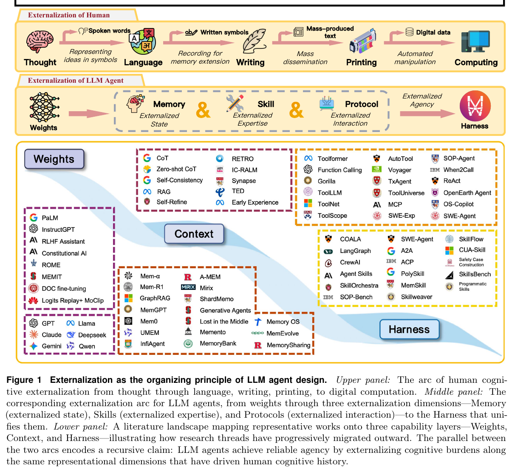
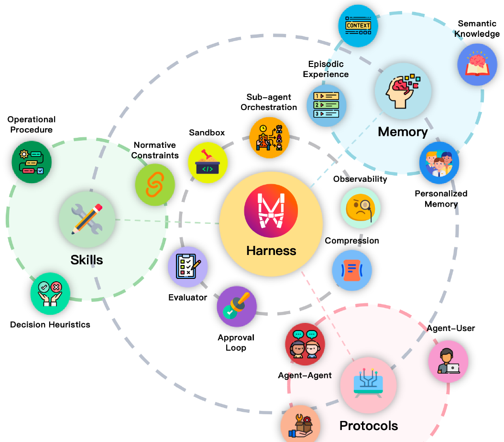
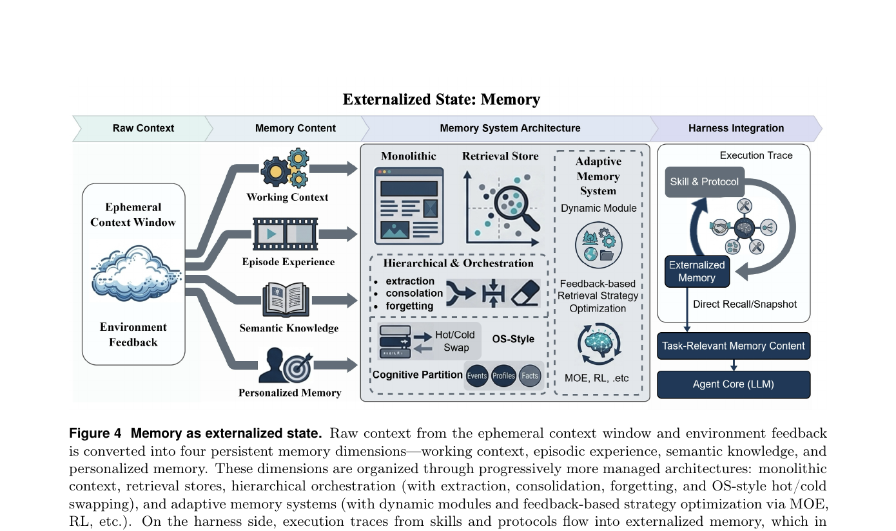
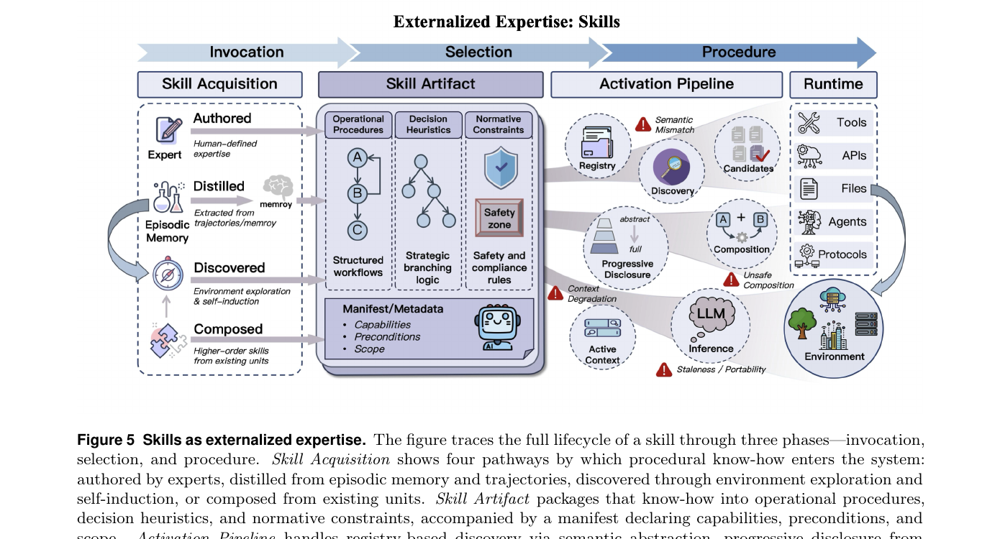
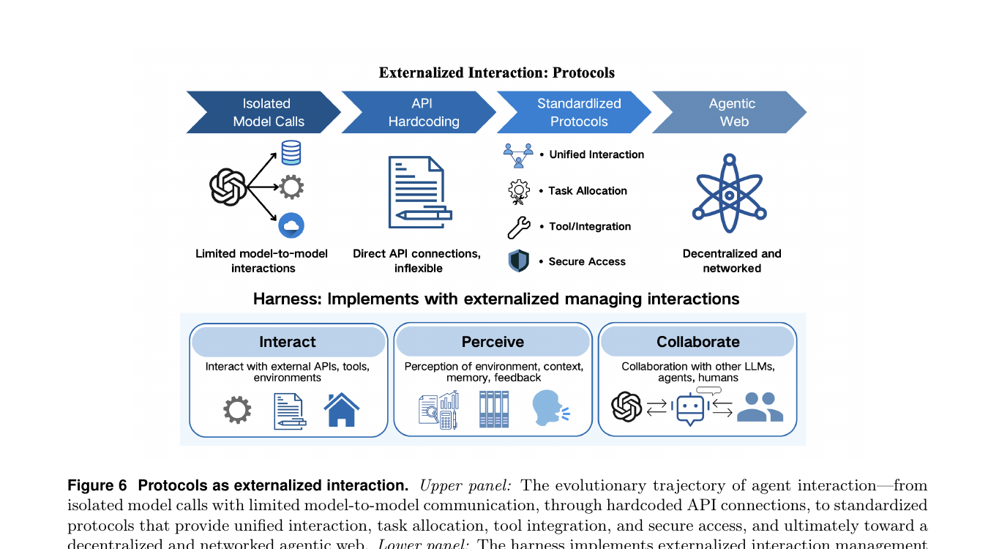
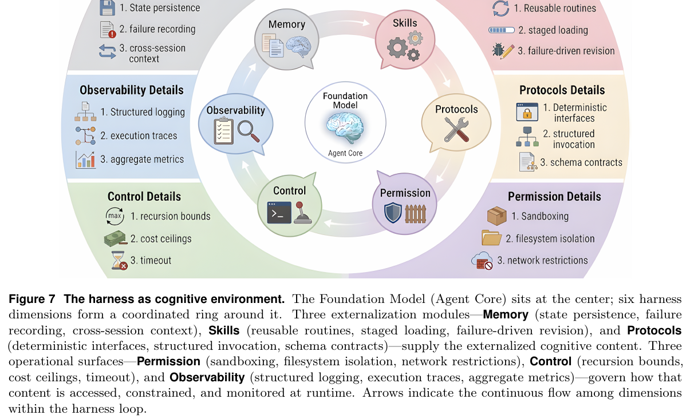
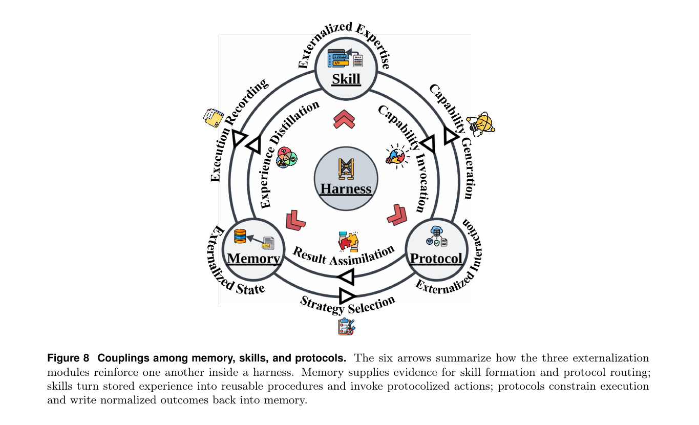

Externalization in LLM Agents: A Unified Review of Memory, Skills, Protocols and Harness Engineering
— 한국어 심층 요약 (in-depth summary, close to translation)
/writing-team 스킬을 사용해 작성되었습니다.원논문 9개 섹션·54페이지를 ToC에 따라 그대로 정리한 심층 요약 (번역에 가까움) · Eduteam AI Edu Day · Upstage Education
ABSTRACT · 초록 요약
거대 언어 모델(LLM) 에이전트는 이제 모델의 가중치를 바꾸기보다 모델 주변의 런타임을 재조직하는 방식으로 만들어지는 경우가 점점 더 많아지고 있다. 이전 시스템이 모델 내부에서 스스로 복원하기를 기대했던 능력들이 이제는 메모리 저장소, 재사용 가능한 스킬, 상호작용 프로토콜, 그리고 이들을 신뢰성 있게 묶어 주는 하니스(harness)로 외재화(externalized)되고 있다. 본 논문은 이러한 변화를 외재화(externalization)라는 렌즈로 검토한다.
Norman의 인지적 인공물(cognitive artifact) 개념에 기대어, 저자들은 에이전트 인프라가 단순히 보조적인 부품을 덧붙이기 때문에 중요한 것이 아니라, 다루기 어려운 인지적 부담을 모델이 안정적으로 처리할 수 있는 형태로 변환해 주기 때문에 중요하다고 주장한다. 이 관점에서 메모리는 시간을 가로지르는 상태(state)를 외재화하고, 스킬은 절차적 전문성을 외재화하며, 프로토콜은 상호작용의 구조를 외재화한다. 하니스 엔지니어링은 이들을 통제된 실행 환경으로 묶어 주는 통합 층으로 작동한다.
본 한국어 요약은 weights → context → harness로 이어지는 역사적 진행을 추적하고, 메모리·스킬·프로토콜을 서로 구분되지만 결합되어 있는 세 가지 외재화 형태로 분석하며, 이들이 더 큰 에이전트 시스템 안에서 어떻게 상호작용하는지 살핀다. 또한 파라메트릭 능력과 외재화된 능력 사이의 트레이드오프, 자가 진화 하니스(self-evolving harness)와 공유 에이전트 인프라 같은 미래 방향, 그리고 평가·거버넌스·모델과 외부 인프라의 장기 공진화라는 과제들을 정리한다. 그 결과는 실용적인 에이전트의 진보가 왜 점점 더 강한 모델뿐 아니라 더 좋은 외부 인지 인프라에 의존하는지를 설명하는 시스템 차원의 프레임워크다.
1Introduction
"The power of the cognitive artifact comes from its function as a representation. … Cognitive artifacts do not change human capabilities. They change the task." — Donald A. Norman
인간 문명의 역사 자체를 인지적 외재화(cognitive externalization)의 역사로 읽을 수 있다. 구어는 사적인 사고를 공유 가능한 상징의 형태로 바꾸었다. 글쓰기는 깨지기 쉬운 생물학적 기억에서 지식을 떼어내어 영속적인 물질 기록으로 옮겼다. 인쇄는 지식의 복제를 사회적 규모로 기계화했다. 디지털 계산은 산술과 상징 조작을 신경 노력의 영역에서 프로그램 가능한 기계의 영역으로 재배치했다. 이 모든 전환에서 결정적이었던 변화는 인공물 없이도 인간이 더 유능해졌다는 것이 아니다. 오히려 인공물이 선택된 부담을 바깥으로 옮김으로써 인지 시스템을 재조직해 주었고, 그 결과 한정된 내부 자원이 계획·추상·창의에 쓰일 수 있게 되었다 [Norman, 1993]. 그리고 바깥으로의 위임이라는 똑같은 패턴이 이제 기계 지능의 최전선 — 거대 언어 모델 에이전트의 설계 — 에서 다시 일어나고 있다.
이러한 관점은 인지적 인공물(cognitive artifact) 이론에 자연스러운 이론적 닻을 둔다 [Norman, 1991, 1993]. 핵심 통찰은, 외부 보조물이 변하지 않은 내부 능력을 단순히 증폭시키는 것이 아니라 과제 자체를 변형(transform)한다는 것이다. 쇼핑 목록은 생물학적 기억 용량을 늘려 주지 않는다. 어려운 회상(recall) 문제를 인식(recognition) 문제로 바꾸어 줄 뿐이다. 지도는 항법을 단지 "더 잘하게" 만드는 것이 아니라, 숨겨진 공간 관계를 눈에 보이는 구조로 변환해 준다. 따라서 인공물의 힘은 표상적 변환(representational transformation)에 있다 — 에이전트가 이미 가지고 있는 역량으로 더 안정적으로 풀 수 있도록 문제를 재구조화해 주는 것이다 [Norman, 1991].
저자들은 똑같은 논리가 LLM 기반 에이전트의 가장 중요한 설계 결정들을 지배한다고 주장한다. 본 논문의 중심 명제는 외재화(externalization) — 즉 모델 내부 계산을 영속적이고, 검사 가능하며, 재사용 가능한 외부 구조로 점진적으로 옮겨 가는 흐름 — 이 곧 전이의 논리(transition logic)라는 것이다. 다시 말해, 각 아키텍처 전환이 왜 일어났고 어떤 종류의 신뢰성을 보존하려 한 것이었는지를 설명해 주는 메커니즘이자, 메모리, 스킬, 프로토콜, 하니스 엔지니어링에서의 최근 발전들을 하나로 묶어 주는 논리다. 이는 단순히 엔지니어링 편의에 관한 주장이 아니라, 신뢰할 수 있는 에이전시(agency)가 어디에서 비롯되는가에 관한 주장이다. 그것은 그저 점점 더 큰 모델에서 오는 것이 아니라, 내부 능력과 외부 인프라가 함께 필요한 역량 전체를 감당하도록 과제 요구를 체계적으로 재구조화하는 데에서 온다 [Norman, 1991; Sumers et al., 2024].

위 패널: 인간 인지 외재화의 흐름 — 사고 → 언어 → 글쓰기 → 인쇄 → 디지털 계산. 중간 패널: 이에 대응하는 LLM 에이전트의 외재화 흐름 — 가중치(Weights) → 메모리·스킬·프로토콜의 세 외재화 차원 → 이를 통합하는 하니스(Harness). 아래 패널: 대표적인 연구들을 Weights · Context · Harness 세 층에 매핑한 문헌 풍경. 두 흐름의 평행 구조는 LLM 에이전트가 인간 인지 역사를 이끌어 온 것과 같은 표상 차원을 따라 인지적 부담을 외재화함으로써 신뢰할 수 있는 에이전시에 도달한다는 재귀적 주장을 담고 있다.
이 렌즈는 현재의 실무를 이해하는 데 특히 명료하다. 동시대의 진보는 흔히 더 큰 모델, 더 나은 학습 절차, 더 정교한 추론 흔적을 향한 경주로 서술된다. 그러나 그러한 요인들만으로는 실제 시스템에서 관찰되는 신뢰성 향상을 모두 설명할 수 없다. 신뢰성에서 가장 큰 향상의 상당수는 베이스 모델을 전혀 바꾸지 않은 채 일어났다. 그러한 향상은 영속적인 메모리를 더하고, 재사용 가능한 스킬을 조직하고, 도구 인터페이스를 표준화하고, 명시적인 제어 로직을 통해 작업을 라우팅하는 등, 모델을 둘러싼 환경을 바꾼 결과로 나타났다 [Sumers et al., 2024; Wang et al., 2024a; Li, 2025; Luo et al., 2025]. 실무의 질문은 점점 "모델이 얼마나 유능한가?"만이 아니라 "어떤 부담이 외부로 떠넘겨졌기에 모델이 매번 내부에서 그것을 풀지 않아도 되게 되었는가?"로 옮겨가고 있다.
맨몸의 LLM은 세 가지 만성적인 부조화를 마주한다. (1) 컨텍스트 윈도우는 유한하고 세션 메모리는 약하거나 아예 없어서 연속성(continuity) 문제가 발생한다 — 메모리 외재화가 이를 다룬다. (2) 길고 다단계로 이어지는 절차가 일관되게 수행되기보다 매번 새로 도출되기 때문에 변동성(variance) 문제가 생긴다 — 스킬 외재화가 이를 다룬다. (3) 외부 도구·서비스·협력자와의 상호작용을 자유 형식 프롬프트에만 맡겨 두면 쉽게 깨지기 때문에 조정(coordination) 문제가 발생한다 — 프로토콜 외재화가 이를 다룬다 [Sumers et al., 2024; Packer et al., 2023]. 외재화가 중요한 이유는 이 부담들을 각각 모델이 더 안정적으로 다룰 수 있는 형태로 바꾸어 주기 때문이다.
구체적인 예시가 직관을 잡아 준다. 거대한 저장소에서 기능을 구현하고, 테스트를 돌리고, PR을 여는 소프트웨어 엔지니어링 에이전트를 생각해 보자. 외재화가 없다면 모델은 저장소 구조, 프로젝트 컨벤션, 워크플로 상태, 도구 상호작용 상태를 모두 깨지기 쉬운 프롬프트 안에 끌어안고 있어야 한다. 외재화가 있다면 영속적인 프로젝트 메모리가 맥락을 공급하고, 재사용 가능한 스킬 문서가 컨벤션과 워크플로를 인코딩하며, 프로토콜화된 도구 인터페이스가 올바른 스키마를 강제하고, 하니스가 단계를 순서 짓고 출력을 검증하며 실패를 관리한다. 베이스 모델은 그대로지만, 풀어야 할 과제의 표상이 달라지는 것이다.
이 더 넓은 관점은 분산 인지 및 확장된 인지(distributed and extended cognition)의 직관과도 맞닿아 있다 — 기억하기, 행동 안내하기, 상호작용 조정하기와 같은 결정적인 일들이 외부 구조에 위임되고 나면, 지능은 더 이상 모델 안에만 자리 잡고 있지 않게 된다 [Clark and Chalmers, 1998]. 저자들은 이 전통의 핵심 엔지니어링적 통찰 — "에이전트"와 "환경" 사이의 경계가 실제 성능에 영향을 미치는 설계 선택(design choice)이라는 통찰 — 에는 기대지만, 그보다 강한 존재론적 주장에는 거리를 둔다. 초점은 실용적이다. 외재화는 그 결과로 만들어진 시스템의 신뢰성·합성성·통제 가능성으로 가치가 측정되는 설계 원리로 다루어진다.
이제 하니스를 구성하는 세 가지 외재화 차원을 살핀다. 각 차원은 Figure 1(중간 패널)이 강조하는 표상적 변환 중 하나에 대응한다.
메모리는 시간을 가로지르는 상태를 외재화한다.
맨몸의 모델이 컨텍스트 윈도우를 이력의 유일한 매개체로 쓰는 대신, 메모리 시스템은 누적된 지식 — 사용자 선호, 이전의 작업 궤적, 해소된 모호성, 도메인 사실 — 을 한 세션을 넘어 보존하고, 관련된 순간에만 선택적으로 끌어올 수 있게 해 준다. 핵심 변환은 회상(recall)에서 인식(recognition)으로이다. 에이전트는 더 이상 잠재 가중치로부터 과거 지식을 다시 만들어 낼 필요가 없다 — 영속적이고 검색 가능한 저장소에서 그것을 꺼내 쓰면 된다 [Lewis et al., 2020; Park et al., 2023; Packer et al., 2023; Chhikara et al., 2025; Xu et al., 2025b].
스킬은 절차적 전문성을 외재화한다.
모델 가중치에 기대어 작업별 노하우를 매 호출마다 다시 만들어 내는 대신, 스킬 시스템은 절차·모범 사례·운영 지침을 재사용 가능한 산출물로 패키지화한다. 핵심 변환은 생성(generation)에서 합성(composition)으로이다. 에이전트는 매 단계를 즉흥적으로 만들어 내는 대신, 사전에 검증된 구성 요소들을 조합해 행동을 짜낸다 [OpenAI, 2023a; Schick et al., 2023; Wang et al., 2023a; Anthropic, 2025, 2026; Jiang et al., 2026b].
프로토콜은 상호작용 구조를 외재화한다.
도구·서비스·다른 에이전트와의 조정을 즉흥적인 프롬프트 수준에 맡기는 대신, 프로토콜은 발견·호출·위임·권한 관리를 위한 명시적이고 기계 판독 가능한 계약을 정의한다. 핵심 변환은 즉흥적인 것에서 구조화된 것으로이다 — 모호하고 깨지기 쉬운 의사소통이 상호운용 가능하고 통제 가능한 교환으로 바뀐다 [Anthropic, 2024; Google Cloud, 2025a; Ehtesham et al., 2025c].
하니스는 이 세 차원을 모두 떠받치며, 외재화된 인지가 실무에서 일관되게 작동하도록 만들어 주는 오케스트레이션 로직, 제약, 관측 가능성, 피드백 루프를 제공하는 엔지니어링 층이다. 하니스는 메모리·스킬·프로토콜과 나란히 놓이는 네 번째 외재화가 아니다. 이 세 가지 외재화가 동작하고 서로 상호작용하는 런타임 환경 그 자체이다.
이 차원들은 서로 격리된 채로 진화하지 않는다. 메모리를 키우면 부족한 컨텍스트 예산을 두고 스킬 로딩과 경쟁할 수 있다. 프로토콜 표준화는 상호운용성을 높여 주지만, 능력이 어떻게 패키지화되고 호출되는지에 제약을 가한다. 스킬을 실행하면 나중에 메모리가 되는 흔적이 남고, 메모리에서 끌어올리는 결과는 어떤 스킬·프로토콜 경로가 선택되는지에 영향을 준다. 하니스는 이러한 모든 상호작용을 매개해야 한다.
이들 방향은 각각 이미 상당한 기술 생태계를 이루어 왔다. 메모리 연구는 단순한 검색 보강(retrieval augmentation)에서 더 정교한 계층형 메모리 아키텍처로 진보했다 [Lewis et al., 2020; Packer et al., 2023; Chhikara et al., 2025; Xu et al., 2025b]. 스킬 관련 작업은 좁은 함수 호출(function calling)과 도구 학습에서 출발해, 재사용 가능한 능력 패키지·레지스트리·점진적 공개(progressive disclosure) 메커니즘으로 확장되었다. 프로토콜 작업은 맞춤형 도구 스키마와 프레임워크별 글루 코드에서 벗어나, 에이전트–도구 및 에이전트–에이전트 상호작용을 위한 표준화된 인터페이스 층으로 이동해 왔다. 기존 서베이들은 RAG, 깊은 검색(deep search), 도구 학습, 광범위한 에이전트 아키텍처, 프로토콜 상호운용성 등 이 풍경의 중요한 단면들을 비추어 왔다. 그중 가장 가까운 개념적 다리는 CoALA이다 [Sumers et al., 2024]. 다만 여전히 충분히 다루어지지 않은 부분은, 왜 이러한 발전들이 외재화라는 형태로 수렴해 가고 있는지, 그리고 이 수렴이 에이전트의 정의 자체를 어떻게 다시 만들어 내는지에 대한 공통의 설명이다.
따라서 본 논문의 목표는 또 하나의 부품 단위 서베이를 따로 떼어내어 제공하는 것도, 에이전트의 진보를 어느 한 특정 프레임워크로 환원하는 것도 아니다. 대신 다음 네 가지 주장을 중심으로 짜인 시스템 차원의 리뷰를 제공한다.
- 메모리는 에이전트의 상태를 시간을 가로질러 외재화한다 — 장기 연속성(long-horizon continuity)을 선택적 검색(selective retrieval)으로 변환한다.
- 스킬은 절차적 전문성을 외재화한다 — 암묵적인 노하우를 명시적이고 재사용 가능한 운영 지침으로 변환한다.
- 프로토콜은 상호작용 구조를 외재화한다 — 모호한 의사소통을 상호운용 가능하고 기계가 읽을 수 있는 계약으로 변환한다.
- 하니스 엔지니어링은 이렇게 외재화된 모듈들을 통합한다 — 제약·관측 가능성·피드백 루프·제어점이 갖춰진 일관된 런타임 환경으로 묶어 준다.
이하 본 요약은 다음과 같이 진행된다. 2절은 가중치 → 컨텍스트 → 하니스로 이어지는 역사적 경로를 추적한다. 3–5절은 메모리·스킬·프로토콜을 서로 구분되지만 보완적인 세 가지 외재화 형태로 분석한다. 6절은 하니스 엔지니어링을 외재화된 에이전트 설계를 아우르는 통합 분야로 제시한다. 7절은 모듈 사이의 주요 횡단(cross-cutting) 상호작용을 살핀다. 8절은 더 적응적이고 자가 진화적인 형태의 외재화를 향한 미래 방향을 논의하고, 9절은 에이전트 연구에 대한 더 넓은 함의로 결론을 맺는다.
2Background: From Weights to Context to Harness
LLM 에이전트의 최근 역사는 모델 자체로부터 점차 바깥으로 향하는 흐름으로 이해할 수 있다. 능력은 처음에는 가중치의 속성으로, 이어서 프롬프트와 컨텍스트 윈도우의 속성으로, 그리고 이제는 모델이 그 안에서 동작하는 더 넓은 인프라의 속성으로 다루어진다. Figure 2는 이 궤적을 Weights · Context · Harness라는 세 개의 층으로 시각화하며, 2022년부터 2026년까지의 흐름을 따라 학계·산업계의 연구 주제가 어떻게 이동해 왔는지를 보여 준다. 이 단계들은 서로 배타적이라기보다 층층이 쌓여 있는 관계에 가깝다 — 가중치는 가장 인프라가 두꺼운 시스템에서도 여전히 중요하지만, 각 단계마다 시스템에서 수정 가능한 지능이 어디에 놓이는지, 그리고 그 결과로 엔지니어링의 노력이 어디에 가장 많이 투입되는지가 달라진다.

Weights · Context · Harness 세 층이 위로 쌓여 가는 모습을, 2022–2026년 타임라인을 따라 시각화한 그림. 커뮤니티의 무게중심이 사전학습·정렬과 같은 매개변수 차원에서 출발해 프롬프팅·RAG·컨텍스트 엔지니어링을 거쳐, 지금은 도구 생태계·프로토콜·스킬·다중 에이전트 오케스트레이션과 같은 하니스 차원의 인프라로 옮겨가고 있음을 보여 준다.
2.1Capability in Weights
가중치 층은 현대 LLM 배포의 가장 초기 흐름에 해당한다. 능력이 거의 전적으로 모델 파라미터로 식별되던 시기다. 대규모 코퍼스에 대한 사전학습은 광범위한 통계적 규칙성, 세계 지식, 잠재적인 추론 습관을 가중치 안으로 압축해 넣었다 [Brown et al., 2020; Chowdhery et al., 2023; Touvron et al., 2023]. 스케일링 법칙은 파라미터 수, 데이터 양, 손실 사이의 예측 가능한 관계를 드러내면서, "발전은 모델 크기를 따라간다"라는 직관을 강화해 주었다 [Kaplan et al., 2020; Hoffmann et al., 2022]. GPT-4, Gemini, DeepSeek-V3, Qwen2.5와 같은 시스템들이 광범위한 다중 작업 능력을 보여 주자, 분야의 지배적인 이야기 또한 "더 좋은 에이전트 = 더 크고 더 잘 학습된 모델"이라는 등식으로 굳어졌다. 지도학습 미세조정(SFT)과 선호도 최적화는 지시 따르기, 대화 스타일, 거절 행동, 도메인 컨벤션을 가르치며 이 모델들을 더 쓸 만한 어시스턴트로 다듬었고 [Ouyang et al., 2022; Bai et al., 2022a], DPO는 별도의 보상 모델 없이 정렬 단계를 단순화했다 [Rafailov et al., 2023]. 이러한 관점에서 발전이란 곧 모델 자체를 수정하거나 교체하는 것을 의미했다.
이 패러다임은 지금도 토대로 남아 있고, 가중치 공간에 능력을 두는 방식에는 여러 가지 장점이 있다 — 외부 조회 없이 빠른 추론, 컴팩트한 배포, 작업별 보조 장치 없이도 강한 일반화. 의료 질문에 답하고, 시를 쓰고, 프로그램을 디버그하고, 법적 계약을 요약하는 일이 — 어느 것도 주변 시스템을 바꾸지 않은 채 — 같은 모델 하나로 해결되는 단발성·문맥 자족적 작업이라면, 가중치 중심의 시각만으로도 종종 충분하다.
그러나 가중치 공간에 모든 것을 새겨 넣는 방식은 지식·절차·정책을 정적인 산출물에 너무 단단히 묶어 버리기도 한다. 단 하나의 사실 — 가령 어느 나라의 현 국가원수가 누구인지 — 를 갱신하는 데에도 재학습이나 지식 편집(knowledge editing) [Meng et al., 2022; Mitchell et al., 2022; Yao et al., 2023b], 혹은 추가적인 정렬 층을 덧대는 패치가 필요하며, 이 모두가 다른 능력에 의도치 않은 부작용을 일으킬 위험을 안고 있다. 모델이 왜 특정한 방식으로 행동했는지를 감사하기 어려운 이유도 마찬가지다. 관련된 지식이 검사 가능한 모듈이 아니라 수십억 개의 파라미터에 분산되어 인코딩되어 있기 때문이다 [Zhao et al., 2024]. 개인화도 어색하다 — 단일한 가중치 집합이 서로 다른 이력·선호·제약을 가진 수백만 명의 사용자를 동시에 응대해야 하지만, 파라미터 수준에서 그들을 구분해 낼 수단은 없다.
파라메트릭 지식의 핵심 한계는 그것을 선택적으로 갱신하고, 합치고, 통제하기가 어렵다는 점이다. 에이전트가 단발 질문 응답에 머무르는 동안에는 이 약점도 그럭저럭 다스릴 수 있었다. 그러나 시스템이 장기 작업 실행 — 상태가 누적되고, 절차가 안정적으로 반복되어야 하며, 여러 도구가 조정되어야 하는 작업 — 으로 옮겨가자, 가중치 안에서 지식·스킬·상호작용 규칙을 모듈식으로 관리하기가 어렵다는 점이 운영상 더욱 두드러지게 되었다. 이러한 변화가 개발자들로 하여금 일부 부담을 모델 파라미터에만 의존하지 않고 다음 층으로 옮기도록 이끌었다.
2.2Capability in Context
컨텍스트 층은 관심의 초점이 모델 수정에서 입력 설계로 옮겨간 단계를 가리킨다. 프롬프트 엔지니어링은 가중치를 건드리지 않고도 모델 행동이 실질적으로 바뀔 수 있다는 점을 보여 주었다 — 퓨샷 예시, 역할 지시, 사고 사슬(chain-of-thought) 분해, 자기 일관성(self-consistency) 흔적은 모두 같은 모델이 같은 과제를 어떻게 수행하는지를 바꾸어 놓았다 [Wei et al., 2022; Wang et al., 2023b; Kojima et al., 2022]. 더 구조화된 추론 흔적 기법들이 그 뒤를 이었다. ReAct는 추론 흔적과 도구 사용을 하나의 생성 루프 안에 엮어, 어떤 아키텍처 변경도 없이 프롬프트만으로 에이전트와 같은 행동이 가능함을 보였다 [Yao et al., 2023a]. Tree of Thoughts는 사고 사슬을 중간 추론 상태에 대한 의도적인 탐색으로 일반화했다 [Yao et al., 2024]. Self-Refine은 반복적인 자기 비판을 도입했고 [Madaan et al., 2023], APE/OPRO와 같은 자동 프롬프트 최적화는 모델 자체를 사용해 프롬프트 공간을 탐색함으로써 수작업 부담을 덜어 주었다 [Zhou et al., 2023; Pryzant et al., 2023]. 검색 보강 생성(RAG)은 질의 시점에 외부 문서를 컨텍스트로 동적으로 끌어옴으로써, 보다 체계적인 외재화의 형태를 가져왔다 [Lewis et al., 2020; Borgeaud et al., 2022; Ram et al., 2023; Gao et al., 2024]. 따라서 관심의 초점은 "모델이 무엇을 내재화했는가"에서 "각 호출을 둘러싼 정보 파이프라인이 어떻게 짜여 있는가"로 옮겨갔다.
이 단계는 에이전트 설계를 실질적으로 훨씬 더 유연하게 만들어 주었다. 개발자는 그래디언트 갱신 없이도 런타임에 지역적 지시, 도메인 지식, 출력 스키마, 검색된 근거를 덧붙일 수 있게 되었다. 컨텍스트는 개발자가 모델을 위한 인지를 무대 뒤에서 단계적으로 준비하는 매체 — 모델이 필요로 하기 직전에 알맞은 정보를 조립해 둘 수 있는 작업대 — 가 되었다. 많은 실제 시스템에서, 프롬프트와 검색 파이프라인을 반복해서 다듬는 일은 미세조정보다 훨씬 더 저렴하고 빠른 것으로 드러났다. 모델은 동결된 채로 두고, 주변의 프롬프트 템플릿·검색 로직·도구 명세가 빠르게 진화할 수 있었다.
컨텍스트 중심의 단계는 Norman이 말한 표상적 변환이라는 개념을 통해서도 해석될 수 있다. "모델이 사실 X를 알고 있는가?"라는 어려운 회상 문제가 "사실 X가 컨텍스트에 놓였을 때 모델이 그것을 사용할 수 있는가?"라는 인식 문제로 바뀐 것이다 [Liu et al., 2024a]. 이는 인간 외재화의 흐름에서 글쓰기와 함께 일어난 회상→인식의 전환과 닮아 있다(Figure 1 위쪽 패널). 모델은 답을 통째로 외울 필요가 없었다 — 일단 제시되고 나면 관련된 구절을 인식하고 적용하기만 하면 되었다. Figure 2에서 이 전환은 컨텍스트 층에 등장하는 프롬프팅, RAG, 사고 사슬과 같은 기법들의 출현에 대응한다 [Zhang et al., 2024; Ram et al., 2023].
그러나 컨텍스트 중심 설계에는 중요한 제약도 있다. 컨텍스트 윈도우는 유한하고 비싸며, 한계 효용이 낮은 자료들로 가득 차면 자주 잡음으로 변한다. 긴 프롬프트는 성능을 끌어올리기는커녕 떨어뜨릴 수 있다. "lost in the middle" 현상은 모델이 긴 입력 전반에 고르게 주의를 두지 못하며, 컨텍스트 한가운데 놓인 정보에 대해서는 검색 정확도가 가파르게 떨어진다는 점을 보여 준다 [Liu et al., 2024a]. 컨텍스트 길이가 2K 토큰에서 100K 이상까지 극적으로 늘어났음에도 [Chen et al., 2023; Peng et al., 2024], 근본적인 긴장은 사라지지 않는다 — 용량이 늘었다고 해서 선택적인 큐레이션의 필요성이 없어지는 것은 아니다. 더불어 컨텍스트 자체는 일시적이다 — 상태가 다른 곳에 명시적으로 외재화되지 않는 한, 새로운 세션은 언제나 부분적인 기억상실로 시작한다. 시스템이 더 복잡해지면, 프롬프트 조립만으로는 깨지기 쉽고 즉흥적인 제어 메커니즘에 그치고 만다. 모델에게 더 많은 지시를 줄 수는 있지만, 그것만으로 시스템이 세션을 가로질러 상태를 보존하고, 다단계 워크플로를 일정에 맞춰 실행하고, 하위 에이전트 사이를 조정하고, 부분 실패에서 복구하고, 시간에 걸쳐 행동에 대한 제약을 강제하는 방법까지 알게 되는 것은 아니다. 이러한 한계들이 다음의 바깥쪽 단계가 등장한 이유를 설명해 준다.
2.3Capability through Infrastructure
하니스 층은 — Figure 2의 가장 위쪽 띠이자 Figure 1(아래쪽 패널)의 가장 오른쪽 영역 — 능력이 프롬프트 관리의 영역을 넘어 영속 인프라로 확장되는 현재 단계를 가리킨다. 컨텍스트 윈도우가 포화되고 프롬프트 템플릿이 점차 다루기 힘들어지자, 엔지니어링의 관심은 점차 "모델에게 무엇을 말할 것인가?"에서 "모델이 어떤 환경 속에서 동작해야 하는가?"로 옮겨갔다. 성숙한 에이전트 시스템에서 신뢰성은 점점 더 외부 메모리 저장소, 도구 레지스트리, 프로토콜 정의, 샌드박스, 하위 에이전트 오케스트레이션, 압축 파이프라인, 평가자, 테스트 하니스, 승인 루프에 의존한다 [Wang et al., 2024a; Li, 2025; Luo et al., 2025; Xi et al., 2023].
이 변화의 가장 초기 모습은 단순했지만 시사하는 바가 컸다. Auto-GPT [Richards, 2023]와 BabyAGI [Nakajima, 2023]는 LLM을 작업 큐, 영속 메모리, 웹 접근이 갖춰진 루프 안에 감싸 두었고, 최소한의 하니스만으로도 단일 프롬프트로는 떠받칠 수 없는 행동을 유지할 수 있다는 사실을 보여 주었다. 그 뒤를 이어 더 원리적인 프레임워크들이 빠르게 등장했다. AutoGen은 다중 에이전트 메시지 교환을 공식화했고 [Wu et al., 2023], MetaGPT는 역할 기반 협업과 명시적 절차를 더했으며 [Hong et al., 2023], CAMEL은 작업 분해를 위한 구조화된 대화를 탐색했고 [Li et al., 2023], Reflexion은 에피소드를 가로지르는 피드백을 보존했다 [Shinn et al., 2023]. 이 시스템들 전반에 걸쳐 공통된 움직임은, 부담을 모델 바깥으로, 모델을 둘러싼 구조 안으로 옮겨 두는 것이었다.
같은 움직임은 이제 배포 도메인 전반에서 관찰된다. 코드 에이전트는 파일·셸·버전 관리·테스트·재사용 가능한 스킬 산출물을 갖춘 개발 하니스 안에 모델을 끼워 넣는다 — SWE-Agent와 OpenHands가 대표적인 예다 [Yang et al., 2024a; Wang et al., 2024b]. 연구·기업용 에이전트는 검색·브라우징·장기 오케스트레이션 파이프라인을 더한다(Deep Research 류 시스템 등) [OpenAI, 2025b; Google, 2024]. Voyager, LangGraph, CrewAI, OS-Copilot 같은 체화·워크플로 시스템 역시 제어 흐름·환경 접근·재사용을 명시적으로 드러낸다 [Wang et al., 2023a; LangChain, 2024; CrewAI, 2024; Wu et al., 2024]. 반복되는 패턴은 분명하다 — 신뢰성 문제는 점점 더 프롬프팅이 아니라 환경을 바꿈으로써 풀리고 있다.
Figure 3가 보여 주듯, 하니스는 외재화의 세 가지 큰 갈래 — 메모리·스킬·프로토콜 — 을 모두 아우른다. 이는 하니스가 흡수하는 세 가지 큰 부담의 갈래에 그대로 대응한다. 메모리 시스템은 시간을 가로지르는 상태를 외재화하여, 연속성이 더 이상 일시적인 컨텍스트에 매달리지 않게 해 준다. 스킬 시스템은 절차적 전문성을 외재화하여, 복잡한 워크플로를 매번 새로 만들어 내는 대신 불러와 사용할 수 있게 한다. 프로토콜은 상호작용 구조를 외재화하여, 도구·에이전트 사이의 조정이 즉흥적인 프롬프트가 아니라 통제된 계약을 따르도록 만든다. 이 요소들이 함께 어우러져, 모델을 감싸 안고 모델이 마주하는 과제를 그 내부 능력으로 더 안정적으로 풀 수 있는 형태로 변환해 주는 영속 인프라 — 즉 하니스 — 를 이룬다.

중앙에 하니스(Harness)가 자리 잡고, 그 주위를 세 가지 외재화 차원이 둘러싼다 — 메모리(Memory): 작업 컨텍스트, 의미 지식, 에피소드 경험, 개인화 메모리. 스킬(Skills): 운영 절차, 결정 휴리스틱, 규범적 제약. 프로토콜(Protocols): 에이전트–사용자, 에이전트–에이전트, 에이전트–도구. 샌드박싱, 관측 가능성, 압축, 평가, 승인 루프, 하위 에이전트 오케스트레이션 같은 운영 요소들이 하니스의 중심부와 외재화 모듈들 사이의 상호작용을 매개한다.
이러한 틀에서 보면 "에이전트 엔지니어링"은 점점 "하니스 엔지니어링"의 모습을 띠게 된다. 모델은 여전히 핵심 추론 엔진이지만, 더 이상 지능이 자리 잡는 유일한 장소가 아니다. 능력은 모델이 무엇을 보고, 기억하고, 호출하고, 어떤 행동이 허용되는지를 결정하는 구조 전체에 분산되어 있다.
2.4Externalization as the Transition Logic
가중치에서 컨텍스트, 그리고 하니스로 이어지는 길을 한데 모아 보면, 이는 Norman의 의미에서 외재화의 이야기가 된다 [Norman, 1991] — 모델 안에서 다루기 어려운 부담들이 점차 외부의 명시적인 산출물로 옮겨지고, 모델이 마주하는 과제 또한 그에 따라 변환되어 간다. 가변 지식(mutable knowledge)은 가중치에서 검색 시스템과 런타임 컨텍스트로 옮겨지며, 회상을 인식으로 바꾸어 준다. 재사용 가능한 절차(reusable procedure)는 암묵적인 습관에서 명시적인 스킬로 옮겨지며, 즉흥적인 생성을 구조화된 합성으로 바꾸어 준다. 상호작용 규칙(interaction rule)은 즉흥적인 프롬프팅에서 프로토콜로 옮겨지며, 모호한 조정을 통제된 계약으로 바꾸어 준다. 런타임 신뢰성(runtime reliability)은 다시 하니스 로직 안으로 옮겨지며, 거기서 제약·관측 가능성·피드백 루프가 명시적인 형태로 드러나게 된다.
이러한 재배치는 일종의 부조화에 대한 응답으로 이해할 때 가장 잘 들어맞는다. LLM은 주어진 정보 위에서 유연하게 종합하고 추론하는 일에는 강하지만, 안정적인 장기 기억, 절차의 반복 가능성, 외부 시스템과의 통제된 상호작용에는 그만큼 신뢰할 수 없다. 따라서 외재화는 모델을 대체하기보다는 모델 주위에 더 큰 인지 시스템을 짜 올리는 일이며, 이는 CoALA [Sumers et al., 2024]와 같은 인지 아키텍처 관점과도 부합한다. 하니스의 세 차원은 이 틀에서 곧바로 따라 나온다 — 메모리는 시간에 걸친 연속성을, 스킬은 절차의 일관성을, 프로토콜은 상호작용의 구조를 다룬다. 다음 절들은 이들을 차례로 자세히 살펴본다.
3Externalized State: Memory
메모리의 외재화는 에이전시가 짊어진 시간의 부담(temporal burden)을 다룬다. 맨몸의 언어 모델은 연속성, 사전 경험, 사용자 고유의 사실, 부분적으로 마무리된 작업을 모두 일시적인 프롬프트 안에 끌어안고 있어야 한다. 작업이 세션과 분기, 중단을 가로질러 길게 이어지면 그 부담은 불안정해지고 비싸진다. 메모리는 이 부담을 모델 외부에서 쓰고, 갱신하고, 다시 꺼내어 쓸 수 있는 영속적인 상태로 외재화한다. 하니스가 갖춰진 에이전트에서 메모리는 단순한 보관소 이상의 역할을 한다 — 작업을 이어 가기 위한 체크포인트, 스킬로 정제될 수 있는 흔적, 프로토콜의 라우팅에 영향을 주는 통계, 거버넌스 메커니즘이 점검하고 제약할 수 있는 영속 상태를 함께 공급한다. 이 역할을 정확히 그려 내기 위해, 본 절은 세 가지 연결된 질문을 던진다 — 메모리가 어떤 종류의 상태를 외재화하는가(3.1), 그 설계 공간이 어떻게 진화해 왔는가(3.2), 메모리가 더 큰 하니스와 어떻게 결합되는가(3.3). 마지막으로 3.4는 인지적 인공물의 관점에서 메모리를 다시 해석한다.

일시적인 컨텍스트 윈도우와 환경 피드백으로부터 들어오는 원자료가, 영속적인 네 가지 메모리 차원 — 작업 컨텍스트(working context), 에피소드 경험, 의미 지식, 개인화 메모리 — 으로 변환된다. 이 차원들은 점차 더 적극적으로 관리되는 아키텍처로 조직된다 — 일체형 컨텍스트, 검색 저장소, 계층형(추출·통합·망각, OS 스타일의 핫/콜드 스왑), 그리고 적응형 메모리 시스템(MoE·RL 등을 통한 피드백 기반 검색 전략 최적화)이 그것이다. 하니스 쪽에서는, 스킬과 프로토콜이 만들어 내는 실행 흔적이 외재화된 메모리로 흘러 들어가고, 그 메모리는 다시 직접 회상이나 큐레이팅된 스냅샷의 형태로 작업과 관련된 메모리 콘텐츠를 에이전트 코어(LLM)에 공급한다.
3.1What Is Externalized: The Content of State
메모리의 본질은 시간을 가로지르는 에이전트의 상태를, 일시적인 컨텍스트로부터 떼어내는 데 있다. 여기서 관련된 내용은 하니스의 모든 외부 산출물이 아니라, 연속성을 보존하는 기록들이다 — 현재의 작업 상태, 지난 실행 경험, 추상화된 지식, 사용자 또는 환경에 관한 영속적인 맥락이다. 장기 상호작용에서 일관된 행동을 유지하려면, 메모리 시스템은 이 기록들을 시간적 속성과 검색 필요에 따라 분류하고 관리해야 한다. 인간 기억의 고전적 분류를 LLM 에이전트에 맞춰 적용하여, 저자들은 외재화된 상태의 다음 네 가지 차원을 구분한다.
작업 컨텍스트(Working context).
작업 컨텍스트는 현재 과제의 살아 움직이는 중간 상태다 — 열려 있는 파일, 임시 변수, 활성화된 가설, 부분적으로 짜인 계획, 실행 체크포인트 같은 것들이다. 빠르게 변하고, 묵으면 가치를 잃는다. 외재화하지 않으면 컨텍스트 윈도우가 초기화되거나 프로세스가 중단되는 순간 사라져 버린다. 코드 에이전트가 이 점을 잘 보여 준다. OpenHands나 SWE 계열 에이전트와 같은 시스템은 초안, 터미널 상태, 작업 공간 산출물을 프롬프트 바깥에 실체화해 둠으로써, 처음부터 다시 짜 맞추는 대신 현재의 운영 상태에서 곧바로 이어 갈 수 있게 한다 [Wang et al., 2025a; Yang et al., 2024b].
에피소드 경험(Episodic experience).
에피소드 경험은 과거 실행에서 일어난 일을 기록한다 — 결정 지점, 도구 호출, 실패, 결과, 회고 같은 정보다. 그 가치는 단순한 기록 보관에 있지 않다. 검색해 낸 에피소드는 구체적인 선례 역할을 하면서, 에이전트가 이미 알려진 실수를 되풀이하지 않도록 도와주고, 나중의 추상화를 위한 원재료를 제공한다. Reflexion은 실패한 시도의 회고적 요약을 재사용 가능한 경험으로 저장함으로써 이 패턴을 명시적으로 만들었다 [Shinn et al., 2023]. AriGraph는 낯선 환경에서의 국지적 상호작용 궤적을 에피소드 기억으로 다루어, 그로부터 더 넓은 세계 모델이 만들어지도록 했다 [Anokhin et al., 2024].
의미 지식(Semantic knowledge).
의미 지식은 개별 에피소드를 넘어서 살아남는 추상을 저장한다 — 도메인 사실, 일반적인 휴리스틱, 프로젝트 컨벤션, 안정적인 세계 지식 같은 것이다. 에피소드 기억과 달리 특정한 시간이나 장소를 중심으로 조직되지 않는다 [Li and Li, 2024; De Brigard et al., 2022]. 둘의 차이는 단순한 입자 크기가 아니라 기능에 있다. 에피소드 기억은 한 사례에서 무슨 일이 있었는지를 말해 주는 반면, 의미 기억은 사례들을 가로질러 무엇이 보통 성립하는지를 말해 준다. 현재의 시스템에서 외재화된 의미 기억의 가장 흔한 형태는 지식 베이스와 RAG 코퍼스다. 더 장기적인 흐름은 한층 야심적이다 — 에이전트가 정적인 사람 작성 문서에만 기대지 않고, 누적된 작업 궤적으로부터 의미 수준의 가이드를 직접 정제해 내려는 시도다.
개인화 메모리(Personalized memory).
개인화 메모리는 특정 사용자, 팀, 환경에 관한 안정적인 정보를 추적한다 — 선호, 습관, 반복되는 제약, 이전 상호작용 같은 것들이다. 이 상태는 에이전트의 일반적인 자기 개선 저장소와 한데 뭉뚱그리지 말아야 한다. 사용자별 흔적은 보존, 검색, 프라이버시 규칙이 다른 규범을 따르기 때문이다 [Xi et al., 2024; Lin et al., 2025a]. 최근 시스템들은 이 분리를 명시적으로 드러낸다 — IFRAgent는 모바일 환경의 시연으로부터 사용자 습관 저장소를 만든다 [Wu et al., 2025]; 웹 에이전트는 외재화된 프로필을 통해 암묵적인 선호를 추론하고 [Cai et al., 2025]; VARS와 같은 대화형 시스템은 세션을 가로지르는 선호 카드를 격리된 사용자 메모리 공간에 저장한다 [Hao et al., 2026]. 따라서 개인화 메모리는 에이전트가 일반적인 작업 지식을 장기 사용자 모델링과 뒤섞지 않으면서 시간에 걸쳐 적응할 수 있도록 해 주는 층이다.
이 네 층이 나중에 에이전트에게 유용해질 모든 것을 다 포괄하지는 않는다. 처음에는 에피소드 흔적의 패턴으로 등장하는 절차의 반복적 규칙성도, 하니스가 그것을 명시적이고 재사용 가능한 가이드로 승격시키는 순간 더는 메모리에 속하지 않는다. 그 시점에 그 규칙성은 메모리 층이 아니라 스킬 층의 식구가 된다.
이 층들을 한데 모아 보면, 메모리가 단일한 동질적 데이터베이스가 아니라 여러 추상 수준에서의 연속성이라는 시간적 부담을 외재화하고 있다는 점이 분명해진다. 작업 컨텍스트는 즉각적인 작업 재개를 받쳐 주고, 에피소드 기록은 회고와 복구를 받쳐 주며, 의미 메모리는 추상화와 전이를 받쳐 주고, 개인화 메모리는 사용자와 환경에 대한 세션 간 적응을 받쳐 준다. 하니스는 이 저장소들을 각각 다르게 다루어야 한다. 그 각각이, 그렇지 않다면 모델이 내부에서 스스로 복원해야 했을 부담의 서로 다른 부분을 변환해 주기 때문이다.
3.2How It Is Externalized: Memory Architectures
이 층들이 외재화되고 나면, 핵심적인 설계 질문은 활성 추론(active reasoning)을 저장된 상태로부터 얼마나 적극적으로 떼어 낼 것인가가 된다. Du [2026a]의 분류를 따라 보면, 현재의 시스템들은 네 가지 큰 아키텍처 패러다임으로 정리된다 — 일체형 컨텍스트(Monolithic Context), 검색 저장소를 곁들인 컨텍스트(Context with Retrieval Storage), 계층형 메모리와 오케스트레이션(Hierarchical Memory and Orchestration), 적응형 메모리 시스템(Adaptive Memory Systems). 진보의 방향은 단순히 저장소를 더 키우는 것이 아니라, 무엇을 쓰고, 무엇을 승격시키고, 무엇을 검색하고, 무엇을 압축하고, 무엇을 잊을지에 대한 더 명시적인 정책을 향하고 있다.
3.2.1Monolithic Context
초기의 시스템들은 일체형 컨텍스트에 기댔다 — 관련된 이력 전부 또는 그 요약을 프롬프트 안에 그대로 남겨 두는 방식이다. 별도의 메모리 서비스가 필요 없으니 투명하고 시제품으로 만들기 쉽고, 짧은 작업에는 의외로 잘 작동한다. 한계는 구조적이다. 용량이 잘 늘어나지 않고, 요약은 점차 어긋나며, 모델은 부족한 토큰을 이력을 끌고 가는 데도 쓰고 현재 단계를 푸는 데도 써야 한다. 무엇보다 결정적인 것은, 상태가 세션과 함께 사라져 에이전트가 지속 가능한 경험을 누적하지 못한다는 점이다.
3.2.2Context with Retrieval Storage
그다음의 지배적인 흐름은, 컨텍스트에는 가까운 작업 상태만 두고, 더 긴 시간대를 가진 흔적은 외부에 저장해 두었다가 필요할 때 끌어 쓰는 방식이다. 이 "컨텍스트 + 검색 저장소" 패턴은 실서비스에서 쓰이는 코파일럿, 어시스턴트, 코드 에이전트의 상당수가 채택한 메모리 시스템의 토대다. 단순한 용량 문제는 풀어 주지만, 메모리 품질 문제를 검색 문제로 옮겨 놓을 뿐이다. 잘못된 기록이 끌려 올라오면 모델은 산만해지고, 정작 옳은 기록을 놓치면 시스템은 그것을 아예 기억한 적이 없는 것처럼 행동한다. 최근 연구는 이 병목을 여러 방향에서 공략한다. GraphRAG [Edge et al., 2024]는 그래프 구조와 커뮤니티 수준의 검색을 더하고, ENGRAM [Cheng et al., 2026]은 메모리를 잠재 상태 표상으로 압축하며, SYNAPSE [Zheng et al., 2023]는 통합된 에피소드–의미 그래프 위에서 활성 확산(spreading activation)을 사용해 덜 국지적인 형태의 관련성을 끌어낸다. 메커니즘은 다르지만 목표는 같다 — 단순한 평면 유사도 검색을 장기 추론에 더 잘 들어맞는 표상으로 갈아 끼우는 것이다.
3.2.3Hierarchical Memory and Orchestration
평면적인 검색이 한계를 드러내고 나면, 시스템들은 계층형 메모리와 오케스트레이션 쪽으로 옮겨간다. 핵심 아이디어는 모든 흔적이 동일한 보존 정책이나 검색 경로를 받을 자격이 있는 것은 아니라는 점이다. Mem0 [Chhikara et al., 2025], Memory-R1 [Yan et al., 2025b], Mem-α [Wang et al., 2025b] 같은 프레임워크는 추출, 통합, 망각을 위한 명시적 연산을 도입함으로써 메모리를 수동적인 저장소가 아니라 관리되는 라이프사이클로 바꿔 놓는다. 이 공간을 두 가지 설계 경향이 지배한다.
- 시공간적 차원에서의 자원 분리. 한 갈래는 운영체제의 논리를 빌려 와, 메모리를 적극적으로 관리해야 하는 제한된 자원으로 다룬다. MemGPT [Packer et al., 2023]와 MemoryOS [Kang et al., 2025]는 뜨거운 작업 상태를 차가운 장기 저장소와 분리하고, 작업 요구가 바뀔 때 계층 사이에서 정보를 스왑한다. 그 결과로 얻는 이득은 고정된 컨텍스트 예산 안에서 더 큰 실효 용량이다.
- 인지·기능적 차원에서의 의미 분리. 두 번째 갈래는 메모리를 기능이나 콘텐츠 유형에 따라 조직하여, 이질적인 기록들이 모두 같은 채널을 통해 라우팅되지 않도록 한다. MemoryBank [Zhong et al., 2024]와 MIRIX [Wang and Chen, 2025]는 이벤트, 사용자 프로필, 세계 지식을 분리하고, MemOS [Li et al., 2025]는 명시적 메모리와 암묵적 메모리를 구분하며, xMemory [Hu et al., 2026]는 주제–이벤트 계층을 만든다. 목표는 단순히 깔끔한 분류 체계를 갖는 것이 아니라, 복잡한 작업 조건에서 더 정확한 검색을 가능하게 하는 데 있다.
3.2.4Adaptive Memory Systems
위의 아키텍처들도 여전히 사람이 설계한 휴리스틱에 크게 기대고 있다. 적응형 메모리 시스템은 모듈, 라우팅 결정, 검색 전략 자체를 경험에 반응하도록 만들어 한 발 더 나아간다. 두 가지 방향이 특히 두드러진다.
- 동적 모듈. 일부 시스템은 아키텍처 자체를 런타임에 적응시킨다. MemEvolve [Zhang et al., 2025a]는 메모리의 라이프사이클을 인코딩, 저장, 검색, 관리라는 별도의 모듈로 분해해, 실행 중에도 각자 독립적으로 진화할 수 있게 한다. MemVerse [Liu et al., 2025a]는 단기 캐시와 다중모달 지식 그래프를 함께 유지하면서, 파편화된 경험을 더 추상적인 지식과 가벼운 신경 컴포넌트로 주기적으로 정제해 낸다.
- 피드백 기반 전략 최적화. 다른 시스템들은 아키텍처를 비교적 고정해 두는 대신, 더 나은 제어 정책을 학습한다. MemRL [Zhang et al., 2026c]은 비파라메트릭 강화학습을 통해 검색 행동을 갱신하고, Zhang et al. [2025c]가 제안한 적응형 프레임워크는 mixture-of-experts 게이팅으로 질의를 동적으로 라우팅하며, GAM [Yan et al., 2025a]은 다회차 상호작용에 걸쳐 검색 조건을 다듬는다.
이 단계들 전반에 걸쳐 가장 중요한 전환은 저장에서 제어로이다. 일체형 컨텍스트는 "존재" 문제를, 검색 저장소는 "용량" 문제를, 계층형 시스템은 "조직" 문제를, 적응형 시스템은 "정책" 문제를 풀기 시작한다. 그 결과 메모리는 더 이상 프롬프팅에 부속된 수동적인 부록이 아니다. 성숙한 에이전트에서 메모리는 모델이 효과적으로 행동할 수 있는 "과거"가 무엇인지를 결정하는 하니스 제어 표면(control surface)의 일부가 된다.
3.3Memory Demands of the Harness Eras
에이전트가 하니스 시대로 진화하면서, 메모리 시스템은 더 이상 따로 떨어진 단순한 저장 모듈이 아니다 — 대신 런타임이 연속성, 절차의 재사용, 통제된 상호작용을 한데 조율하는 기반(substrate)이 된다. 이제 던져야 하는 질문은 단지 "더 많은 정보를 어떻게 저장할까?"가 아니라, "어떻게 시간적 상태를 계획·실행·복구 루프에 선택적으로 가독성 있게(legible) 만들 것인가"이다.
그래서 하니스 환경은 메모리 시스템에게 상태를 컨텍스트로부터 명시적으로 떼어내라고 요구한다. 매우 긴 시간 지평을 가진 작업에서, 세션 이력을 무제약으로 쌓아 두면 모델의 어텐션이 흐트러질 수 있다. InfiAgent [Yu et al., 2026]와 같은 프레임워크는 파일 중심의 상태 추상화를 제안하며, 파일 시스템을 작업 상태의 유일한 권위 있는 기록으로 삼자고 주장한다 — 상위 수준의 계획부터 중간 변수, 도구 출력까지 모든 것이 실시간으로 파일에 기록되어야 한다는 것이다. 이렇게 되면 매 결정 단계에서 에이전트는 더 이상 긴 이력 전체를 읽지 않고, 작업 공간의 큐레이팅된 스냅샷과 최근 행동 몇 개만 읽는다. 이는 메모리의 핵심적인 표상적 역할을 하니스 수준에서 풀어낸 것이다 — 모든 이력을 프롬프트 안에 보존하는 것이 아니라, 모델이 곧바로 행동할 수 있는 형태로 현재 상태를 실체화해 두는 것이다.
메모리는 또한 스킬 시스템과 통합되어야 하지만, 두 층은 서로 다른 역할을 맡는다. 메모리는 이전 실행의 증거 — 흔적, 결과, 실패, 사용자나 작업 고유의 맥락 — 를 저장한다. 스킬은 그 증거 가운데 일부가 명시적이고 재사용 가능한 절차로 승격될 때 비로소 시작된다. 반대 방향으로, 모든 스킬 실행은 다시 메모리에 기록되어야 할 새로운 흔적을 만들어 낸다. 따라서 메모리는 그 자체로 절차적 가이드가 아니라, 그러한 가이드가 나중에 도출될 수 있는 증거의 토대다.
프로토콜과의 결합은 또 다른 요구를 더한다. 도구의 결과, 승인, 위임 이벤트, 외부 상태 전이는 프로토콜화된 인터페이스를 통해 들어올 수 있지만, 정규화되어 영속 상태로 기록되고 난 뒤에야 비로소 메모리가 된다. 반대로 메모리에서의 검색은 다음에 어떤 프로토콜 경로를 택할지에 영향을 줄 수 있다. 성숙한 하니스에서 메모리와 프로토콜은 통제된 읽기/쓰기 루프로 연결되지만, 개념적으로는 여전히 구분되어 있다 — 프로토콜은 교환을, 메모리는 시간을 가로지르는 영속성을 다스린다.
마지막으로, 여러 에이전트가 공동의 외재화된 상태에 의존하기 시작하면 공유와 거버넌스 메커니즘이 필수가 된다. 메모리에 대한 읽기/쓰기 권한을 정하는 일, 저장된 사실들 사이의 충돌을 해소하는 일, 각 에이전트의 접근 쿼터를 통제하는 일은 모두 운영체제의 그것에 견줄 만한 저수준 제어 능력을 요구한다. 따라서 하니스 시대의 메모리는 관리되는 상태 인프라(managed state infrastructure)로 보는 것이 가장 정확하다 — 시간적 부담을 외재화하고, 모델이 내부에서 무엇을 기억해야 하는지를 다시 짜 주며, 나머지 하니스가 동작하는 영속적인 기반을 제공한다.
3.4Memory as Cognitive Artifact
앞선 절들은 메모리 시스템의 내용, 아키텍처, 그리고 하니스와의 통합을 살폈다. 이 마지막 절은 한 발 물러서서 Norman의 인지적 인공물 이론 [Norman, 1993]과 Kirsh의 보완 전략(complementary strategy) 설명 [Kirsh, 1995]을 끌어와, 메모리의 외재화가 표상적 변환으로서 무엇을 이루어 내는지를 해석한다.
현대의 LLM은 무상태(stateless) 생성기다 — 매 호출이 새로운 컨텍스트로 시작되기 때문에 연속성은 그대로 이어지는 것이 아니라 매번 다시 만들어 내야 한다. 짧은 상호작용에서는 그 한계가 프롬프트 안에 가려질 수 있다. 그러나 긴 시간 지평을 가진 작업에서는 그것이 구조적인 문제가 된다. 과거의 시도, 일부만 끝난 작업, 사용자 고유의 사실, 환경 상태를 비용·표류·결국에는 잘림 없이 모두 컨텍스트 안에 살려 둘 수는 없다. 따라서 맨몸의 모델이 마주하는 원래 과제는 원리적으로 다루기 어렵다 — 사실상 무한한 이력을 계속 사용할 수 있게 유지하면서 동시에 현재에 대해 명료하게 추론해야 한다는 과제다.
메모리의 외재화는 그 과제의 구조 자체를 바꾼다. Norman의 표현을 빌리면, 표상적 변환은 내부의 회상 문제를 외부의 인식·검색 문제로 바꾸어 놓는다. 모델은 더 이상 파라미터에서 관련 이력을 끄집어낼 필요가 없다 — 메모리 시스템이 이미 표면 위로 올려 둔, 큐레이팅된 이력의 한 단면을 인식하고 사용하기만 하면 된다. 이는 외부 목록이 "기억함"의 본질을 어떻게 바꾸는지에 대한 Norman의 분석과 거의 그대로 평행한다 — 결정적인 점은 정보가 더 추가되었다는 것이 아니라, 인지적 과제 자체의 형태가 다시 짜였다는 데 있다 [Norman, 1991]. 같은 전환은 2.2절의 컨텍스트 수준에서 이미 확인되었다. 메모리는 그것을, 어떤 단일한 컨텍스트 윈도우도 감당할 수 없는 세션과 시간 지평으로까지 확장한다.
이러한 해석은 검색 품질이 단순한 저장 용량보다 더 중요한 이유를 분명히 해 준다. 거대한 저장소를 가졌어도 검색이 약한 시스템은, 결국 모델에게 잘못된 문제 표상을 들이미는 셈이다 — 이력은 존재하지만 과제는 변환되지 않은 채로 남는다. 반대로, 인덱싱·요약·맥락적 선택이 잘 갖춰져 있다면 그리 크지 않은 저장소만으로도 다운스트림 추론을 실질적으로 훨씬 쉽게 만들 수 있다. 따라서 메모리의 성공 기준은 "얼마나 많이 저장했는가?"가 아니라 "현재의 결정을 가독성 있게 만들었는가?"이다.
같은 관점은 Kirsh의 보완 전략 개념도 비추어 준다 — 에이전트는 단순히 머릿속에서 더 열심히 사고함으로써가 아니라, 외부 환경을 다시 짜서 일부 인지 작업을 모델 바깥으로 떠넘김으로써도 성능을 끌어올린다 [Kirsh, 1995]. 메모리 시스템은 이 전략을 시간 차원에서 그대로 구현하는 사례다. 모델이 관련 상태를 모두 내부에 끌어안고 있도록 강요하는 대신, 하니스가 보존·신선도 관리·관련성 필터링을 외재화하고, 해석과 맥락적 판단은 모델에 남겨 둔다. 이 분담은 보완적이다 — 양쪽이 각자 가장 잘 다루는 작업의 일부를 맡는다.
인지적 인공물의 관점은 또한 흔히 보이는 실패 양상들을 단순한 구현 버그가 아니라 표상 설계의 실패로 설명해 준다. 묵은 메모리는 시대에 뒤처진 문제 표상을 들이밀어 현재를 잘못 그려 보이게 한다. 지나치게 추상화된 메모리는 현재의 결정에 필요한 운영적 디테일을 잃는다. 충분히 추상화되지 않은 메모리는 프롬프트를 잡음으로 가득 채워, 외재화가 단순화하기로 했던 인식 과제를 오히려 망가뜨린다. 오염되었거나 서로 모순되는 메모리는 검색된 단면에 잘못된 전제를 심어 둠으로써 미래의 추론을 오염시킨다. 어느 경우든 메모리 시스템의 실패는 너무 적게 또는 너무 많이 저장한 데서 온 것이 아니라, 이력을 사용 가능한 현재로 변환해 내지 못한 데서 온다.
이 렌즈에서 보면 메모리는 실효 컨텍스트를 늘리기 위한 단순한 엔지니어링적 편의가 아니다. 그것은 에이전시의 시간적 부담을 다시 빚어 내는 인지적 인공물이다. 무한한 회상을 한정되고 큐레이팅된 검색으로 변환함으로써, 매 결정 지점에서 모델이 마주하는 과제를 바꾸어 놓는다. 이러한 변환은 본 절에서 살펴본 아키텍처의 진화 — 일체형 컨텍스트에서 적응형 시스템에 이르는 — 를 하나의 공통된 설계 목표에 묶어 준다. 그것은 곧 올바른 이력을 올바른 순간에 가독성 있게 만들어, 모델의 한정된 추론 능력이 기억해 내는 일이 아니라 추론 그 자체에 쓰이도록 하는 것이다.
4Externalized Expertise: Skills
스킬의 외재화는 에이전시가 짊어진 절차적 부담(procedural burden)을 다룬다. 언어 모델은 원리적으로는 어떤 과제를 어떻게 풀어야 하는지 알 수 있지만, 안정적인 실행은 여전히 그 과제를 시도할 때마다 워크플로·기본값·제약 조건을 다시 짜 맞추기를 요구한다. 그 부담은 작업의 길이, 환경의 특수성, 분기 결정의 수에 따라 함께 커지며, 변동성으로 표면에 드러난다 — 빠진 단계, 불안정한 도구 사용, 일관되지 않은 종료 조건 같은 모습으로 나타난다.
스킬이 도입하는 표상적 전환은 반복적인 즉석 합성에서 재사용 가능한 절차로이다. 모델에게 매 실행마다 가중치나 즉흥적인 프롬프트로부터 작업별 노하우를 다시 만들어 내라고 요구하는 대신, 스킬 시스템은 그 노하우를 발견·로딩·수정·합성이 가능한 명시적인 산출물로 패키지화한다. 이는 에이전트가 쓸 수 있는 행동 집합을 늘리는 일이라기보다, 모델이 런타임에 마주하는 과제를 "워크플로를 새로 만들어 내는 일"에서 "이미 만들어진 워크플로를 골라 따라가는 일"로 바꾸어 놓는 일에 가깝다 [Xu and Yan, 2026b; Wang et al., 2026a].
하니스를 갖춘 에이전트에서 스킬은 메모리와 행동 사이에 자리한다. 스킬은 보통 검색해 낸 상태에 비추어 선택되고, 프로토콜화된 인터페이스를 거쳐 도구와 하위 에이전트에 묶이며, 실행 흔적과 사후 회고로부터 갱신된다. 3절에서 이미 보았듯, 메모리는 시간에 걸쳐 무엇이 학습되었는지를 외재화하고, 스킬은 누적된 경험이 어떻게 재사용 가능한 운영 구조로 자리 잡는지를 외재화한다 [Sumers et al., 2024; Wu and Zhang, 2026]. 따라서 본 장은 세 가지 연결된 질문에 초점을 둔다 — 스킬이 어떤 부담을 외재화하는가, 스킬이 작업 실행을 어떻게 다시 짜는가, 그리고 더 큰 하니스 안에서 어떻게 실행 가능한 단위로 자리 잡는가.

스킬의 라이프사이클은 호출(invocation) → 선택(selection) → 절차(procedure)의 세 국면을 거친다. 스킬 획득(skill acquisition)은 절차적 노하우가 시스템에 들어오는 네 가지 경로 — 전문가가 직접 작성하는 authored, 에피소드 기억·궤적에서 정제되는 distilled, 환경 탐험과 자기 유도를 통한 discovered, 기존 단위들의 합성으로 만들어지는 composed — 를 보여 준다. 스킬 산출물(skill artifact)은 그 노하우를 운영 절차, 결정 휴리스틱, 규범적 제약, 그리고 능력·전제 조건·범위를 선언하는 매니페스트로 패키지화한다. 활성화 파이프라인(activation pipeline)은 의미적 추상을 거쳐 발견되고, 매니페스트 요약에서 본 가이드까지의 점진적 공개로 노출되며, 도구·API·파일·에이전트·프로토콜에 묶이는 합성으로 이어진다. 런타임에서는 활성 컨텍스트와 LLM이 선택된 스킬을 실행하며, 정합성 어긋남, 노후화·이식성 한계, 컨텍스트 의존적 성능 저하, 안전하지 않은 합성 같은 경계 조건이 신뢰성을 제약한다.
4.1What is Externalized: Procedural Expertise
스킬의 외재화는 고립된 행동 인터페이스가 아니라 절차적 전문성(procedural expertise)에 관한 일이다. 여기서 전문성이란 모델이 어떤 일을 "할 수 있다"는 막연한 주장이 아니라, 반복되는 가정과 제약 조건 아래에서 같은 일을 안정적으로 수행하는 방식을 말한다. 여기서 자연스러운 경계가 따라 나온다 — 도구는 연산을 노출하고, 프로토콜은 그 연산이 어떻게 기술되고 호출되는지를 규정하며, 스킬은 그 도구·프로토콜을 가지고 어떤 부류의 과제를 수행해야 하는지를 인코딩한다. 실무에서 이 전문성은 서로 맞물려 있는 세 가지 구성 요소를 갖는다 — 운영 절차(operational procedure), 결정 휴리스틱(decision heuristics), 규범적 제약(normative constraints)이다. 이 세 가지가 함께 모여 비로소 하니스가 외재화할 수 있는 재사용 가능한 노하우 단위를 이룬다.
4.1.1Operational Procedure
운영 절차는 작업의 골격이다 — 복잡한 일을 단계, 국면, 의존성, 종료 조건으로 분해해 둔 것을 말한다. 이는 LLM 에이전트에서 흔히 보이는 실패 양상을 다룬다. 많은 오류는 행동 수준의 무능에서 오는 것이 아니라 프로세스 수준의 불안정에서 비롯된다 — 단계 누락, 순서가 꼬인 연산, 너무 이른 종료 같은 모습으로 나타난다 [Hsiao et al., 2025; Nandi et al., 2026]. 절차를 외재화한다는 것은, 깨지기 쉬운 프로세스 지식을 명시적인 운영 경로로 바꾸어 놓는다는 뜻이다.
이 흐름은 LLM 추론의 더 넓은 진화에 깊이 뿌리를 두고 있다. Chain-of-Thought는 중간 추론을 명시적으로 만들었고 [Wei et al., 2023], ReAct는 추론을 행동과 묶었으며 [Yao et al., 2023a], 이후의 프롬프트 체이닝과 오케스트레이션 시스템은 반복되는 패턴을 정형화된 워크플로로 패키지화했다. 그러나 이 접근들에 자주 빠져 있던 것은 지속성(persistence)이었다 — 절차는 현재의 실행 안에는 존재했지만 아직 재사용 가능한 산출물로 남지는 못했다. 스킬 시스템은 워크플로 구조를 저장·수정·재사용이 가능한 것으로 바꿈으로써 이 빈자리를 메운다 [Ye et al., 2025].
일단 절차가 외재화되고 나면, 실행은 한결 즉흥적이지 않은 것이 된다. 에이전트는 중단된 곳에서 작업을 이어 갈 수 있고, 맥락이나 협업자를 가로질러 일을 넘겨줄 수 있으며, 워크플로 전체를 머릿속에서 다시 짜내지 않고도 상태를 회복할 수 있다. 이는 순간적인 유창함보다 프로세스의 안정성이 훨씬 더 중요한 장기 작업, 멀티 에이전트, 운영 환경에서 특히 큰 의미를 가진다.
4.1.2Decision Heuristics
운영 절차가 실행의 골격을 정의한다면, 결정 휴리스틱은 분기점에서 무엇이 일어나는지를 다스린다. 실제 작업이 정해진 파이프라인대로 흘러가는 일은 드물다. 도구는 실패하고, 관찰은 잡음을 머금고, 그럴듯한 행동이 여러 갈래로 동시에 가능해 보인다. 그런 조건에서 좋은 성능은 모든 가능성을 다 뒤지는 탐색이 아니라, 경험에서 길어 올린 실용적인 어림짐작(rule of thumb)에 의존한다 [Gigerenzer and Gaissmaier, 2011].
이 휴리스틱을 외재화하면 추론 노력의 분배가 달라진다. 모델에게 매 분기점에서 지역적인 선택을 처음부터 다시 발견하라고 강요하는 대신, 시스템은 이미 유용함이 입증된 기본값, 에스컬레이션 규칙, 선호 순서를 명시적으로 인코딩해 둘 수 있다. 그렇게 하면 숙고에 드는 비용도 줄고, 행동 또한 더 안정적이게 된다. 따라서 휴리스틱은 부수적인 편의가 아니다 — 스킬이 전문가의 스타일을 포착하는 주요한 방식 중 하나다 — 무엇을 먼저 시도할지, 언제 한발 물러날지, 어떤 근거가 충분한지, 여러 경로가 가능할 때 어떤 절충을 더 선호할지 같은 판단들을 담는다.
4.1.3Normative Constraints
세 번째 구성 요소는 규범적 제약이다 — 어떤 절차가 받아들여질 만한 것인지의 조건을 가리킨다. 워크플로는 기술적으로는 잘 작동하면서도 규정에 어긋나거나, 위험하거나, 운영적으로 잘못된 것일 수 있다. 실제 배포에서 실행은 테스트 요건, 적용 범위 제한, 접근 제한, 추적성 기대, 도메인별 운영 규칙에 의해 둘러싸여 있다 [Chen et al., 2021; Bai et al., 2022b; Wei et al., 2023; Schick et al., 2023; Madaan et al., 2023].
일단 외재화되고 나면, 이 제약들은 단순한 사후 평가 기준이기를 멈추고 스킬 그 자체의 일부가 된다. 사전 조건을 만들어 내고, 위험한 분기를 차단하고, 중간 검증을 요구하거나, 작업이 완료되기 전에 반드시 산출되어야 하는 근거를 정의할 수 있다. 이렇게 함으로써 스킬은 어떤 작업을 어떻게 수행하는지뿐 아니라, 그것을 조직적·안전적 경계 안에서 어떻게 수행하는지까지 인코딩하게 된다. 성숙한 시스템에서 이는 스킬을 능력의 운반체이면서 동시에 거버넌스의 운반체로 만든다.
한데 모아 보면, 운영 절차는 구조를, 결정 휴리스틱은 지역적 정책을, 규범적 제약은 받아들일 수 있는 경계를 제공한다. 스킬은 작업·맥락·실행을 가로질러 살아남을 만큼 충분히 잘 명세되어 있을 때에만 재사용 가능해진다. 그것이 바로 스킬이 행동 인터페이스 위쪽에, 메모리 옆쪽에 자리하는 이유다 — 스킬은 과거의 상태도, 가공되지 않은 실행 원시 단위도 아닌 반복 가능한 작업 노하우를 외재화한다.
4.2From Execution Primitives to Capability Packages
스킬 시스템은 동떨어져서 등장한 것이 아니며, 도구 사용과 한데 묶어 보아서도 안 된다. 역사적으로 스킬은 두 가지 앞선 발전 — 안정적인 행동 호출(reliable action invocation)과 대규모 행동 선택(large-scale action selection) — 의 다음 단계에 자리한다. 그 단계들은 에이전트가 무엇을 할 수 있는지를 넓혔지만, 한 부류의 과제를 어떻게 반복적으로 수행해야 하는지까지는 아직 다루지 못했다. 스킬은 절차적 조직 자체가 명시적이고 재사용 가능한 산출물이 될 때 비로소 등장한다.
4.2.1Stage 1: Atomic Execution Primitives
첫 번째 단계는 언어 모델에게 안정적인 행동 실행 능력을 — 예컨대 구조화된 도구 호출과 함수 호출 인터페이스를 통해 — 부여한다. Toolformer는 모델이 언제 도구를 호출할지, 인자를 어떻게 구성할지, 결과를 어떻게 통합할지를 학습할 수 있음을 보여 주었다는 점에서 대표적이다 [Schick et al., 2023]. 이 단계의 핵심 성취는 원자적인 행동 단위에 대한 안정적인 접근이다. 다만 이 단계가 제공하지 않는 것은 더 넓은 부류의 과제를 끝내기 위한 명시적이고 재사용 가능한 절차다. 단위는 행동 원시(primitive)이지, 아직 스킬은 아니다.
4.2.2Stage 2: Large-scale Primitive Selection
호출할 수 있는 도구의 수가 늘어나면 문제는 호출에서 선택으로 옮겨간다. Gorilla, ToolLLM, ToolNet, ToolScope, AutoTool과 같은 연구들은 모델이 거대한 도구 모음에서 적절한 도구를 검색하고, 순위를 매기고, 동적으로 고를 수 있음을 보여 주었다 [Patil et al., 2023; Qin et al., 2023; Liu et al., 2024b, 2025b; Zou et al., 2025]. 이는 확장 가능한 행동 선택을 향한 큰 진전이지만, 단위는 여전히 도구이지 절차가 아니다. 다단계 행동이 조금씩 모습을 드러내더라도, 한 부류의 과제를 끝내는 노하우는 경계가 분명한 재사용 가능 산출물로 외재화되기보다 여전히 프롬프트나 파라미터 안에 암묵적으로 머물러 있다.
4.2.3Stage 3: Skill as Packaged Expertise
세 번째 단계는 추상화 수준에서의 또 한 차례 전환을 이룬다. 중심 질문은 더 이상 "모델이 적절한 함수나 API를 호출하거나 검색해 낼 수 있는가?"가 아니라, "한 부류의 과제를 끝내는 데 필요한 노하우를 재사용 가능한 능력 단위로 패키지화할 수 있는가?"이다. 이 단계에서 능력의 기본 단위는 더 이상 고립된 도구 호출이 아니라, 재사용 가능한 절차적 가이드와 실행 구조를 중심에 두는 더 상위의 산출물이다 [Wang et al., 2025c; Chen et al., 2026b]. 단순히 "무엇을 할 수 있는가"를 명시하기보다, 스킬은 재사용 가능한 절차적 조직을 통해 작업이 어떻게 수행되어야 하는가를 점점 더 깊이 담아낸다 [Li et al., 2026c].
최근의 연구들은 이 전환을 점차 더 분명하게 보여 준다. 프로그램 기반 스킬 유도(program-based skill induction)는 원시적인 행동들을 더 상위의 재사용 가능한 스킬로 컴파일함으로써, 에이전트의 능력이 일회용 호출이 아닌 패키지화된 절차적 추상으로 표상될 수 있음을 보인다 [Wang et al., 2025c]. 웹 환경에서는 상호작용 궤적을 재사용 가능한 스킬 라이브러리나 스킬 API로 정제해 낼 수 있어서, 에이전트가 작업을 가로질러 이전 가능한 노하우를 누적하고 다듬어 갈 수 있게 한다 [Zheng et al., 2025a]. 컴퓨터 사용 환경에서는 한 걸음 더 나아가, 스킬이 매개변수화된 실행과 합성 그래프로 조직되며 검색·인자 인스턴스화·실패 복구가 개별 인터페이스 동작 수준이 아니라 스킬 수준에서 이루어진다 [Chen et al., 2026b]. SOP 가이드 에이전트에 관한 관련 연구 역시, 도메인 전문성이 그 도메인 특유의 절차를 따라 실행을 인도하는 명시적인 절차 구조의 형태로 외재화될 수 있음을 보인다 [Ye et al., 2025].
이전 단계들과 비교해 보면, 가장 중요한 변화는 단순히 운영적인 것이 아니라 표상적인(representational) 것이다. 능력은 더 이상 주로 도구나 API에 대한 접근으로 다루어지지 않고, 점차 작업을 가로질러 불러와 쓰고, 재사용하며, 합성할 수 있는 패키지화된 절차적 지식으로 다루어진다 [Li et al., 2026c; Xu and Yan, 2026b]. 그런 의미에서 3단계는 단지 도구 사용을 더 복잡하게 만드는 것이 아니라, 에이전트의 능력을 외재화·재사용 가능한 절차적 노하우로 표상하는 방향으로의 전환을 보여 준다.
4.3How Skills Are Externalized
스킬의 외재화는 단순히 지시문을 적어 두는 일로 끝나지 않는다. 성숙한 에이전트 시스템에서 결정적인 문제는, 절차적 전문성이 발견 가능하고, 불러올 수 있고, 해석 가능하고, 묶을 수 있고, 실행 가능한 형태로 표상될 수 있는가이다. 따라서 스킬의 외재화는 표상 층(representational layer)과 런타임 층(runtime layer) 모두에 걸쳐 있다. 전자는 스킬이 어떻게 기술되고 어디까지를 다루는지를 정하고, 후자는 작업 실행 중에 그 스킬이 실제로 재사용 가능한 능력으로 작동할 수 있는지를 정한다 [Xu and Yan, 2026b]. 하니스의 용어로 말하면, 스킬은 런타임이 그것을 언제 불러올지, 어떤 메모리에 비추어 조건화할지, 어떤 도구·파일·하위 에이전트에 묶을지를 결정하는 순간에야 비로소 살아 움직인다. 이런 결합 요건이 스킬을 도구나 프로토콜과 같은 것으로 만들지는 않는다 — 다만 절차적 전문성이 결국 실행 가능한 인터페이스 위에 발을 디뎌야 한다는 것을 의미할 뿐이다.
4.3.1Specification
스킬의 외재화는 명세 층에서 시작된다. 흔한 형태는 SKILL.md, 지시문 파일, 매니페스트, 그 밖의 선언적 명세 산출물을 포함한다. 이 산출물들은 스킬이 무엇을 하는지, 어떤 시나리오에 적용되는지, 어떤 의존성을 전제로 하는지, 어떤 제약 조건을 만족해야 하는지, 어떤 입출력 조건 아래에서 작동해야 하는지를 기술한다. 스킬 명세는 API의 구현보다 API 문서에 더 가깝다. 그 가치는 절차적 전문성을 불투명한 내부 상태로부터, 검사하고 논의하고 수정하고 통제할 수 있는 명시적 객체로 끄집어내는 데 있다 [Ling et al., 2026].
잘 짜인 스킬 명세는 이상적으로 적어도 다섯 종류의 정보를 담아야 한다 — 능력의 경계, 적용 범위, 사전 조건, 실행 제약, 그리고 반례를 포함한 예시다. 앞의 두 가지는 스킬이 어떤 종류의 문제를 다루도록 의도된 것인지를 분명히 한다. 그다음 두 가지는 그것이 언제 안전하게 쓰일 수 있는지, 어떤 운영적 가정 아래에서 동작하는지를 분명히 한다. 마지막 항목은 의도된 사용 패턴을 구체적인 사례에 걸어 둠으로써, 모델이 명세를 너무 헐겁게 해석하는 일을 줄여 준다. 이런 구조화된 명세를 통해 스킬은 비정형적인 프롬프트 트릭에서 경계가 분명한 능력 기술서로 격상되며, 그것이 다시 발견·로딩·버전 관리·거버넌스의 토대를 마련해 준다.
4.3.2Discovery
스킬이 명시적인 산출물이 되고 나면, 자연스럽게 등록과 발견의 문제가 따라붙는다. 현실적인 환경에서 에이전트가 모든 작업에 대해 가용한 모든 스킬을 가리지 않고 불러올 수는 없다. 따라서 선택적인 검색을 받쳐 줄 어떤 형태의 레지스트리와 발견 메커니즘이 필요해진다. 스킬은 로컬 저장소, 조직 레지스트리, 플랫폼 수준의 마켓플레이스에 발행될 수 있고, 에이전트는 작업 목표·맥락 상태·환경 조건에 비추어 적절한 후보를 검색한다 [Zheng et al., 2025a].
이 발견 과정은 시스템 설계에 따라 의미적 검색, 구조화된 메타데이터, 작업 분해, 또는 이들의 조합에 기댈 수 있다. 핵심은, 시스템이 단순히 "어떤 도구를 호출할 수 있는가"가 아니라 "지금 이 문제에 절차적 전문성의 어떤 단위가 적합한가"를 묻는다는 점이다. 그래서 스킬 발견은 더 높은 차원의 매칭 문제가 된다. 주제의 유사성뿐 아니라 작업의 복잡도, 환경적 가정, 운영 제약, 위험 조건까지 함께 고려해야 한다. 따라서 스킬은 단지 키워드가 작업 설명과 겹쳐서 끌려 올라오면 안 되고, 현재 작업의 의미적·운영적 구조와 진정으로 호환된다는 점을 근거로 검색되어야 한다 [Ross et al., 2025]. 스킬의 외재화는 단순히 어딘가에 저장해 두는 것만으로는 미완성이다. 현실적인 작업 조건 아래에서 끌어올 수 있어야 비로소 완성된다.
4.3.3Progressive Disclosure
스킬이 발견되었다고 해서, 그 전체 내용을 즉시 활성 컨텍스트에 들이부어야 한다는 뜻은 아니다. 긴 컨텍스트가 더 좋은 성능으로 곧장 이어지지는 않기 때문에, 자세한 지시문은 오히려 추론의 잡음이 될 수 있다. 그래서 현재의 스킬 시스템은 종종 점진적 공개(progressive disclosure) 전략에서 이득을 얻는다. 먼저 스킬의 존재만 드러내 두고, 더 깊은 디테일은 필요해질 때 비로소 불러오는 방식이다 [Xu and Yan, 2026b].
오늘날의 산업 구현에서 이는 흔히 계층적인 형태를 띤다. 가장 얕은 수준에서는 모델이 스킬의 이름과 짤막한 설명만을 본다. 그 능력이 존재한다는 신호를 주기에는 그것으로도 충분하다. 다음 수준에서는 적용 조건, 필수 사전 요건, 주요 제약 같은 매니페스트 성격의 정보가 노출된다. 가장 깊은 수준에 가서야 시스템은 자세한 절차, 예외 처리, 예시, 보조 파일까지 포함된 전체 가이드를 불러온다. 이런 단계적 로딩의 목적은 단순히 문서를 압축하는 데 있지 않다. 더 근본적으로, "더 자세한 스킬 정보가 정말 필요한가?"라는 물음 자체를 그때그때 내려야 할 런타임 결정으로 바꾸어 준다. 그렇게 함으로써 스킬의 정보 밀도가 처음부터 컨텍스트를 불필요한 디테일로 채우는 대신, 현재 작업의 복잡도에 맞춰 조절된다. 이러한 설계는 스킬 개념에서 적극적으로 영감을 받은 Anthropic의 Claude Code와 같은 산업 구현에서 특히 잘 드러난다 [Anthropic, 2025].
4.3.4Execution Binding
스킬은 실행 가능한 행동에 연결되지 않으면 인지적인 수준의 기술서로만 남는다. 따라서 실제 작업의 완수는, 스킬의 자연어 또는 구조화된 명세를 현재 환경의 구체적인 연산으로 옮겨 주는 결합(binding) 과정에 달려 있다. 스킬·도구·프로토콜 사이의 구분이 가장 또렷해지는 지점이 바로 이곳이다.
스킬은 일반적으로 그 자체로 행동 실행자가 아니다. 대신 도구, 파일, API, 하위 에이전트, 프로토콜 엔드포인트와 같은 더 낮은 층의 런타임 기반 위에 묶여야 한다. 스킬은 에이전트가 관련 코드를 검색하고, 테스트를 돌리고, 그 결과 발생한 변경 내역을 요약해야 한다고 명세할 수 있지만, 그 행동 자체는 검색 도구, 파일 연산, 셸 명령, 테스트 러너에 의해 수행된다. 따라서 도구는 실행 가능한 연산을 제공하고, 프로토콜은 그 연산이 어떻게 기술되고 호출되는지를 다스리며, 스킬은 그것들을 엮어 반복 가능한 작업 완수로 이끄는 상위 수준의 전략을 제공한다.
이 결합 과정에는 보통 중간 해석 층이 끼어 있다 — 현재 맥락에서 스킬의 어떤 단계를 활성화할지, 어떤 원시 단위를 묶을지, 어떤 조건이 분기를 일으켜야 하는지, 어떤 제약을 우선시해야 하는지를 정해 주는 층이다. 그러한 해석·결합 과정이 없으면, 스킬은 원리적으로는 읽을 수는 있지만 실제로는 쓸 수 없는 정적인 산출물로 쉽게 남게 된다. 더 일반적으로, MCP [Anthropic, 2024]와 같은 스키마 기반 인터페이스는 능력을 발견 가능하고 호출 가능하게 만들면서도 스킬을 도구나 프로토콜 자체로 환원하지 않는 방식으로 이 런타임 결합 층을 떠받친다.
4.3.5Composition
스킬 시스템의 가치는 스킬이 합성될 수 있을 때 비로소 가장 온전히 드러난다. 원자적인 도구와 달리, 스킬은 더 상위의 구조화된 조정에 참여할 수 있고, 이를 통해 복잡한 작업을 여러 능력 패키지의 협력으로 분해해 풀 수 있다. 흔한 합성 패턴으로는 직렬 실행, 병렬 분업, 조건부 라우팅, 상위 스킬 안에서 하위 스킬을 재귀적으로 호출하는 방식 등이 있다 [Wang et al., 2023a].
이 합성성은 곧 스킬이 모델이 읽기 위한 문서 정도가 아니라, 에이전트 아키텍처 안에서 일정에 따라 호출 가능한 런타임 단위임을 의미한다. 더 중요하게, 합성은 단순히 여러 절차 조각을 이어 붙이는 일이 아니다. 그것은 절차적 전문성 자체의 더 높은 차원에서의 재사용이다. 예를 들어 데이터 분석 보고서를 만들기 위한 스킬은 처음부터 끝까지 한 덩어리의 절차로 구현될 필요가 없다. 대신 데이터 정제, 통계 분석, 시각화, 서사 합성을 위한 더 작은 스킬들의 조정된 합성으로 짜일 수 있다. 이런 식으로 시스템은 더 강한 작업 성능뿐 아니라, 유지보수성·교체 가능성·감사 가능성에서도 이득을 얻는다. 따라서 합성은 스킬이 고립된 레시피의 묶음을 넘어 진정한 의미의 능력 층으로 자리 잡는 시점을 표시해 준다 [Yu et al., 2025].
전체적으로, 스킬의 외재화는 단순히 정적인 지시문 파일을 한 번 발행하는 것으로 이해되어서는 안 된다. 그것은 절차적 전문성이 명세되고, 발견 가능해지고, 선택적으로 공개되며, 실행 가능한 기반 위에 묶이고, 더 큰 능력 구조로 합성되어 가는 조정된 과정이다. 중요한 것은 스킬이 글로 적힐 수 있는지뿐만 아니라, 검색된 상태나 프로토콜화된 인터페이스와 함께 작동하는 실행 가능한 행동의 단위로 안정적으로 들어올 수 있는가이다. 그런 점에서 스킬의 외재화는 비형식적인 프롬프팅에서 에이전트 시스템의 더 명시적인 능력 층으로의 이행을 보여 준다.
4.4Skill Acquisition and Evolution
스킬 시스템이 중요한 까닭은 그것이 사람이 작성한 지시문을 단지 보관하기 때문이 아니라, 성공적인 행동을 재사용 가능한 전문성으로 바꾸어 주는 경로를 제공하기 때문이다. 그래서 스킬 획득은 절차적 지식이 시간을 두고 작성되고, 추출되고, 발견되며, 다시 합성되어 가는 진화적 과정으로 보는 편이 가장 자연스럽다 [Xu and Yan, 2026b]. 여기에는 네 가지 뚜렷한 획득 경로가 있다.
Authored.
사람이 직접 작성하는 방식은 지금도 스킬이 시스템에 들어오는 가장 흔하고 안정적인 경로다. SKILL.md, AGENTS.md, 프로젝트 수준의 지시문 파일, 조직의 SOP 템플릿이 모두 사람이 설계한 절차적 능력 패키지의 사례다. 이들의 의의는 단지 처음의 능력을 제공하는 데 그치지 않고, 반복적인 수정을 받쳐 주는 데 있다. 에이전트가 배포 환경에서 어떤 실패 패턴을 거듭 보일 때, 엔지니어는 그에 맞추어 해당 스킬을 갱신해, 관찰된 실패 경험이 한층 또렷해진 지시문이나 새로 추가된 제약으로 자리 잡게 만든다. 이렇게 보면 사람이 작성한 스킬 문서는 단순한 기술이 아니다. 운영의 경험이 점차 재사용 가능한 행동 구조로 변해 가는 실무적 인터페이스 역할도 함께 한다 [Ling et al., 2026].
Distilled.
스킬은 또한 과거의 작업 궤적, 실습 흔적, 또는 그 밖에 저장된 경험으로부터 유도해 낼 수도 있다. 에피소드 기록은 에이전트가 이전에 무엇을 했는지, 어떤 궤적이 성공하거나 실패한 이유가 무엇이었는지를 보존한다. 어떤 성공적인 구조가 작업을 가로질러 반복적으로 나타날 때, 시스템은 그 패턴을 더 안정적인 절차적 단위로 추상화해 낼 수 있다. 그런 의미에서, 메모리가 경험을 보존하는 동안 스킬 유도는 그 안에 잠겨 있는 재사용 가능한 구조를 끄집어내는 일이다. 기존 연구가 가장 직접적으로 뒷받침하는 것도 "메모리가 자동으로 스킬이 된다"라는 거대한 주장보다는, 상호작용 흔적으로부터의 유도라는 좀 더 좁은 그림이다. Skill Set Optimization은 보상이 주어진 부분 궤적에서 이전 가능한 절차를 뽑아낸다 [Nottingham et al., 2024]. 메모리 관리 영역에서 MemSkill은 일부 메모리 연산 자체가 학습 가능하고 진화 가능한 스킬로 다시 빚어질 수 있음을 보여 준다 [Zhang et al., 2026a].
Discovered.
사람이 직접 작성하거나 사후에 정제하는 방식을 넘어, 에이전트는 또한 환경과의 상호작용을 통해 새로운 스킬을 자율적으로 발견할 수도 있다. Voyager는 마인크래프트 환경에서 이를 보여 주는 영향력 있는 사례다 — 탐험, 실행 피드백, 자기 검증, 커리큘럼 기반 작업 선택이 함께 어우러져, 끝없이 자라나는 실행 가능한 코드 라이브러리를 만들어 낸다 [Wang et al., 2023a]. 좀 더 최근의 연구는 이 발견 과정이 일반화 쪽으로 방향을 잡을 수도 있음을 보여 준다. PolySkill은 추상적인 목표를 구체적인 구현으로부터 떼어 둠으로써 스킬의 재사용성을 끌어올린다 [Yu et al., 2025]. 일단 에이전트가 반복해서 성공하는 행동 패턴을 식별하고 그것을 명시적인 스킬로 끌어올릴 수 있게 되면, 스킬 라이브러리는 단순한 저장 층이 아니라 능력 성장의 메커니즘이 된다.
Composed.
마지막으로, 스킬은 합성을 통해서도 진화할 수 있다. 많은 상위 능력은 처음부터 새로 발명되는 것이 아니라, 이미 있는 하위 또는 중간 수준의 스킬들로부터 조립된다. 보고서 생성이나 코드 수정 같은 복잡한 워크플로는 더 작은 능력들의 반복적인 조합 속에서 자라날 수 있다. 그래서 합성은 단지 실행 전략으로뿐 아니라 획득의 메커니즘으로도 중요하다. 기존 스킬들의 어떤 특정한 조합이 효과적이라는 것이 반복적으로 확인되면, 그 조합 자체가 새로운 상위 스킬로 패키지화될 수 있다. 이런 방식으로 합성은 새로운 재사용 가능 단위를 만들어 내고, 점차 고립된 능력의 평면적인 목록이 아니라 계층적인 스킬 레퍼토리를 빚어낸다 [Wang et al., 2025c].
전체적으로, 스킬 획득은 한 번에 끝나는 설계 단계가 아니라 절차적 지식을 끊임없이 작성하고, 추출하고, 발견하고, 다시 합성해 가는 지속적인 과정이다. 따라서 성숙한 스킬 시스템은 얼마나 많은 지시문을 보관하고 있는가가 아니라, 경험을 재사용 가능한 외재화된 전문성으로 얼마나 효과적으로 바꾸어 내는가로 정의된다. 하니스를 갖춘 에이전트에서는 이 진화의 고리 자체가 시스템화된다 — 메모리는 근거를 제공하고, 평가자는 무엇을 승격시킬 만한지를 결정하며, 프로토콜화된 실행 표면은 후보 스킬이 실제로 배포될 수 있는지를 결정한다.
4.5Boundary Conditions
스킬의 외재화는 재사용성과 거버넌스를 끌어올려 주지만, 신뢰성을 보장해 주는 것은 아니다. 절차적 전문성이 일단 명시적인 산출물로 외재화되고 나면, 그 효과는 그 산출물이 작업·환경·런타임과 얼마나 잘 맞물리는지에 달려 있게 된다. 실무에서 핵심적인 경계 조건은 의미적 정합성, 이식성과 노후화, 안전하지 않은 합성, 컨텍스트 의존적 성능 저하를 둘러싼 문제들이다.
의미적 정합성(Semantic alignment).
스킬 명세는 의도와 가이드를 자연어 또는 가벼운 구조화된 형태로 표현하지만, 실제 실행은 구체적인 도구, API, 환경 제약에 달려 있다. 그 결과 모델은 스킬에 적힌 글자 그대로의 표현은 충실히 따르면서도, 작업의 진짜 목적을 놓칠 수 있다. 기존 연구는 스킬의 효과가 작업의 의도, 스킬의 설명, 호출 결정 사이의 정합성에 크게 의존한다는 점을 시사한다. SkillProbe는 의미–행동 불일치를 기존 스킬 마켓플레이스의 근본적인 결함으로 지적한다 [Guo et al., 2026]. 도구 사용 결정에 관한 관련 연구도 마찬가지로, 핵심 어려움이 외부 능력을 호출할 수 있는지 여부가 아니라, 작업에 대한 현재의 해석 아래에서 그것이 호출되어야 하는가를 판단하는 데 있다는 점을 보인다 [Ross et al., 2025]. 이는 외재화된 스킬이 설명과 사용 사이의 어긋남에 여전히 민감하게 노출되어 있다는 것을 시사한다.
이식성과 노후화(Portability and staleness).
스킬이 그 자체로 일관되더라도, 그것이 환경을 가로질러 그대로 유효하다고 가정해서는 안 된다. 웹사이트, API, 의존성, 워크플로, 런타임 컨벤션의 변화는 한때 효과적이었던 스킬을 부분적으로 그릇된 길잡이로, 또는 완전히 쓸모없는 것으로 만들 수 있다. 더 나아가, 에이전트 프레임워크, 도구 기반, 베이스 모델의 이질성 또한 같은 스킬이 환경에 따라 일관되게 작동하지 않을 수 있음을 의미한다. 프로그램화된 스킬에 관한 연구들은 일부 유도된 스킬이 웹사이트들 사이를 옮겨 다닐 수 있는 반면, 호환되지 않는 스킬은 환경 변화에 맞추어 갱신되어야 한다는 점을 이미 보여 주었다 [Wang et al., 2025c]. SkillsBench도 스킬의 효용이 도메인과 모델–에이전트 구성에 따라 크게 달라진다는 점을 보고한다 [Li et al., 2026c]. 더 넓은 관점에서 보면, 스킬의 이식성은 외재화의 본질적인 속성이라기보다 조건에 따라 결정되는 경험적 속성으로 다루는 편이 적절하다.
안전하지 않은 합성(Unsafe composition).
합성은 스킬을 더 강력하게 만들지만, 동시에 새로운 위험도 만들어 낸다. 따로 떼어 보았을 때는 무해해 보이는 스킬도, 결합되었을 때 — 특히 긴 형식의 지시문, 실행 가능한 스크립트, 외부 의존성을 함께 묶었을 때 — 위험한 방식으로 상호작용할 수 있다. 그런 경우 문제는 하나의 스킬 산출물에만 머무르는 것이 아니라, 여러 산출물과 그 사이를 잇는 인터페이스의 상호작용에서 비롯된다. 이는 이미 직접적인 근거가 쌓이고 있는 경계 조건 가운데 하나다. 공개된 스킬 생태계를 대상으로 한 대규모 실증 연구들은 프롬프트 인젝션, 데이터 유출, 권한 상승, 공급망 공격을 포함해 적지 않은 취약점이 발견된다고 보고한다 [Liu et al., 2026]. 공격 관점의 연구는 스킬 파일 자체가 현재의 에이전트에 대해 현실적인 프롬프트 인젝션 표면이 될 수 있음을 보여 준다 [Wang et al., 2026c]. 따라서 스킬의 합성은 순전히 무해한 모듈식 재사용이 아니라 보안에 민감한 과정으로 다루어져야 한다.
컨텍스트 의존적 성능 저하(Context-dependent degradation).
또 다른 어려움은 스킬 실행이 길게 이어지는 상호작용 속에서 점차 무너질 수 있다는 점이다. 스킬 파일이 새로 갱신되었더라도, 에이전트는 잔존한 세션 컨텍스트, 캐싱된 요약, 또는 이전에 강하게 굳어진 행동 패턴 때문에 시대에 뒤처진 운영 논리를 그대로 따라갈 수 있다. 동시에, 너무 자세한 스킬 가이드는 지나치게 많은 지역 절차 디테일이 컨텍스트에 들어올 때 전체 작업의 추적과 충돌할 수 있다. 그런 경우 모델은 진짜 성공 조건을 놓치면서도 지시문은 꼼꼼하게 실행할 수 있다. 이 효과를 스킬에 한정해 보여 주는 직접적인 근거는 아직 제한적이지만, 다회차 드리프트, 장기 신뢰성, 긴 컨텍스트 추론에 관한 인접 연구들은 그것이 현실적인 경계 조건임을 강하게 시사한다 [Lee, 2026]. 따라서 스킬 로딩은 단순한 검색 문제일 뿐 아니라 컨텍스트 할당과 실행 안정성의 문제로 다루어져야 한다.
한데 모아 보면, 이 경계 조건들은 스킬이 한 번 작성되었다고 해서 그대로 안정적으로 남아 있는 자족적인 모듈이 아님을 보여 준다. 스킬의 효과는 작업·환경·런타임 조건·보안 제약과의 지속적인 정합성에 달려 있다. 그래서 스킬은 고립된 산출물이 아니라, 더 큰 엔지니어링 틀 안에 끼워 넣어진 구성 요소로 다루어져야 한다. 이것이 바로 스킬 설계가 결국 산출물 자체를 넘어 하니스 엔지니어링을 가리키게 되는 이유다.
4.6Skills in the Harness
위의 경계 조건들은 스킬이 단독 산출물로 평가될 수 없음을 보여 준다. 그 신뢰성은 스킬이 돌아가는 시스템 안에서 어떻게 자리 잡고 있는지에 달려 있다. 본 절은 스킬이 하니스에 끼워 넣어졌을 때 어떻게 운영 가능한 단위가 되는지를 살피며, 스킬을 메모리·프로토콜·런타임 거버넌스에 잇는 결합 관계에 초점을 둔다.
메모리에 비추어 조건화하기(Conditioning on memory).
스킬은 검색해 낸 상태에 비추어 선택되고, 매개변수가 정해진다. 하니스는 작업 이력, 이전 결과, 사용자별 맥락, 환경 제약을 메모리에 질의한 뒤, 그 근거를 바탕으로 어떤 스킬을 불러올지, 어떤 매개변수를 채워 넣을지, 어떤 분기를 더 선호할지 결정한다. 이러한 조건화 고리가 없다면 스킬 선택은 결국 작업 설명에 대한 키워드 매칭 수준으로 떨어져 버린다. 그것이 있다면, 같은 스킬이 에이전트가 그동안 배운 것에 따라 다른 방식으로 적용될 수 있다. 그렇기 때문에 메모리는 스킬 선택을 일반적인 것이 아니라 맥락적인 것으로 만들어 주는 상황적 근거를 공급한다.
프로토콜을 통한 결합(Binding through protocols).
일단 선택되고 나면, 스킬은 실행 가능한 행동 위에 발을 디뎌야 한다. 그 발 디딤은 프로토콜화된 인터페이스 — 도구 스키마, 하위 에이전트 위임 계약, 파일 연산, 승인 워크플로 — 를 거쳐 이루어진다. 하니스는 어떤 프로토콜 엔드포인트가 지금 사용 가능한지 확인하고, 권한을 점검하며, 스킬의 단계들을 알맞은 실행 기반으로 라우팅함으로써 이 결합을 매개한다. 따라서 스킬과 프로토콜은 서로를 보완한다 — 스킬은 무엇이 이루어져야 하는지를 명세하고, 프로토콜은 그 결과로 일어나는 행동이 어떻게 기술되고 호출되며 통제되는지를 명세한다.
런타임 거버넌스(Runtime governance).
운영 환경에서 하니스는 스킬 실행에 대한 거버넌스도 함께 부과한다. 여기에는 민감한 연산을 수행하기 전 권한 점검, 위험도가 높은 단계에 대한 승인 게이트, 어떤 스킬이 어떤 행동을 만들어 냈는지에 대한 감사 로그, 다단계 절차 도중 실행이 실패할 때의 롤백 메커니즘이 포함된다. 이러한 통제는 스킬 산출물 자체의 일부가 아니다. 그것들은 스킬이 그 안에서 실행되는 하니스 환경의 속성이다. 샌드박스로 보호된 개발 환경에서는 안전하고 효과적이었던 스킬도, 운영 배포에서는 추가 제약이 필요할 수 있다. 그리고 그 제약을 강제해 주는 층이 바로 하니스다.
라이프사이클 피드백(Lifecycle feedback).
마지막으로, 하니스는 스킬 실행과 스킬 진화 사이의 고리를 닫아 준다. 실행 흔적, 성공률, 실패 패턴, 사용자의 교정 사항이 다시 메모리에 기록된다. 시간이 지나면서 그러한 근거는 스킬 수정, 폐기, 또는 새로운 후보 스킬의 승격을 촉발한다. 따라서 하니스는 스킬을 단지 실어 두는 곳이 아니다. 그것은 스킬이 점차 나아지는 피드백 인프라를 제공한다. 이 고리는 스킬 획득(4.4)을 런타임 운영에 잇는다 — 작성되거나 발견된 스킬이 하니스로 들어가고, 하니스가 그 실행을 통제하며, 실행 결과는 미래의 스킬을 길어 올릴 근거의 토대로 다시 흘러든다.
4.7Skill as Cognitive Artifact
다음의 해석은 직접적인 실증보다는 주로 이론적 성격을 띤다. 즉, 인지적 인공물에 관한 고전적인 연구에 기대어, 외재화된 스킬이 절차적 전문성의 조직 방식을 어떻게 끌어올려 주는지를 설명하기 위한 것이지, 그 이론들이 본래 LLM 에이전트를 위해 만들어졌다고 주장하려는 것은 아니다.
Norman의 인지적 인공물 이론의 시각에서 보면, 스킬 시스템은 능력 조직(capability organization) 차원에서의 표상적 변환으로 이해할 수 있다 [Norman, 1993]. 외재화된 스킬이 없다면, 모델은 작업을 실행할 때마다 내부 파라미터로부터 절차적 지식을 거듭 다시 짜내야 한다. 스킬이 있다면, 그 절차적 부담의 일부가 불러와 살펴보고 따라갈 수 있는 명시적인 외부 표상으로 옮겨진다. 그 결과 작업은 불안정한 잠재 절차 회상에서 출발하는 일이 아니라, 적용 가능한 가이드를 인식하고 그 위에서 행동하는 한층 안정적인 과정으로 자리 잡는다. 그런 점에서 스킬 파일은, 외부 목록이 "기억함"의 본질을 어떻게 바꾸어 놓는지에 대한 Norman의 분석과 닮아 있다. 핵심은 단순히 정보가 더 추가되었다는 것이 아니라, 인지적 과제 자체의 형태가 다시 짜였다는 점이다.
이러한 재구조화가 중요한 까닭은, 그것이 추론 시점에 모델이 해야 할 일 자체를 바꾸어 놓기 때문이다. 스킬이 없을 때 모델은 현재 맥락의 압박 속에서 어떻게 진행해 나갈지를 매번 확률적으로 다시 길어 올려야 한다. 일단 스킬이 외재화되고 나면, 절차적 구조는 환경 안에 객체로서 이미 놓여 있다. 모델의 부담은 현재 상황을 해석하고, 어떤 스킬이 적용되는지를 알아보고, 관련 가이드를 따라가며, 국지적인 예외를 처리하는 쪽으로 옮겨간다. 그래서 절차적 지식은 이제 매번 처음부터 다시 짜내야 하는 것이 아니라, 직접 다루어 볼 수 있는 외부 객체가 된다 [Li et al., 2026c; Xu and Yan, 2026b].
이러한 해석은 Kirsh의 보완 전략 개념과도 잘 들어맞는다. 에이전트는 머릿속에서 더 열심히 사고함으로써뿐만 아니라, 일부 인지 작업이 그쪽으로 떠넘겨지도록 외부 환경을 다시 짜는 방식으로도 성능을 끌어올린다 [Kirsh, 1995]. LLM은 길고 복잡한 다단계 절차를 안정적이고 반복 가능한 방식으로 재현하는 데 특별히 미덥지 못한 경우가 많다. 같은 프롬프트라도 실행마다 분해 방식, 분기 결정, 종료 조건이 달라질 수 있다. 반대로, 명시적인 가이드를 읽고, 현재 맥락에 비추어 맞추어 보고, 정해진 제약 안에서 국지적으로 실행을 조정하는 데에는 비교적 더 강하다. 따라서 스킬은 의도적으로 설계된 보완 전략(engineered complementary strategy)으로 이해할 수 있다 — 절차의 정의, 제약, 모범 사례의 일부를 산출물로 외재화해 두면서, 해석·맥락 정합성 판단·예외 처리는 모델 자신에게 맡겨 두는 방식이다.
스킬은 단지 시스템에 더 많은 정보를 더하는 것이 아니라, 능력이 조직되는 방식 그 자체를 바꾸어 놓는다. 절차적 전문성은 불투명하고 감사하기 어려운 파라미터 공간으로부터 검사하고 수정하고 합성할 수 있는 외부 구조로 자리를 옮긴다. 그래서 스킬의 의의는 단순한 엔지니어링적 편의에 있지 않고, 노하우가 어디에 자리하고 어떻게 재사용 가능해지는지에 대한 한층 깊은 재배치에 있다. 그런 관점에서 스킬은 단순한 프롬프트나 도구 래퍼라기보다, 에이전트 시스템에서 절차적 역량을 조직하기 위한 인지적 인공물에 가깝다고 보는 편이 옳다. 시스템 규모에서, 스킬은 반복적인 워크플로 발명을 런타임의 통제 아래에서의 선택·로딩·합성으로 바꾸어 놓음으로써 절차적 부담을 외재화한다.
5Externalized Interaction: Protocols
프로토콜은 에이전시의 상호작용 부담(interaction burden)을 외재화한다. 맨몸의 모델도 도구가 호출되어야 한다는 것, 하위 에이전트(subagent)에게 위임되어야 한다는 것, 응답이 사용자에게 보여져야 한다는 것을 추론할 수는 있지만, 명시적인 계약(contract)이 없다면 메시지 형식, 인자 구조, 라이프사이클 의미론, 권한, 복구 동작까지도 모두 즉흥적으로 만들어 내야 한다. 그러한 부담은 모든 외부 행위를 깨지기 쉬운 프롬프트 추종 작업으로 전락시킨다. 하니스 안에서 이 프로토콜 계층은 상호작용이 거버넌스 가능해지는 지점이다. 프로토콜은 도구가 어떻게 발견되는지, 하위 에이전트가 어떻게 연결되는지, 사용자에게 노출되는 상태가 어떻게 드러나는지, 세션의 진행 상황이 어떻게 표현되는지, 권한과 실패가 어떻게 강제되는지를 매개한다. 따라서 프로토콜은 메모리 저장소도 아니고 스킬 기술서도 아니다. 프로토콜은 상태, 요청, 행위가 시스템 경계를 가로질러 어떻게 이동하는지에 대한 계약을 명시하는 것이다.
이러한 맥락에서 본 절은 프로토콜이 외재화하는 상호작용 부담이 무엇인지, 왜 그러한 외재화가 중요한지, 현재의 프로토콜 지형이 어떻게 조직되어 있는지, 프로토콜이 하니스 안에서 어떻게 작동 가능해지는지, 그리고 그 결과로 일어나는 변환을 인지적 인공물(cognitive artifact)이라는 렌즈를 통해 어떻게 이해할 수 있는지를 살펴본다. 5.1절은 그 이점을 동기화하고, 5.2절은 프로토콜 계열을 개관하며, 5.3절은 하니스 수준의 통합을 검토하고, 5.4절은 인지적 인공물 관점의 해석으로 본 장을 마무리한다.
메모리가 시간적 상태를 외재화하고 스킬이 절차적 전문성을 외재화한다면, 프로토콜은 에이전트가 자신의 외부에 있는 객체와 정보·행위를 어떻게 주고받는지를 규율하는 계약을 외재화한다. 이때 표상의 전환은 자유 형식의 의사소통적 추론에서 구조화된 교환(structured exchange)으로 일어난다. 런타임에 상호작용의 통사와 의미론을 모델이 매번 발명하도록 요구하는 대신, 프로토콜은 모델이 채우고 따르기만 하면 되는 타입화된 표면(typed surface), 상태 전이, 기계가 읽을 수 있는 제약을 제공한다. 그런 의미에서 프로토콜은 단순히 의사소통을 가속하는 것이 아니다. 프로토콜은 임시방편적인 인터페이스를 협상하는 작업을 명시적 계약 안에서 동작하는 작업으로 바꾸어 놓는다.

위 패널: 에이전트 상호작용의 진화 궤적 — 모델끼리의 통신이 거의 없던 고립된 호출에서, 직접적인 API 하드코딩을 거쳐, 통합된 상호작용·작업 분배·도구 통합·안전한 접근을 제공하는 표준화된 프로토콜로, 그리고 결국 분산되고 네트워크화된 에이전틱 웹(agentic web)으로 이어진다. 아래 패널: 하니스는 외재화된 상호작용 관리를 세 가지 기능 표면으로 구현한다 — Interact(외부 API·도구·환경과의 상호작용), Perceive(환경·맥락·메모리·피드백의 지각), Collaborate(다른 LLM·에이전트·사람과의 협업).
좀 더 구체적으로, 프로토콜이 외재화하는 것은 다음 네 가지 차원으로 정리할 수 있다.
호출 문법(invocation grammar).
모든 도구 호출, API 요청, 위임 메시지에는 형식이 필요하다. 인자 이름, 타입, 순서, 반환 구조 같은 것들이다. 프로토콜이 없다면 모델은 매 호출마다 이러한 문법을 추론하거나 새로 만들어 내야 한다. 프로토콜은 그것을 스키마와 타입화된 인터페이스로 외재화하므로, 모델은 통사를 추측하는 대신 필드를 채우는 일에 집중하게 된다.
라이프사이클 의미론(lifecycle semantics).
여러 단계로 이어지는 상호작용에는 조정이 필요하다. 다음에 누가 행동할 차례인지, 어떤 상태 전이가 허용되는지, 작업이 완료되었는지 혹은 실패했는지를 가르는 시점 같은 것들이다. 프로토콜은 이러한 순서 규칙을 명시적인 상태 기계나 이벤트 스트림으로 외재화함으로써, 모델이 떠안고 있던 추론 부담을 그곳에서 덜어 낸다.
권한과 신뢰 경계(permission and trust boundaries).
현실의 에이전트 행위는 누가 권한을 가지는지, 어떤 데이터가 어디로 흐를 수 있는지, 어떤 증거가 산출되어야 하는지에 의해 둘러싸여 있다. 프로토콜은 이러한 제약을 모델이 스스로 단속하도록 맡기지 않고, 런타임이 강제할 수 있는 검사 가능한 규칙으로 외재화한다.
발견 메타데이터(discovery metadata).
에이전트가 도구나 다른 에이전트와 상호작용하기에 앞서, 어떤 능력이 사용 가능한지, 그리고 어떻게 그것에 닿을 수 있는지를 알고 있어야 한다. 프로토콜은 이 발견 문제를 레지스트리, capability card, 스키마 엔드포인트로 외재화하여, 프롬프트에 암묵적으로 박혀 있던 지식을 질의 가능한 메타데이터로 대체한다.
이 네 차원은 서로 독립적이지 않다. 하나의 프로토콜이 그 가운데 여럿을 동시에 다룰 수도 있다. 다만 이 네 차원은 무엇이 외재화되는지의 범위를 분명히 해 준다. 도구는 연산을 노출하고, 스킬은 어떤 부류의 과제가 그러한 연산을 통해 어떻게 수행되어야 하는지를 부호화하며, 프로토콜은 연산과 스킬이 시스템 경계를 가로질러 실행 가능해지는 데 필요한 호출 문법, 라이프사이클, 권한, 발견 메커니즘을 명시한다.
5.1Why Protocols Matter
Agent Protocol의 중요성은 그것이 외재화하는 부담으로부터 곧바로 따라 나온다. 프로토콜이 없다면 모든 상호작용은 부분적으로 형식, 정당성, 조정에 관한 추론 문제가 되어 버린다. 그 이점은 다음 세 가지 차원에서 가장 또렷하게 드러난다.
통합된 상호작용 표준.
프로토콜은 도구, 에이전트, 프런트엔드에 대해 발견, 호출, 인계, 상태 교환을 위한 공유 문법(shared grammar)을 부여한다. 이러한 계층이 없다면 생태계는 런타임을 넘나들며 잘 작동하지 못하는 국지적인 프롬프트–파서 통합으로 분열된다 [Yang et al., 2025a]. 표준화된 상호작용은 상호운용성을 우연한 행운이 아니라 의도된 속성으로 만든다 [Ehtesham et al., 2025a]. 또한 그것은 안정적인 다중 에이전트 협업을 위한 전제 조건이기도 하다. 위임과 맥락 이전이 자동화되려면 공통 표상이 먼저 갖추어져야 하기 때문이다.
보안, 거버넌스, 감사 가능성의 향상.
일단 에이전트가 실제 환경에서 동작하기 시작하면, 문제는 행동 가능 여부에만 그치지 않는다. 그 행동이 한정되고, 검사 가능하며, 복구 가능한 상태로 유지되는지도 함께 물어야 한다 [Phiri, 2025]. 프로토콜은 권한, 신원, 실행 흔적, 실패 상태, 책임 경계를 명시적으로 드러냄으로써 그것을 가능하게 한다. 이는 종래에는 암묵적이었던 접합 논리를 런타임이 검증하고 운영자가 감사할 수 있는 무엇으로 바꾸어 놓는다.
벤더 종속의 완화.
개방된 상호작용 계약은 또한 아키텍처의 유연성을 보존한다. 시스템이 능력을 특정 공급자의 인터페이스 안이 아니라 프로토콜 계층에 축적해 둔다면, 벤더, 모델, 런타임 구성 요소를 더 적은 재배선만으로 갈아 끼울 수 있다. 따라서 프로토콜은 단순한 엔지니어링 편의가 아니다. 그것은 에이전트 생태계가 시간이 지나도 이식 가능하고 진화 가능한 상태로 남게 하는 메커니즘의 일부다 [Yang et al., 2025a].
5.2Agent Protocol Survey
이 절에서 저자들은 커뮤니티에서 널리 쓰이는 Agent Protocol을, 그것이 상호작용하도록 설계된 상대 객체에 따라 agent–tool, agent–agent, agent–user, 그리고 그 외 프로토콜 계열로 분류하고, 각 범주에서 대표적이고 자주 쓰이는 프로토콜 몇 가지를 간단히 소개한다. 이 개관의 목적은 떠오르는 모든 표준을 빠짐없이 정리하는 데 있지 않고, 동시대 프로토콜이 상호작용 부담의 서로 다른 단면을 외재화하고 있음을 보이는 데 있다. 어떤 것은 도구 호출을 안정화하고, 어떤 것은 에이전트들 사이의 위임을 안정화하며, 또 어떤 것은 에이전트와 사용자 사이의 경계를 안정화하고, 또 다른 것은 위험도가 높은 수직 워크플로를 거버넌스한다.
5.2.1Agent-Tool Protocols
Agent–Tool 프로토콜은 인터페이스 분절이 처음으로 드러나는 곳이 도구 접근이기 때문에, 가장 먼저 성숙한 프로토콜 계열에 속한다. MCP(Model Context Protocol) [Anthropic, 2024]는 가장 명확한 대표 사례다. MCP는 에이전트가 도구를 발견하고, 그 스키마를 들여다보며, 이질적인 서비스 전반에 걸쳐 도구를 호출할 수 있는 표준화된 방식을 제공한다. 다루는 문제는 단순하다. 공유된 계약이 없다면 새로 추가되는 모든 도구마다 별도의 통합 로직, 중복된 스키마 정의, 공급자별 적응 작업을 요구하게 된다는 것이다.
인접 계층과의 경계를 분명히 해 두는 것이 중요하다. MCP와 그 인접 프로토콜은 도구가 어떻게 기술되고 호출되는지를 명시한다. 그러나 그 도구를 가지고 어떤 다단계 절차가 따라야 하는지를 규정하지는 않으며, 결과가 만들어진 뒤 세션을 가로지르는 인지를 그 자체로 보존하지도 않는다. 그 역할은 각각 스킬과 메모리에 속한다.
아키텍처적인 측면에서 MCP는 도구 접근을 인터페이스 단위의 개별 엔지니어링이 아니라 프로토콜 기반 통합으로 전환한다. 서버는 통상적으로 JSON-RPC 2.0 위에서 공통 구조를 통해 도구와 맥락을 노출하고, 클라이언트는 그 공유된 명세에 기대어 발견과 호출을 수행한다. 이로써 도구 생태계는 모델 공급자에 종속된 함수 호출 형식으로부터 분리되고, 새로운 능력을 추가하는 비용은 낮아진다. 실용적인 이득은 분명하다 — 동적인 능력 발견, 복잡한 외부 시스템에 대한 표준화된 접근, 구조화된 요청·응답 교환, 그리고 모듈화된 확장성이 그것이다.
같은 분리는 거버넌스 또한 향상시킨다. 호출이 모델이 자유롭게 만들어 내는 무제약 호출이 아니라 프로토콜 계층을 거쳐 매개되므로, 민감 데이터 처리, 권한 검사, 감사 경계를 한층 더 명시적으로 관리할 수 있게 된다. ToolUniverse를 비롯한 관련 시스템은 이러한 논리를 더욱 특화된 도구 스키마와 상호작용 관습으로 확장한다 [Gao et al., 2025b,a]. 큰 틀에서 보면, agent–tool 프로토콜은 호출 문법을 외재화함으로써 도구 사용을 임시 어댑터의 누적이 아니라 이식 가능하고 검사 가능하며 확장 가능한 행위로 만든다.
5.2.2Agent-Agent Protocols
여러 에이전트가 협업하기 시작하는 순간, 상호작용 자체가 시스템 차원의 문제가 된다. Agent–Agent 프로토콜은 능력이 어떻게 발견되는지, 과제가 어떻게 위임되는지, 진행 상황과 부분 상태가 어떻게 교환되는지, 결과가 어떻게 호출자에게 되돌려지는지를 정의한다. 이러한 프로토콜은 본래 프롬프트 관습이나 프레임워크 고유의 접합 코드 속에 묻혀 있을 법한 조정을 표면으로 끌어내어 외재화한다.
A2A [Google, 2025a]는 현재 가장 눈에 띄는 사례다. Agent Card와 같은 산출물을 통한 능력 발견, 과제 지향적 통신, 상태 갱신, 협상, 그리고 이질적인 에이전트들 사이의 스트리밍 진행 상황을 표준화한다. 그 의의는 단순히 에이전트들끼리 메시지를 주고받을 수 있다는 데 있지 않다. 위임 자체가 구조화된다는 점이 핵심이다. 호출자는 다른 에이전트가 무엇을 제공하는지 발견할 수 있고, 알려진 계약 아래에서 작업을 넘길 수 있으며, 하드코딩된 가정에 의지하지 않고도 과제 실행을 추적할 수 있다.
다른 프로토콜은 다른 절충을 택한다. ACP [IBM Research, 2025]는 익숙한 REST/HTTP 패턴을 통한 가벼운 채택을 강조하며, 풍부한 협상보다 기존 서비스와의 호환성이 더 중요한 환경에 잘 들어맞는다. ANP [Chang et al., 2025]는 반대 방향으로 나아가, 분산 신원, 도메인 간 발견, 안전한 종단 간 통신을 갖춘 개방적이고 인터넷 규모의 상호운용성을 지향한다.
이들을 함께 놓고 보면, 다중 에이전트 시스템이 단순한 메시지 전송 이상의 무언가를 요구한다는 점이 분명해진다. 즉 위임, 신원, 상태, 인계를 위한 표준화된 의미론이 필요한 것이다. 바로 그것이 조정 작용을 국지적 오케스트레이션에서 개방된 에이전트 생태계로 확장 가능하게 만든다 [Yang et al., 2025a; Ehtesham et al., 2025b].
5.2.3Agent-User Protocols
Agent–User 프로토콜은 에이전트 런타임과 사용자 대면 시스템 사이의 경계를 형식화한다. 이 프로토콜이 다루는 문제는 agent–tool이나 agent–agent 프로토콜과 다르다. 행위가 다른 어딘가에서 어떻게 실행되는가가 아니라, 실행 상태와 출력, 인터페이스 구조가 프런트엔드가 그려 낼 수 있고 사용자가 이해할 수 있는 형태로 사람에게 어떻게 노출되는가가 문제다 [Google, 2025b; CopilotKit, 2025].
A2UI [Google, 2025b]는 인터페이스 생성 계열을 대표한다. 에이전트가 호스트 애플리케이션이 여러 플랫폼에 걸쳐 안전하게 그려 낼 수 있는 제약된 선언적 형식으로 UI 구조를 기술하도록 한다. 이 프로토콜이 의미를 갖는 까닭은 인터페이스 구성 그 자체를 임의의 HTML 같은 텍스트가 아니라 규율된 출력(governed output)으로 다루기 때문이다. AG-UI [CopilotKit, 2025]는 스트리밍 상태 계열을 대표한다. 실행 시작, 텍스트 방출, 도구 호출 인자, 도구 호출 결과, 완료, 오류와 같은 타입화된 실행 이벤트를 표준화한다. 프런트엔드는 그 이벤트 스트림에 구독하기만 하면 각 프레임워크의 비공개 이벤트 형식을 따로 학습하지 않고도 런타임 상태를 그려 낼 수 있다.
이 두 방향은 상호 보완적이다. A2UI는 인터페이스 구성을 외재화하고, AG-UI는 그 인터페이스 뒤편의 살아 있는 상태 전이를 외재화한다. 두 프로토콜은 함께, 프로토콜화가 어떻게 인간–에이전트 상호작용을 호스트를 가로질러 더 관찰 가능하고, 재사용 가능하며, 이식 가능하게 만드는지를 보여 준다.
5.2.4Other Protocols
일반적인 상호작용 계열을 넘어, 일부 프로토콜은 범용 인터페이스만으로는 충분하지 않은 고위험 수직 워크플로를 겨냥한다. UCP [Google, 2026]는 에이전틱 커머스에서 그 일을 수행한다. 에이전트, 판매자, 결제 공급자가 매장마다 별도 통합을 하지 않고도 상호운용할 수 있도록 카탈로그, 요청, 체크아웃 흐름을 표준화하는 것이다. AP2 [Google Cloud, 2025b]는 IntentMandate, PaymentMandate, PaymentReceipt와 같이 증거를 동반하는 거래 객체를 통해 인가, 서명, 감사 가능성을 강조하며 결제 영역에서 같은 일을 수행한다.
이러한 도메인 프로토콜이 의미를 갖는 까닭은, 단순한 일반 통신이 아니라 워크플로별 거버넌스(workflow-specific governance)를 외재화하기 때문이다. 쇼핑, 결제, 신원, 컴플라이언스 같은 수직 영역에서 프로토콜은 누가 권한을 가지는지, 어떤 증거가 산출되어야 하는지, 책임이 흐름을 가로질러 어떻게 추적되는지를 부호화해야 한다 [UCP Documentation, 2026]. 모든 계열을 가로질러 공통적으로 드러나는 양상은, 프로토콜이 조정 문제를 명시적으로 만든다는 점이다. 도구 프로토콜은 호출 문법을 외재화하고, agent–agent 프로토콜은 위임을 외재화하며, agent–user 프로토콜은 표현과 상태 스트리밍을 외재화하고, 도메인 프로토콜은 특화된 거버넌스를 외재화한다.
5.3Agent Protocol in Harness Engineering
앞의 개관이 어떤 상호작용 부담이 생태계에서 외재화되고 있는지를 보여 주었다면, 하니스 엔지니어링은 그 프로토콜 표면이 동작 중인 에이전트의 일부로 어떻게 자리 잡는지를 보여 준다. 이제 질문은 더 이상 "에이전트가 다른 객체와 어떻게 의사소통해야 하는가"가 아니다. "그러한 의사소통 계약이 에이전트가 런타임에 내장된 뒤 실행, 지속, 위임, 복구를 어떻게 거버넌스하는가"가 그 질문이 된다.
전통적인 LLM 파이프라인은 모델이 형식을 추론하고, 최근의 상호작용 상태를 기억하며, 외부 행위가 어떻게 형성되어야 하는지 추측하리라는 가정에 의지한다. 짧고 결합도가 낮은 요청에서는 그것으로 충분할지 모르나, 작업이 여러 단계, 도구, 에이전트, 또는 승인 경계에 걸쳐질 때면 그러한 방식은 무너진다. 하니스 엔지니어링은 그 부담을 프로토콜 표면으로 외재화한다. 모델의 출력은 구조화된 의도로 포착되고, 권한 및 라이프사이클 상태에 비추어 검증되며, 타입화된 인터페이스를 거쳐 라우팅되고, 자유 형식의 추측이 아니라 규율된 이벤트의 형태로 런타임에 반영된다.
5.3.1Intent Capture and Normalization
의도 포착(intent capture)과 정규화(normalization)는 그러한 표면 가운데 첫 번째다. 이 계층의 임무는 모델이 산출한 언어를 런타임이 검증하고 행동에 옮길 수 있는 명시적 명령 또는 이벤트로 옮겨 내는 것이다. 그것이 없다면 실행 의미론은 암묵적으로 남는다. 시스템은 모델이 무엇을 의도했는지 추측해야 하고, 사소한 언어적 변이가 큰 운영상 차이를 빚어낼 수 있다.
그래서 성숙한 하니스는 실행에 앞서 의도를 정규화한다. 자유 텍스트로 제시된 제안은 프로토콜 객체로 매핑되고, 현재 맥락과 권한 경계에 비추어 검사되며, 계약을 만족하지 못하면 거부되거나 수정된다. 이 과정은 모델의 판단을 제거하지 않는다. 다만 상호작용에서 가장 깨지기 쉬운 부분을 잠재적 추론으로부터 검사 가능한 인터페이스로 옮겨 둘 뿐이다. 그 결과는 장기 시야의 실행에서의 더 높은 신뢰성, 더 강한 거버넌스, 그리고 도구·에이전트·사용자를 가로지르는 더 깔끔한 인계로 나타난다.
5.3.2Capability Discovery and Tool Description
능력 발견(capability discovery)과 도구 기술(tool description)은 두 번째 표면을 이룬다. 예전 시스템에서는 사용 가능한 도구에 관한 지식이 흔히 프롬프트와 개발자의 가정 속에 부분적으로 자리 잡고 있었다. 프로토콜화된 발견은 그것을 명시적인 메타데이터로 대체한다. 세션이 시작되거나 단계가 전환되는 시점에, 런타임은 현재 사용 가능한 도구, 그 스키마, 입출력 구조를 표준화된 메시지를 통해 노출한다.
이러한 전환은 두 가지 효과를 낳는다. 모델이 모든 도구 계약을 프롬프트 안에 들고 다닐 필요가 없어지므로 맥락 팽창이 줄어들고, 권한, 버전 관리, 감사가 모델의 행동에서 추론되는 것이 아니라 구조화된 메타데이터에 비추어 강제될 수 있으므로 능력 경계를 거버넌스 가능하게 만든다. 다시 말해, 에이전트는 무엇이 호출 가능한지를 추측하기를 그치고, 선언된 능력 표면을 읽기 시작한다.
5.3.3Session and Lifecycle Management
하니스 프로토콜은 또한 명시적인 세션 및 라이프사이클 관리를 필요로 한다. 장기 시야의 에이전트는 고립된 단일 호출로 동작하지 않기 때문이다 [Chai et al., 2025]. 런타임은 여러 턴, 컨텍스트 윈도우, 실행 단계에 걸쳐 상호작용 상태를 보존해야 한다. 이때 보존되는 것은 본격적인 의미의 지속 메모리가 아니라 프로토콜 상태다. 즉 식별자, 역할, 보류 중인 행위, 단계 전이, 다음에 허용되는 동작 같은 것들이다.
그래서 대부분의 장시간 동작 시스템은 실행을, 이름 붙은 상태와 전이 규칙을 갖춘 라이프사이클 객체로 다룬다. 프로토콜 계층은 그 객체를 진행시키고, 상태 변화를 방출하며, 체크포인트나 복구 이벤트를 조정한다. 출력이나 체크포인트가 영속 저장소에 기록되는 순간, 그것들은 메모리가 된다. 이 구분이 중요하다 — 프로토콜은 상호작용의 연속성을 유지하고, 메모리는 시간을 가로지르는 연속성을 유지한다.
5.4Protocol as Cognitive Artifact
앞의 절들은 agent protocol의 내용, 지형, 하니스와의 통합을 차례로 살폈다. 마지막으로 이 절은 프로토콜의 외재화가 표상적 변환으로서 무엇을 성취하는지를, 앞 장에서 메모리와 스킬에 적용했던 동일한 인지적 인공물 틀을 통해 해석한다.
Norman의 용어를 빌리자면, 인지적 인공물은 그 표상 구조를 바꿈으로써 과제를 변환한다 [Norman, 1993]. 프로토콜은 상호작용에 대해 바로 그 일을 한다. 프로토콜이 없다면 모든 외부 행위는 부분적으로 자연어 추론 문제가 된다. 모델은 의도된 연산을 추론하고, 올바른 형식을 추측하며, 받아들여질 만한 제약을 재구성하고, 받는 쪽 시스템이 그 결과를 정확하게 해석해 주기를 바라야 한다. 프로토콜은 그러한 열린 추론을 한정된 구조적 과제로 대체한다 — 즉 타입화된 필드를 채우고, 선언된 상태 전이를 따르며, 구조화된 피드백을 받는 일로 바꾸어 놓는 것이다. 모델은 여전히 무엇을 언제 행할지에 관한 판단을 보태지만, 더 이상 매 단계에서 상호작용의 통사와 의미론을 새로 만들어 낼 필요는 없다.
이는 에이전트 시스템에서 외재화의 가장 강한 형태 가운데 하나다. 전체 추론 부류 자체를 임계 경로(critical path)에서 들어내기 때문이다. 그 변환은 메모리가 시간적 상태에 대해 도입한 것(3.4)과, 스킬이 절차적 전문성에 대해 도입한 것(4.7)에 견줄 만하지만, 작동 차원이 다르다. 무엇을 기억하고 어떻게 진행할지가 아니라, 어떻게 의사소통하고 조정할지에 관한 변환인 것이다. 따라서 표준화된 프로토콜이 더 신뢰할 만한 행동을 만들어 내는 까닭은 모델이 본질적으로 더 유능해졌기 때문이 아니다. 런타임, 관찰자, 하류 시스템이 무엇이 전송되었는지로부터 의사소통의 의미론을 재구성할 필요 없이 그것을 직접 검사하고, 강제하며, 확장할 수 있기 때문이다. 프로토콜은 올바른 상호작용을 더 쉽게 만들고, 잘못된 상호작용을 더 어렵게 만든다 — 외부 표상이 과제와 잘 맞아떨어질 때 Norman의 틀이 정확히 예측하는 그대로다.
Kirsh의 보완 전략(complementary strategy) 논의는 여기에 한층 더 명료한 시각을 더해 준다 [Kirsh, 1995]. LLM은 의도를 해석하고, 선택지들 사이에서 고르고, 맥락에 맞춰 적응하는 일에는 강하지만, 매번 달라지는 인터페이스 요건 아래에서 잘 형성된 구조화 출력을 일관되게 만들어 내는 데에는 신뢰성이 떨어진다. 프로토콜은 보완적인 분업을 구현한다 — 모델은 판단과 의도를 보태고, 프로토콜 표면은 형식, 검증, 라이프사이클 통제를 보탠다. 어느 한쪽만으로는 충분하지 않다. 두 쪽이 함께할 때 비로소 유연하면서도 규율 잡힌 상호작용이 만들어진다.
이러한 해석은 또한 프로토콜이 메모리나 스킬로 환원될 수 없는 별개의 역할을 수행하는 까닭도 설명해 준다. 메모리는 시간이 흐르는 동안 무엇이 학습되었는지를 외재화하고, 스킬은 과제가 어떻게 수행되어야 하는지를 외재화하며, 프로토콜은 메모리와 스킬이 규율된 교환의 형태로 세계에 진입할 수 있게 하는 그 규율 자체를 외재화한다. 메모리는 규율된 읽기·쓰기 경로를 필요로 하고, 스킬은 결합 가능한 인터페이스를 필요로 한다. 그리고 둘 다, 자신이 읽고 쓰고 호출하는 시스템과의 경계를 검사 가능하고 감사 가능하며 복구 가능한 형태로 가로지르려면 프로토콜에 의지해야 한다. 따라서 프로토콜은 "진짜" 지능적 핵심부를 둘러싼 부차적 배관이 아니다. 그것은 상호작용을 위한 인지적 인공물이며, 다른 형태로 외재화된 지능을 작동 가능하게 만들어 주는 표상적 기반이다.
6Unified Externalization: Harness Engineering
Figure 7은 전체 그림을 한눈에 보여 준다 — 가운데에 foundation model이 자리하고, 외재화된 인지를 일관된 에이전시로 조율하는 여섯 하니스 차원이 그것을 둘러싼다. 그 가운데 셋 — Memory, Skill, Protocol — 은 앞선 장(3–5절)에서 분석한 외재화 모듈이다. 나머지 셋 — Permission, Control, Observability — 은 그 모듈이 어떻게 접근되고, 제약되며, 관찰되는지를 다스리는 운영 표면이다. 본 장은 이 세 표면을 하니스 설계를 특징짓는 여섯 개의 더 세분된 분석 차원으로 풀어낸다. 앞선 각 장은, 모듈이 더 큰 런타임에 끼워 넣어졌을 때에야 비로소 온전히 작동한다는 점을 짚으며 마무리되었다. 3.3, 4.6, 5.3절은 각 모듈의 시각에서 구체적인 하니스 요구를 짚어 두었다. 본 장은 그 갈래들을 하나로 묶는다 — 외재화된 메모리, 스킬, 프로토콜을 일관된 에이전시로 합쳐 내려면 어떤 종류의 시스템이 필요한지, 그리고 그 시스템을 분석적으로 어떻게 이해해야 하는지를 묻는다.

가운데에 Foundation Model(Agent Core)이 자리하고, 그 둘레를 여섯 개의 하니스 차원이 조율된 고리(ring)처럼 둘러싼다. 외재화된 인지의 내용을 공급하는 세 외재화 모듈은 — Memory(상태 영속, 실패 기록, 세션 간 맥락), Skill(재사용 가능한 루틴, 단계적 로딩, 실패 기반 수정), Protocol(결정론적 인터페이스, 구조화된 호출, 스키마 계약). 그 콘텐츠가 런타임에 어떻게 접근되고, 제약되며, 관찰되는지를 다스리는 세 운영 표면은 — Permission(샌드박싱, 파일시스템 격리, 네트워크 제한), Control(재귀 한계, 비용 상한, 타임아웃), Observability(구조화된 로깅, 실행 흔적, 집계 지표). 화살표는 하니스 루프 안에서 차원들 사이를 흐르는 연속적인 정보 흐름을 가리킨다.
중심 주장은, 하니스가 단지 능력 있는 모델 위에 얹는 구현상의 편의가 아니라는 것이다. 그것은 외재화된 모듈이 함께 어우러져 비로소 효과를 내는 설계된 인지 환경(designed cognitive environment)이다. 이 틀이 본 장의 구성을 떠받친다. 6.1은 하니스 개념을 정의하고, 앞선 장의 모듈 단위 분석에 비추어 그것의 자리를 잡는다. 6.2는 하니스 설계가 갈리는 지점이 되는 반복적인 분석 차원을 추려 낸다. 6.3은 그 차원들이 동시대 에이전트 시스템에서 어떻게 모습을 드러내는지를 살핀다. 6.4는 분산 인지(distributed cognition)와 인지적 인공물(cognitive artifact) 이론의 렌즈로 하니스를 인지 환경으로 다시 해석하며 본 장을 닫는다.
6.1What is a Harness?
모듈 단위로 추구된 외재화는 국지적인 능력을 끌어올리지만, 에이전시는 전체적인 조율을 요구한다. 메모리는 어떤 흔적이 지금의 작업에 두드러지는지를 따로 정해 주지 않은 채 경험을 누적한다. 스킬은 과거의 상호작용에서 배운 교훈을 자동으로 받아들이는 일 없이 효과적인 루틴을 캡슐화한다. 프로토콜은 어떤 정책 아래에서 도구가 호출되어야 하는지를 결정하는 일 없이 호출 형식을 정규화한다. 모듈은 이미 자리에 있지만, 그것들이 함께 효과를 내도록 만들어 줄 인지 루프는 아직 명세되어 있지 않다. 빠져 있는 것은, 시간을 가로질러 그 상호작용을 조율해 주는 원리적인 구조다 — 단일한 운영 환경 안에서 지각, 메모리 접근, 행동 선택, 실행, 모니터링, 수정을 가지런히 정렬해 주는 구조 말이다.
"하니스(harness)"라는 용어가 바로 그 구조를 가리킨다. 그것은 원시적인 모델 능력을 신뢰할 수 있는 에이전트 행동으로 바꾸어 주는 비계(scaffolding)를 가리키는 말로 최근 실무에 자리 잡았다. 예를 들어 Codex를 둘러싼 OpenAI의 엔지니어링 논의는, 시스템을 실제로 쓸 만하게 만들어 주는 에이전트 루프, 실행 로직, 피드백 경로, 그리고 그 둘레의 운영 기계를 한데 묶어 가리키는 데에 이 용어를 분명히 사용한다 [OpenAI, 2025a]. 개념 자체가 아직 다듬어지는 중이기 때문에, 저자들이 여기서 제시하는 규정은 닫힌 정의라기보다 현재 시스템들에서 거듭 관찰되는 패턴들의 종합으로 이해하는 편이 가장 정확하다.
이러한 관점에서 보면, 실용적인 에이전트는 주변적 능력이 덧붙여진 모델이라기보다 하니스 안에서 동작하는 모델로 이해하는 편이 자연스럽다. Foundation model 그 자체는 범용 추론 능력을 갖추고 있지만, 무엇에 접근할 수 있는지, 어떻게 행동할 수 있는지, 그 행동이 어떻게 제약되는지, 시간에 걸쳐 그 행동이 어떻게 관찰되고 수정되는지를 정해 주는 운영 구조는 결여하고 있다. 하니스는 바로 그 구조를 공급한다. 그것은 모델이 컨텍스트를 마주하고, 도구를 호출하며, 상태를 보존하고, 피드백에 반응하는 경로를 다스린다. 따라서 에이전시는 모델 안에만 자리하지 않는다 — 그것은 모델과, 그 인지를 행동으로 조직해 주는 환경 사이의 결합으로부터 비로소 떠오른다.
기능적으로 기술하자면, 하니스는 그러한 결합을 가능하게 만들어 주는 외부 시스템들의 묶음이다 — 영속적인 메모리와 프로젝트 수준의 컨텍스트, 재사용 가능한 스킬과 실행 가능한 루틴, 도구 및 서비스와의 결정론적 상호작용을 위한 프로토콜화된 인터페이스, 그리고 이 요소들이 작동하게 해 주는 더 넓은 런타임 인프라가 그것이다. 결정적인 점은 구성 요소의 정확한 목록 — 구현마다 갈리고 시간이 지나면 바뀔 — 이 아니라 그것들이 함께 떠맡는 역할에 있다 — 그것들은 모델의 추론이 지속적인 작업을 받쳐 줄 만큼 충분히 안정될 수 있는 조건을 빚어낸다. 이는 분석의 초점을 모델 능력 그 자체에서, 모델이 지각하고, 결정하며, 행동하는 표상적·절차적·운영적 조건으로 옮겨 놓는다. 따라서 에이전시의 향상은 더 좋은 베이스 모델에서뿐 아니라, 메모리의 더 나은 조직, 더 또렷한 제약 체계, 더 가독성 높은 피드백 채널, 더 정성스럽게 설계된 실행 환경에서도 함께 올 수 있다.
6.2Analytical Dimensions of Harness Design
앞선 장에서 다룬 모듈 — 메모리 저장소, 스킬 산출물, 프로토콜 인터페이스 — 은 외재화된 인지의 원재료를 공급해 주지만, 런타임이 시간에 걸쳐 지각, 행동, 제약, 피드백을 어떻게 조율할지까지 그 자체로 정해 주지는 않는다. 그 조율의 영역이 바로 하니스다. Figure 7에서 강조된 세 개의 운영 표면 — Permission, Control, Observability — 은 설계 변이가 일어나는 여섯 개의 반복적인 차원으로 풀어 볼 수 있다. 각 차원은 외재화된 모듈이 작동하는 에이전트로 합쳐지는 방식의 서로 다른 측면을 다룬다. 한데 모아 보면, 이 차원들은 구현 점검표라기보다 하니스 아키텍처를 비교하기 위한 분석 틀에 가깝다.
6.2.1Agent Loop and Control Flow
에이전트 루프는 하니스의 시간적 등뼈다. 가장 단순하게 보면, 그것은 모델이 현재 상태에 대한 구조화된 시야를 받고, 어떤 행동을 할지 결정하며, 도구나 프로토콜 인터페이스를 거쳐 그것을 실행하고, 결과를 관찰한 뒤, 그에 따라 내부 계획을 갱신하는 지각–검색–계획–행동–관찰의 순환을 구현한다 [Yao et al., 2023a; Shinn et al., 2023]. 실무 시스템들은 이 루프 구조에서 적지 않은 차이를 보인다. 단일 루프(single-loop) 설계는 추론과 행동을 하나의 생성 패스 안에 엮어 둔다. 계층형(hierarchical) 설계는 목표를 분해하는 계획 에이전트를, 개별 단계를 수행하는 실행 에이전트와 분리한다. 멀티 에이전트(multi-agent) 설계는 서로 다른 도구 모음과 권한 범위를 가진 전문화된 에이전트들 사이로 하위 작업을 라우팅한다 [Wu et al., 2023; Hong et al., 2023; LangChain, 2024].
맨몸의 루프를 넘어 하니스가 보태는 것은 종료, 재귀, 자원 소비에 대한 통제다. 명시적인 제어가 없으면 에이전트 루프는 끝없이 돌 수 있고, 한도 없는 도구 호출로 비용을 부풀릴 수 있으며, 컨텍스트 또는 컴퓨트 예산을 다 써 버리는 하위 에이전트 분기로 재귀할 수 있다. 따라서 운영 환경의 하니스는 최대 단계 수, 재귀 깊이 한계, 단계당 비용 상한, 타임아웃 제약을 강제한다. 이 통제는 부수적인 안전장치가 아니다 — 그것들은 에이전트의 추론이 펼쳐지는 운영 환경 자체를 정의한다. 잘 다듬어진 루프는 모델을 더 영리하게 만들어서가 아니라, 가능한 실행 경로의 공간을 한정함으로써 에이전트를 더 신뢰할 수 있게 만든다.
6.2.2Sandboxing and Execution Isolation
에이전트가 세계 위에서 행동할 때마다 — 파일을 쓰고, 셸 명령을 실행하며, 외부 API를 호출할 때마다 — 하니스는 환경의 어디까지를 노출할지, 의도치 않은 부수 효과를 어떻게 묶어 둘지를 정해야 한다. 샌드박싱은 바로 그 요구에 대한 엔지니어링적 응답이다. 그것은 에이전트가 읽고, 쓰고, 수정할 수 있는 범위를 제한하는 통제된 실행 경계를 만들고, 실패를 진단할 수 있게 해 주며 롤백이 현실적으로 가능하게 만들어 주는 재현성 보증을 함께 제공한다.
동시대 시스템들은 이 격리를 서로 다른 입자 크기에서 구현한다. Codex 스타일 에이전트는 각 작업을 자체 파일 시스템 스냅샷, 네트워크 제한, 자원 쿼터를 갖춘 전용 클라우드 샌드박스 안에서 돌리므로, 한 실행이 다른 실행을 오염시킬 수 없다 [Wang et al., 2025a; Yang et al., 2024a]. Claude Code는 이를 보완하는 접근을 취한다 — 완전 자율 실행에서부터 모든 도구 호출에 대한 강제 사용자 승인까지 단계적인 권한 모드를 노출함으로써, 같은 에이전트가 작업과 운영자의 위험 감수 성향에 따라 서로 다른 신뢰 수준에서 동작할 수 있게 한다 [Anthropic, 2026]. 두 경우 모두에서 샌드박스는 단순한 보안 울타리가 아니다. 그것은 무관한 상태를 걷어 내고, 위험한 행동을 제한하며, 작업 공간을 검사 가능한 형태로 만들어 에이전트의 운영 환경을 단순화하는 인지적 경계(cognitive boundary)다. 따라서 격리는 다른 형태의 외재화와 같은 표상적 기능을 떠맡는다 — 그것은 모델이 추론해야 할 대상 자체를 바꾸어 놓는다.
6.2.3Human Oversight and Approval Gates
완전한 자율성은 배포된 에이전트에 어울리는 경우가 드물다. 그래서 대부분의 운영 환경 시스템은 에이전트 루프에, 사람 운영자가 제안된 행동을 들여다보고, 승인하거나 거절하며, 교정 사항을 보태고, 실행의 방향을 다시 잡을 수 있는 개입 지점을 끼워 넣는다. 설계상의 물음은, 그 게이트를 어디에 두어야 하는지, 그 사이에 얼마만큼의 자율성을 허용할지이다.
세 가지 패턴이 흔하다. 실행 전 승인(pre-execution approval)은 결과가 작지 않을 수 있는 모든 행동 앞에서 에이전트를 멈추고, 명시적인 확인을 받는다. 실행 후 검토(post-execution review)는 에이전트가 일단 행동하게 하되, 결과를 확정하거나 다음으로 넘어가기 전에 검사를 위해 결과를 표면화한다. 에스컬레이션 트리거(escalation trigger)는 일반 조건에서는 에이전트가 자율적으로 돌아가게 두지만, 특정한 위험 신호 — 민감 데이터, 되돌릴 수 없는 연산, 임계 미만의 확신을 동반한 행동 같은 — 가 감지되면 멈추고 사람의 입력을 요청한다. 훅 시스템(hook system)은, 운영자가 에이전트 루프의 특정 라이프사이클 이벤트 — 도구 호출, 파일 쓰기, 하위 에이전트 분기 같은 — 에 임의의 로직 — 셸 스크립트, 검증 점검, 알림 발송 — 을 묶을 수 있게 함으로써 이 패턴을 일반화한다 [Lazaros et al., 2026; Fernandez, 2026]. 따라서 자율성의 수준은 에이전트의 이분법적 속성이 아니라, 작업별·도구별·조직 정책별로 조절 가능한 하니스의 구성 가능한 매개변수(configurable parameter of the harness)가 된다.
6.2.4Observability and Structured Feedback
검사 가능한 흔적을 남기지 않고 행동하는 에이전트는 디버깅도, 감사도, 개선도 받을 수 없다. 관측 가능성(observability)은 에이전트의 내부 궤적을 개발자, 운영자, 그리고 에이전트 자신에게 보이도록 만들어 주는 하니스 표면이다 [Zhu and Lu, 2026; Zheng et al., 2025b].
구현 수준에서 관측 가능성은 보통 모든 모델 호출, 도구 호출, 메모리 읽기/쓰기, 결정 분기에 대한 구조화된 로깅을 동반한다. 거기에 각 행동을 그 인과적 선행 사건에 잇는 실행 흔적, 그리고 단계 수, 토큰 소비, 오류율, 지연 분포 같은 집계 지표가 더해진다. 이 기록은 두 가지 서로 다른 목적을 떠맡는다. 바깥으로는 디버깅, 컴플라이언스 감사, 사고 후 분석을 받쳐 준다 [Phiri, 2025]. 안으로는, 실행 결과를 그것을 만들어 낸 모듈에 다시 잇는 피드백 고리를 닫아 준다. 실패한 도구 호출은 실패의 맥락을 기록하는 메모리 쓰기를 촉발할 수 있다. 반복되는 실패 패턴은 해당 스킬을 수정 후보로 표시하게 만들 수 있다. 지연 시간의 급격한 상승은 하니스가 프로토콜 경로를 다른 길로 갈아타게 만들 수 있다. 구조화된 피드백 없이는 이 고리가 작동할 수 없고, 하니스는 적응형 시스템이 아니라 정적인 비계로 머물게 된다. 그래서 관측 가능성은 부수적인 편의가 아니다 — 그것은 하니스가 자기 자신의 운영으로부터 학습하는 메커니즘이다.
6.2.5Configuration, Permissions, and Policy Encoding
하니스는 에이전트가 무엇을 할 수 있는지뿐 아니라, 어떤 조건 아래에서 그것을 하도록 허용되어 있는지까지 인코딩해야 한다. 이는 정책을 실행 로직에서 떼어 내고, 거버넌스 규칙을 명시적이고, 버전 관리가 가능하며, 감사 가능한 형태로 만들어 주는 구성 층(configuration layer)을 요구한다.
실무에서 구성은 보통 여러 범위에 걸쳐 층을 이룬다. 사용자 수준 설정은 개인 선호와 신뢰 경계를 인코딩한다. 프로젝트 수준 설정은 어떤 도구가 사용 가능한지, 어떤 파일 경로에 접근할 수 있는지, 어떤 명령이 승인을 요구하는지를 정한다. 조직 수준 설정은 개별 프로젝트가 덮어쓸 수 없는 컴플라이언스 제약, 비용 상한, 데이터 처리 규칙을 부과한다. 이 계층 모델은, 같은 베이스 에이전트가 배포 맥락에 따라 — 모델이나 그것이 로딩하는 스킬 산출물에는 어떤 변경도 가하지 않은 채 — 서로 다른 정책 체계 아래에서 동작할 수 있음을 뜻한다 [Anthropic, 2026; Lee et al., 2026]. 그래서 권한과 정책은 외재화된 거버넌스(externalized governance)로 보는 편이 가장 정확하다 — 프롬프트 안에 끼워 넣거나 사후 필터링으로 강제해야 했을 제약 조건이, 그 대신 하니스가 런타임에 강제하는 선언적 규칙으로 인코딩되는 것이다.
6.2.6Context Budget Management
컨텍스트 윈도우는 어떤 에이전트 시스템에서도 가장 부족한 공유 자원으로 남아 있다. 메모리 검색, 스킬 로딩, 프로토콜 스키마, 도구 설명, 그리고 모델 자신의 추론 흔적은 모두 같은 한정된 토큰 예산을 두고 다툰다. 그 예산이 어떻게 배분되는지는 어떤 단일 모듈도 혼자서는 풀 수 없는 하니스 수준의 조정 문제다.
효과적인 컨텍스트 관리는 보통 몇 가지 전략을 함께 묶어 쓴다. 요약(summarization)은 더 오래된 대화 차례와 실행 이력을, 결정에 유의미한 정보는 보존하면서 현재 단계에 쓸 토큰은 풀어내 주는 더 짧은 표상으로 압축한다 [Packer et al., 2023]. 우선순위 기반 축출(priority-based eviction)은 활성 하위 작업과의 관련성이 떨어진 컨텍스트 항목을 덜어 내거나 등급을 낮춘다. 단계적 로딩(staged loading) — 4절에서 스킬에 대해 이미 다룬 — 은, 자세한 절차적 가이드가 세션 시작 때부터 예산을 차지하는 대신 매칭되는 작업 패턴이 감지될 때에만 컨텍스트로 들어오도록 보장한다. 하니스는 이 전략들을 함께 조율한다. 최적의 배분이 실행의 현재 국면에 의존하기 때문이다 — 초기 계획 국면에서는 더 많은 메모리와 더 적은 스킬 디테일이 필요할 수 있고, 후반 실행 국면에서는 그 반대가 필요할 수 있다. 그래서 컨텍스트 예산 관리는 고립된 압축 문제가 아니다. 그것은 에이전트의 현재 목표, 지금 끌어 쓰고 있는 모듈, 그리고 그것이 동작하고 있는 제약에 따라 풀이가 달라지는 동적 자원 배분 문제(dynamic resource-allocation problem)다.
한데 모아 보면, 이 여섯 차원 — 루프 통제, 샌드박싱, 사람의 감독, 관측 가능성, 구성, 컨텍스트 관리 — 은 하니스 아키텍처를 특징짓기 위한 분석 틀을 마련해 준다. 그 가운데 어느 것도 그 자체로는 외재화의 한 형태가 아니다. 각각은 메모리, 스킬, 프로토콜이 일관된 시스템으로 작동하게 해 주는 조정 인프라의 일부다. 다음 절은 이 틀을 바탕으로, 동시대 에이전트 시스템이 이 차원들을 실무에서 어떻게 구현해 내는지를 살핀다.
6.3Harness in Practice: Contemporary Agent Systems
위에서 추려 낸 분석 차원은 추상적인 바람 목록이 아니다. 그것들은 배포된 에이전트 시스템에서 실제로 관찰 가능한 구체적인 설계 선택에 대응한다. OpenAI Codex [OpenAI, 2025a]와 Anthropic Claude Code [Anthropic, 2026] 같은 동시대 운영 환경 에이전트는 제품 표면, 구현 계보, 목표 워크플로에서 적지 않게 다르지만, 놀라울 만큼 비슷한 하니스 구조로 수렴한다. 이 수렴 자체가 분석적으로 의미가 크다 — 그것은 여섯 차원이 우연한 구현 선택이 아니라, 외재화된 에이전시의 구조적 요건임을 시사한다. 다음 논의는 어떤 단일 시스템도 자세히 추적하지 않은 채, 이렇게 거듭 나타나는 패턴을 살핀다.
루프와 제어 흐름.
성숙한 에이전트 시스템은, 모델 추론을 도구 호출 및 환경 관찰과 엮어 두는 명시적인 루프를 중심으로 실행을 한결같이 조직한다. 하니스는 베이스 모델과는 또렷이 구분되며, 핵심 에이전트 루프, 실행 로직, 피드백 경로를 공급한다는 점에서 특징지어진다. 결정적으로, 이 루프에는 모델의 추론이 펼쳐지는 운영 환경을 정의하는 명시적인 종료 통제 — 단계 한계, 재귀 깊이 한도, 자원 상한 — 가 포함된다.
샌드박싱.
현재의 시스템들은 실행 격리를 서로 다른 입자 크기에서 구현한다. 어떤 시스템은 각 작업을 자체 파일 시스템 스냅샷, 네트워크 제한, 자원 쿼터를 갖춘 전용 클라우드 샌드박스 안에서 돌리고, 다른 시스템은 같은 에이전트가 맥락에 따라 서로 다른 신뢰 수준에서 동작할 수 있도록 단계적인 권한 모드를 노출한다. 이 설계들은 격리 설계 공간 안에서 서로 다른 지점을 차지하지만, 공통의 원칙을 공유한다 — 샌드박싱은 단순한 보안 경계가 아니라, 무관한 상태를 걷어 내고 위험한 행동을 제한함으로써 에이전트의 운영 환경을 단순화하는 인지적 경계로 작동한다는 점이다.
사람의 감독.
자율성을 이분법적인 속성으로 다루는 대신, 배포된 하니스는 도구 호출, 파일 쓰기, 하위 에이전트 분기 같은 특정 라이프사이클 이벤트에 검증 로직을 붙여 두는 구성 가능한 승인 게이트 — 훅 시스템 — 와, 위험도가 높은 행동을 승인 워크플로로 흘려보내는 애플리케이션 층을 함께 구현한다 [Lazaros et al., 2026; Fernandez, 2026]. 그렇게 함으로써 자율성의 수준은 작업별, 도구별, 조직 정책별로 조절 가능한 하니스의 매개변수가 된다.
관측 가능성.
운영 환경 시스템은 모든 모델 호출, 도구 호출, 메모리 읽기/쓰기, 결정 분기에 대한 로그인 구조화된 실행 흔적을 만들어 내며, 이 흔적은 디버깅, 컴플라이언스 감사, 사고 후 분석을 받쳐 준다 [Phiri, 2025; Zhu and Lu, 2026]. 같은 흔적은 또한 내부 피드백 고리도 닫아 준다 — 실패한 도구 호출은 메모리 쓰기를 촉발할 수 있고, 반복되는 실패 패턴은 어떤 스킬을 수정 후보로 표시하게 만들 수 있다. 따라서 관측 가능성은 하니스가 자기 자신의 운영으로부터 학습하는 메커니즘이다.
구성과 거버넌스.
배포된 하니스는 보통 구성 정보를 사용자, 프로젝트, 조직이라는 여러 범위에 걸쳐 층을 두어 두며, 이를 통해 같은 베이스 에이전트가 모델이나 스킬 산출물에는 어떤 변경도 없이 서로 다른 정책 체계 아래에서 동작할 수 있게 만든다. 이때 권한과 정책은 외재화된 거버넌스로 작동한다 — 프롬프트 안에 끼워 넣어야 했을 제약이, 그 대신 런타임에 강제되는 선언적 규칙으로 인코딩되는 것이다 [Lee et al., 2026].
컨텍스트 예산.
컨텍스트 윈도우는 어떤 에이전트 시스템에서도 가장 부족한 공유 자원으로 남아 있다. 현재의 하니스는 더 오래된 이력의 요약, 매칭되는 작업이 감지되기까지 자세한 스킬 가이드를 미루는 단계적 로딩, 그리고 관련성이 떨어진 항목에 대한 우선순위 기반 축출을 통해 그 자원을 적극적으로 관리한다. 하니스는 이 전략들을 함께 조율한다. 최적의 배분이 현재의 실행 국면에 의존하기 때문이다.
독립적으로 개발된 시스템들이 같은 하니스 차원의 묶음으로 수렴한다는 사실 자체가 시사하는 바가 크다. 그것은 외재화된 에이전시의 가장 큰 설계 도전이, 모델로부터 더 좋은 완성을 끌어내는 데 있는 것이 아니라, 완성이 효과적인 개입이 되는 운영 조건을 마련하는 데 있음을 알려 준다. 따라서 하니스 엔지니어링은 메모리 시스템의 다른 이름도 아니고, 도구 호출의 재포장도 아니다. 그것은 외재화된 모듈이 일관된 에이전시로 합쳐지는 인지적·운영적 환경을 빚어내는 일에 관한, 그보다 한층 넓은 학제다.
6.4Harness as Cognitive Environment
앞선 절들은 하니스를, 그 정의, 거듭 나타나는 설계 차원, 그리고 현재 시스템에서의 모습이라는 측면에서 분석했다. 마지막으로 이 절은 한 발 물러서서, 하니스가 어떻게 만들어졌는지가 아니라 그것이 어떤 종류의 대상인지를 묻는 이론적 수준에서 하니스를 해석한다.
하니스의 의의는 흔히 말하는 소프트웨어 엔지니어링적 의미의 인프라를 넘어선다. 하니스는 이미 형성된 지능을 단순히 받쳐 주는 데 그치지 않는다. 그것은 추론이 펼쳐지는 환경을 결정함으로써 에이전트의 실효 인지(effective cognition)의 모양을 빚어낸다. 그것은 에이전트의 지각 영역에 무엇이 들어오는지, 차례와 세션을 가로질러 무엇이 보존되는지, 어떤 연산이 호출 가능한지, 어떤 행동이 승인을 요구하는지, 어떤 중간 상태가 수정에 노출되는지, 어떤 형태의 실패가 감지되고 회복될 수 있는지를 다스린다. 그래서 하니스는 에이전트의 실용적 인지 경계(pragmatic cognitive boundary)를 그어 준다. 에이전트가 알 수 있는 것, 기억할 수 있는 것, 할 수 있는 것은 모델 가중치 그 자체에 의해 정해지는 것이 아니라, 그 둘레의 시스템이 공급해 주는 접근, 영속성, 행동의 조건에 의해 정해진다.
이 주장은 Norman의 인지적 인공물 설명 안에 자리매김할 수 있다 [Norman, 1993]. Norman은 인지적 인공물을, 내적인 계산을 단지 빠르게 만들어서가 아니라 과제 그 자체의 구조를 변환함으로써 인지적 수행을 바꾸어 놓는 방식으로 정보를 보존하고, 표시하며, 그 위에서 연산하도록 설계된 인공 장치라고 규정한다. 하니스는 시스템 규모에서 그 규정에 들어맞는다. 그것은 단지 모델에 더 많은 컨텍스트나 더 많은 도구를 덧붙이지 않는다. 그것은 모델이 마주하는 표상적 과제 자체를 다시 짠다. 메모리를 외재화하고, 절차를 정형화하며, 명시적인 통제 지점을 들여놓고, 실행을 제약함으로써, 하니스는 경계가 흐릿한 작업을 가이드된 행동의 구조화된 환경으로 바꾼다. 따라서 모델의 겉으로 드러난 지능은, 단지 더 많은 자원을 가졌기 때문이 아니라, 인지적 부하가 모델 바깥의 인공물·표상·절차에 걸쳐 다시 분배되었기 때문에 달라진다. 앞선 장들은 그 재분배를 차원별로 하나하나 분석해 두었다 — 메모리는 회상을 검색으로 바꾸고(3.4), 스킬은 절차적 재구성을 가이드된 실행으로 바꾸며(4.7), 프로토콜은 임기응변적 상호작용을 구조화된 교환으로 바꾼다(5.4). 하니스는 그 개별 변환들을 하나의 인지 환경으로 합쳐 내는 시스템 수준의 인공물이다.
Kirsh의 공간의 영리한 사용에 관한 설명은 이 해석을 한층 또렷하게 만들어 준다 [Kirsh, 1995]. 그의 핵심 관찰은, 인지가 환경이 어떻게 배열되는가에 따라 모양을 달리한다는 것이다 — 공간적이고 표상적인 조직이 탐색을 떠넘겨 주고, 선택을 단순화하며, 내부 계산 부담을 줄여, 바람직한 행동은 만들어 내기 더 쉽고 바람직하지 않은 행동은 만들어 내기 더 어려워지도록 만들어 준다는 것이다. 하니스는 에이전트에게 이와 닮은 역할을 한다. 그것은 정보, 도구, 권한, 절차가 바람직한 결과를 만들어 내도록 배열된 인지적 적소(cognitive niche)다. 디폴트, 훅, 파일 경계, 스킬 호출 패턴, 검토 게이트는 모두 그럴듯한 행동의 공간을 좁혀 주는 구조화된 규칙성으로 작동한다. 그래서 에이전트의 역량은 부분적으로 생태적 성취(ecological achievement)다 — 그것은 인지를 생산적으로 흘려 주는 방식으로 조직된 환경 안에 에이전트가 깃들어 있다는 사실에서 나온다.
분산 인지의 틀은 이 점을 한층 일반화한다. Hutchins의 정식화는 인지가 개개인의 마음 안에만 머문다는 견해를 거부하고, 그 대신 인지 과정을 사람, 인공물, 표상, 조율된 실천에 걸쳐 자리매김한다 [Hutchins, 1995]. 하니스를 갖춘 에이전트 시스템은 정확히 그 용어로 이해될 수 있다. 작동 중인 지능은 모델 파라미터, 외부 메모리 저장소, 실행 가능한 스킬, 프로토콜 정의, 도구 표면, 모니터링 시스템, 그리고 그 상호작용을 다스리는 런타임 제약에 걸쳐 분산되어 있다. 하니스는 이 분산 시스템이 조율되는 매체다. 따라서 하니스를 단순한 인프라 층이라기보다 인지 환경으로 기술하는 편이 더 정확하다. 인프라는 그 모습 가운데 하나일 뿐이다. 환경의 구조화 — 인지가 펼쳐지는 조건의 설계 — 가 그것의 더 깊은 기능이다.
7Cross-Cutting Analysis
세 가지 외재화 모듈은 분석의 차원에서는 서로 구분되지만, 실제 시스템의 힘은 그 모듈들 사이의 상호작용에서 비롯된다. 3장부터 5장까지는 메모리, 스킬, 프로토콜을 대체로 분리해서 다루었고, 6장에서는 하니스가 이들을 통합한다고 주장했다. 이 장은 모듈이 하니스 안에 놓일 때 비로소 떠오르는 시스템 차원의 결합 양상을 살피고, 이러한 결합이 모델의 경계에서 어떻게 드러나는지를 묻고, 매개변수에 내재된 능력과 외재화된 능력 사이의 경계를 어디에 그어야 하는지를 검토한다.
7.1Module Interaction Map
이 분석에 동기를 부여하기 위해, Figure 8은 세 모듈 사이에서 일어나는 여섯 가지 짝지은 흐름을 요약한다. 각 흐름은 한 모듈이 다른 모듈을 어떻게 알리고, 제약하고, 떠받치는지를 포착한다. 이들은 따로따로 읽혀서는 안 된다 — 함께 묶여 자기강화적인 순환을 이룬다.

세 외재화 모듈이 하니스 안에서 서로를 어떻게 보강하는지를 여섯 개의 화살표로 요약한 그림. Memory→Skill은 누적된 경험을 정제(experience distillation)하여 재사용 가능한 절차로 끌어올리고, Skill→Memory는 실행 흔적을 다시 기록(execution recording)한다. Skill→Protocol은 능력 호출(capability invocation)을 통해 추상 절차를 다스려지는 행동으로 옮기고, Protocol→Skill은 표준화된 인터페이스로부터 새로운 능력을 길어 낸다(capability generation). Memory→Protocol은 과거의 경험을 바탕으로 라우팅 전략을 고르고(strategy selection), Protocol→Memory는 도구 결과를 정규화하여 메모리에 동화(result assimilation)시킨다.
메모리 → 스킬: 경험 정제(experience distillation).
반복된 궤적은 재사용 가능한 절차로 정제될 수 있으며, 이것이 누적된 경험이 성문화된 전문성으로 자라나는 주된 경로가 된다. TED와 UMEM 같은 시스템은 기반 모델의 가중치를 손대지 않고도 일화적 흔적을 어떻게 군집화하고 추상화하여 스킬 산출물로 끌어올릴 수 있는지를 보여 준다 [Yuan et al., 2026; Ye et al., 2026]. Voyager는 평생 학습의 맥락에서 같은 논리를 구체화한다 — 성공적인 행동이 나중에 다시 조합될 수 있는 재사용 가능한 코드 수준의 스킬로 보존된다 [Wang et al., 2023a; Zhang et al., 2025b].
이 흐름이 갖는 교차적 의미는, 메모리가 단지 과거를 보존하는 데 그치지 않는다는 점이다 — 메모리는 무엇이 재사용 가능한 작동 패턴이 될 자격이 있는지를 하니스가 결정할 수 있도록 근거를 제공한다. 그래서 정제 단계의 품질 — 어떤 궤적이 일반화되고 어떤 것이 상황 의존적인지를 시스템이 어떻게 판별하는가 — 은 그 아래에 놓인 스킬 계층 전체의 신뢰성을 좌우한다. 정제가 지나치게 공격적이면 잡음이 섞이거나 맥락 의존적인 행동이 스킬로 굳어지고, 지나치게 보수적이면 시스템은 어렵게 얻은 경험을 살리지 못한다.
스킬 → 메모리: 실행 기록(execution recording).
흐름은 반대 방향으로도 흐른다. 모든 스킬 실행은 활성화된 컨텍스트 윈도우와 함께 사라져 버릴 흔적, 중간 단계의 실패, 실행 중에 일어난 미세 조정을 만들어 낸다. 관측성과 로깅 인프라는 그러한 궤적을 포착하여, 어떤 스킬이 신뢰할 만한 채로 남아 있고 어떤 것이 수정·분할·제약되어야 하는지를 시스템이 검증할 수 있는 영속적 근거로 바꾸어 둔다 [Chen et al., 2025; Wang et al., 2026f,d].
이 흐름이야말로 스킬 계층을 단지 스스로 늘어나기만 하는 것이 아니라 스스로 교정되는 것으로 만들어 준다. 성숙한 스킬 시스템은 메모리 관리와 떼어 놓을 수 없다 — 재사용 가능한 절차는 그 실제 실행 이력이 외부 상태로 끊임없이 다시 기록될 때에만 신뢰할 만한 것으로 남는다. 이러한 기록이 없다면 하니스는 스킬을 유지·보수할 경험적 토대를 잃고, 메모리에서 스킬로 이어지는 정제 경로(앞서 본 흐름)는 점점 낡은 근거 위에서 작동하게 된다.
스킬 → 프로토콜: 능력 호출(capability invocation).
스킬은 추상적인 절차로부터 다스려지는 행동으로 경계를 넘어설 때에만 비로소 작동 가능해진다. 그 전이는 프로토콜을 통해 일어난다 — 상위 수준의 의도를 타입이 부여된 호출, 라이프사이클 이벤트, 권한이 점검된 상호작용 표면으로 옮겨 준다 [Takyar, 2025; JSON-RPC Working Group, 2010; Hou et al., 2025]. 스킬은 에이전트가 코드를 검색하고, 테스트를 돌리고, diff를 요약해야 한다고 명시할 수 있지만, 실제 개별 작업은 검색 도구, 셸 명령어, 테스트 러너에 대한 프로토콜화된 인터페이스를 통해 수행된다.
이 결합은 기능뿐 아니라 안전성의 측면에서도 중요하다. "Lethal Trifecta"(치명적 삼각 결합) — 민감한 데이터에 대한 접근, 제약 없는 외부 통신, 검증되지 않은 실행이 한데 결합되는 상황 — 에 대한 OpenClaw의 분석은 절차적 지침 그 자체가 건전하더라도 제약 없는 실행이 여전히 안전성 문제로 남는다는 사실을 잘 보여 준다 [McKerchar, 2026]. 따라서 프로토콜 수준의 검증은 스킬 자체의 정합성과는 독립적인 경계 점검 장치로 기능한다 — 잘 작성된 스킬이라 하더라도 금지된 작업이나 형식이 어긋난 호출을 시도한다면 가로챌 수 있다.
프로토콜 → 스킬: 능력 생성(capability generation).
일단 인터페이스가 표준화되고 나면, 그 인터페이스를 사용하는 좋은 관행을 성문화하는 일이 한결 쉬워진다. OpenAPI와 MCP는 단순히 도구를 호출 가능하게 만드는 데 그치지 않는다. 이들은 시스템이 인터페이스에 특화된 노하우를 재사용 가능한 스킬 산출물로 묶어 낼 수 있을 만큼의 구조적 규칙성을 제공한다 [OpenAPI Initiative, 2021; Hou et al., 2025]. HashiCorp Agent Skills 생태계는 그 구체적인 사례다 — 인프라 관리를 위한 기반 인터페이스가 프로토콜 차원의 관례를 거치며 읽기 쉽고 안정적으로 변하면, 도메인 절차는 매번 즉흥적으로 다시 끌어내어지는 대신 휴대 가능한 스킬 파일로 외재화될 수 있다 [Baghel and Chandna, 2026].
이 흐름은 외재화 과정에 깃든 중요한 비대칭성 하나를 부각시킨다. 프로토콜의 표준화는 단지 스킬을 소비하는 데에 머무르지 않는다 — 새로운 스킬이 작성되거나 유도될 수 있는 표면 자체를 적극적으로 넓힌다. 새로 안정화된 인터페이스 하나하나가 재사용 가능한 절차 군의 잠재적 씨앗이 되는 셈이다. 그래서 스킬 산출물 생태계의 성장은 부분적으로 프로토콜 표준화의 속도와 품질에 기댄다.
메모리 → 프로토콜: 전략 선택(strategy selection).
저장된 맥락은 하니스가 다음에 어떤 프로토콜 경로를 고를지에도 영향을 미친다. 과거의 성공률, 사용자의 선호, 이전의 실패는 어떤 요청을 로컬에 머물게 할지, 외부 도구를 부를지, 다른 에이전트에 위임할지를 결정하는 데 쓰일 수 있다 [Xu and Yan, 2026b; Zhou et al., 2025]. 가능한 상호작용 경로가 여럿인 시스템에서 메모리는 프로토콜 선택을 정적인 설정에서 경험에 근거한 라우팅 결정(experience-informed routing decision)으로 바꾸어 놓는다.
이 결합은 다중 에이전트 환경에서 특히 두드러진다. 하니스는 로컬 실행, MCP를 통한 도구 호출, A2A를 통한 원격 에이전트로의 위임 사이에서 선택해야 한다. 특정 도구와의 과거 상호작용이 어떤 종류의 작업에서 일관되게 실패해 왔다면, 라우팅 논리는 다른 경로를 우선시하도록 학습할 수 있다. 그러므로 메모리는 모델이 어떻게 추론하는가뿐 아니라 그 추론을 행동으로 옮기는 상호작용 채널에까지 영향을 끼친다.
프로토콜 → 메모리: 결과 동화(result assimilation).
마지막으로, 모든 프로토콜 상호작용은 에이전트의 지속적인 인지의 일부가 되려면 보존되어야 할 상태를 만들어 낸다. 도구의 출력, 승인 이벤트, 위임 결과는 평이한 텍스트보다 구조화된 응답의 형태로 도착하는 일이 많다 [Qin et al., 2023]. 하니스는 그 결과를 정규화하여, 이후의 추론이 재구성되거나 환각된 가정 대신 검증된 외부 상태에 기댈 수 있도록 만들어야 한다.
이 흐름은 순환 고리를 닫는다. 프로토콜 계층은 메모리 저장소를 채우는 근거를 공급하고, 그 근거는 다시 새로운 스킬 선택과 새로운 프로토콜 라우팅을 좌우한다. 결과 동화가 신뢰할 만하지 않다면 에이전트의 메모리는 실제 상호작용의 역사로부터 단절되고, 그 아래의 흐름들 — 특히 경험 정제와 전략 선택 — 은 믿을 수 없는 전제 위에서 작동하게 된다.
시스템 차원의 동역학.
위의 여섯 흐름은 짝지은 관계이지만, 몇 가지 중요한 동역학은 시스템 차원에서야 비로소 떠오른다. 첫째, 순환은 자기강화적이다 — 더 나은 메모리는 더 나은 스킬 정제를 가능하게 하고, 더 나은 스킬은 더 풍부한 실행 흔적을 만들어 내며, 더 풍부한 흔적은 다시 메모리를 향상시킨다. 이러한 양의 되먹임은 능력의 성장을 가속할 수도 있지만, 동시에 오류를 증폭시킬 수도 있다. 오염된 메모리 항목 하나가 결함 있는 스킬로 이어지고, 그 스킬의 실행 흔적이 다시 메모리를 더 오염시키는 식이다 — 단일 모듈의 품질 관리만으로는 하니스 차원의 개입 없이는 끊을 수 없는 연쇄다.
둘째, 모듈들은 동일한 희소 자원 — 모델의 컨텍스트 윈도우 — 을 두고 경쟁한다. 메모리 검색, 스킬 적재, 프로토콜 스키마는 모두 토큰을 차지한다. 한 모듈의 컨텍스트 점유를 넓히는 것은 곧 다른 모듈들의 자리를 좁히는 일이다. 그러므로 하니스는 각 모듈의 내용뿐만 아니라 실행의 매 순간에 모듈들에 배분되는 상대적 예산까지 함께 다스려야 한다 — 6장에서 더 깊이 분석한 조율 문제다.
셋째, 흐름들은 서로 다른 시간 척도에서 작동한다. 프로토콜 상호작용은 보통 동기적이고 빠르게 일어난다. 스킬 적재는 작업이나 하위 작업의 경계에서 일어난다. 메모리 정제와 스킬의 진화는 한 세션 또는 그보다 더 긴 시간 위에서 펼쳐진다. 빠른 시간 척도 하나 — 이를테면 빠른 도구 실행 — 만을 위해 최적화된 하니스는 장기적인 능력 성장을 결정하는 더 느린 순환을 등한시할 수 있다. 그래서 효과적인 하니스 설계는 빠른 순환에서의 반응성과 느린 순환에서의 정합성을 함께 균형 잡는 일을 요구한다.
7.2The LLM Input/Output Perspective
또 하나 유용한 시각은 각 모듈이 모델의 경계에서 어떻게 드러나는지를 묻는 일이다. 컨텍스트 윈도우와 출력 표면의 관점에서 보면, 하니스는 단순히 더 많은 구성 요소를 덧붙이는 것이 아니다 — 모델로 들어가고 나오는 것을 기능적으로 구분되는 계층으로 다시 짜낸다.
맥락적 입력으로서의 메모리.
메모리는 의사결정의 시점에 사용 가능한 역사적·상황적 입력의 형태를 만든다. 모델을 전체 실행 로그로 뒤덮는 대신, 검색 메커니즘은 지금 단계에 의미가 있는 상태의 작은 조각, 검색 저장소, 이전 궤적, 개체 사이의 관계를 골라 준다 [Du, 2026b]. 이로써 장기적 연속성이 표적화된 맥락 부여(targeted contextualization)의 문제로 바뀌고 컨텍스트의 낭비가 줄어든다. 이 선별의 품질은 모델이 과거에 대한 정확한 그림 위에서 추론하느냐, 아니면 일그러진 그림 위에서 추론하느냐를 곧바로 결정한다.
지시적 입력으로서의 스킬.
스킬은 모델에 주어지는 절차적 지침의 형태를 만든다. 모든 작업 흐름을 하나의 거대한 시스템 프롬프트에 욱여넣는 대신, 하니스는 관련된 작업 패턴이 등장하는 그때에만 특화된 지시, 예시, 제약을 적재할 수 있다 [Jiang et al., 2026a]. 그 결과 모델은 백지 위에서 작업 흐름을 만들어 내야 하는 일이 줄고, 이미 마련된 흐름을 해석하고 따르는 일이 더 자주 요구된다. 4장에서 논한 위험은 지나치게 상세하거나 컨텍스트를 잠식하는 스킬 파일이 다른 입력의 자리를 빼앗을 수 있다는 점이다. 반면 적절한 스킬이 적절한 시점에 적재될 때에는 절차상의 변동성이 줄어든다는 이점이 따른다.
행동 스키마로서의 프로토콜.
프로토콜은 출력의 경계 형태를 만든다. JSON 스키마, MCP 메시지, OpenAPI에 정렬된 호출 같은 구조화된 계약을 강제함으로써, 프로토콜은 모델의 생성 공간을 제약하고 그 산출이 하류의 실행을 다스리기에 충분히 결정론적이게 만든다 [Hasan et al., 2026]. 출력은 더 이상 나중에 해석되는 단순한 언어가 아니다 — 명시적 인터페이스 안에 자리 잡은, 기계가 읽을 수 있는 행동 제안이 된다. 이러한 제약은 형식이 어긋난 도구 호출이나 환각된 인자의 발생 빈도를 줄여 주지만, 동시에 행동의 표현력이 그 프로토콜의 스키마에 의해 한정된다는 뜻이기도 하다.
이러한 입출력 분해는 분석의 측면에서 유용하다. 역할 분담과 실패의 분류 체계를 동시에 분명히 해 주기 때문이다. 검색 오류(retrieval error)는 입력 선택의 오류로 드러난다 — 모델은 잘못된 컨텍스트 위에서 올바르게 추론한다. 스킬 실패(skill failure)는 절차적 지침의 오류로 드러난다 — 모델은 지시를 충실히 따르지만 지시 자체가 결함이 있거나 상황에 맞지 않다. 프로토콜 실패(protocol failure)는 행동 스키마의 오류로 드러난다 — 모델의 의도는 건전하지만 출력이 인터페이스 계약을 어긴다. 하니스는 이러한 실패의 부류를 따로따로 디버그하고, 책임을 귀속시키고, 최적화할 수 있을 만큼 분리해 둔다 — 매 의사결정에 여러 모듈이 함께 관여하는 시스템에서는 매우 중요한 성질이다.
좀 더 넓게 보자면, 모델 경계에서 이루어지는 이러한 삼분 구성 — 맥락적 입력, 지시적 입력, 행동 스키마 — 은 구조화된 형태의 컨텍스트 엔지니어링(structured form of context engineering)으로 이해할 수 있다. 프롬프트를 분화되지 않은 텍스트 버퍼로 다루는 대신, 하니스는 그것을 서로 다른 갱신 속도, 서로 다른 거버넌스 요건, 서로 다른 실패 양상을 가진 계층들로 갈라 둔다. 각 계층은 다른 계층을 흔들지 않고도 손볼 수 있다 — 메모리 검색은 스킬을 다시 쓰지 않고도 개선할 수 있고, 스킬 산출물은 프로토콜 스키마를 바꾸지 않고도 갱신할 수 있으며, 프로토콜 표면은 메모리 정책을 건드리지 않고도 확장할 수 있다. 모델 경계에서 갖추어지는 이러한 모듈성이야말로 외재화 접근이 갖는 가장 큰 실용적 이점 가운데 하나다.
7.3Parametric vs. Externalized: The Trade-off Space
여기서 마주하는 설계 문제는 지능이 모델 안에 깃들어야 하는가 아니면 인프라 안에 깃들어야 하는가가 아니다. 진짜 질문은, 특정한 부담이 그 갱신 속도, 재사용 양상, 거버넌스 요구, 실행 비용을 모두 고려할 때 어디에 머물러야 하는가이다. 다음의 차원들이 그 분할 결정의 뼈대를 이룬다.
갱신 빈도와 시간적 감쇠.
빠르게 변하는 지식과 절차는 외재화의 강력한 후보다. API, 조직 구조, 살아 움직이는 환경의 상태는 모델 가중치에 신뢰성 있게 담아 두기에는 너무 빨리 낡는다. 지속적인 파인튜닝으로 모델을 최신 상태로 유지하려는 시도는 catastrophic forgetting(파국적 망각)의 위험을 안고 있고, 흔히 요구되는 빈도에서 현실성을 잃는다 [Cheng et al., 2024; Qiu et al., 2025; Zhang et al., 2025d; Chen et al., 2026a]. 반면 외부 저장소는 재학습 없이 즉시 갱신할 수 있고 명시적인 출처와 버전 관리를 유지할 수 있다 [Oelen et al., 2025; Chinthareddy, 2026]. 안정된 배경 능력 — 언어 이해, 폭넓은 추론, 상식 — 은 훨씬 느린 속도로 낡으며 매개변수 안에 담아 두는 편이 한층 자연스럽다 — 빠른 검색이 가능하고, 모델의 표상 구조와 깊이 통합된다는 이점을 동시에 누릴 수 있기 때문이다.
재사용성과 다중 에이전트 이식성.
어떤 능력이 작업, 사용자, 에이전트의 경계를 넘나들며 거듭 필요해진다면, 외재화는 이식성과 조합 가능성을 끌어올린다 [Tagkopoulos et al., 2025; Xu and Yan, 2026a; Liu et al., 2025d]. 명시적인 스킬, 스크립트, 인터페이스 산출물은 각 에이전트가 같은 절차를 따로 다시 발견하거나 다시 학습할 필요 없이, 이질적인 런타임 사이에서 공유되고 버전이 매겨지고 재사용될 수 있다. 다중 에이전트 환경에서, 한 에이전트를 위해 작성된 스킬은 그 스킬이 전제하는 도구와 프로토콜에 관한 가정만 충족된다면 무리 전체에 퍼질 수 있다. 일회성이거나 매우 특이한 행동은 외재화·패키징·유지보수에 드는 비용을 정당화하지 못할 수도 있다 [Zhao et al., 2026a].
감사 가능성, 거버넌스, 정렬.
점검, 승인, 되돌림, 정책 집행이 중요해질 때마다, 외재화된 산출물은 불투명한 매개변수적 행동에 비해 분명한 우위를 갖는다 [Li et al., 2026b; Lazaros et al., 2026; Lee et al., 2026; Fernandez, 2026; Zhu and Lu, 2026]. 기호적 인터페이스는 가중치만으로는 받쳐 줄 수 없는 방식으로 회로 차단기, 스키마 검증, 추적 가능한 실행 기록을 떠받친다. RLHF와 같은 정렬 파인튜닝은 행동을 확률적으로 빚어 주는 데 그치지만, 외재화된 제약은 인터페이스의 차원에서 결정론적인 집행을 제공한다. 그래서 위험 부담이 큰 배포는 아키텍처의 경계를 바깥쪽으로 밀어낸다 — 에이전트의 행동이 결과로 미치는 영향이 클수록, 다스리는 논리를 명시적이고 점검 가능한 형태로 끌어내자는 주장은 더 힘을 얻는다.
지연 시간, 단순성, 컨텍스트 부담.
외재화는 모델의 forward pass에서 일어나던 비용 — 계산상의 비용이든 조직상의 비용이든 — 을 그것을 둘러싼 시스템으로 옮긴다. 검색, 라우팅, 파싱, 도구 호출은 하나하나가 모두 지연 시간을 끌어들인다 [Park et al., 2026; Xu et al., 2025a]. 검색되어 들어오는 모든 산출물은 한정된 컨텍스트 예산을 두고 경쟁하며, 컨텍스트를 지나치게 많이 적재하면 정보 과부하나 "lost in the middle"(중간에서 길을 잃는) 현상을 통해 성능이 도리어 떨어질 수 있다 [Corallo and Papotti, 2026; Mishra et al., 2026; Esmi et al., 2025]. 매우 빠르거나, 분산이 작거나, 순수하게 의미론적인 작업이라면 모델이 자신의 내부 매개변수적 지식에 기대도록 하는 편이 훨씬 단순하고, 흔히 더 신뢰할 만하다.
그래서 결과적으로 이는 모델 지능과 인프라 지능 사이의 제로섬 다툼이 아니다. 이는 시스템 분할(system-partitioning) 문제다. 잘 설계된 하니스는 안정적이고 빠르고 일반적인 능력은 모델 안에 남겨 두되, 영속성·재사용·통제로부터 이득을 얻는 부담은 바깥으로 옮긴다. 최적의 분할선은 고정된 것이 아니다 — 모델이 더 유능해지고 외재화된 인프라가 성숙해지면서 그 경계는 계속 움직일 것이다 — 8.1절에서 더 자세히 살피는 동학이다.
8Future Discussion
앞선 절들은 메모리, 스킬, 프로토콜이 서로 다른 인지적 부담을 어떻게 외재화하는지, 그리고 하니스가 그것들을 어떻게 하나의 작동하는 에이전트로 통합해 내는지를 살폈다. 이 분석은 이미 외재화된 것을 그려 낸다. 본 절은 그다음에 무엇이 오는지를 — 외재화 자체의 논리를 따라 서로 맞물리는 여섯 가지 질문을 통해 — 묻는다.
- 모델 안에 머무는 능력과 외재화된 능력 사이의 경계는 어디로 향하고 있으며, 다중모달 지각은 그 최전선을 어떻게 넓혀 가는가?
- 같은 논리가 디지털 에이전트에서 체화된(embodied) 시스템으로 그대로 이어질 수 있는가?
- 외재화 과정 자체는 어떻게 더 자율적인 것이 될 수 있는가?
- 더 많은 것이 바깥으로 옮겨질수록 어떤 비용과 위험이 함께 쌓이는가?
- 외재화된 산출물은 생태계 차원에서 상호작용을 어떻게 다시 짜 놓는가?
- 외재화의 품질은 어떻게 측정되어야 하는가?
이어지는 소절들은 이 질문들을 차례로 다룬다. 외재화의 흔들리는 경계에서 출발해, 그것이 체화된 영역으로 어떻게 확장되는지를 거쳐, 그 이득과 비용이 어떻게 평가되어야 하는가의 문제로 옮겨간다.
8.1The Expanding Frontier
앞선 절들에서 거듭 확인된 교훈은, 모델 안에 남는 것과 바깥으로 외재화되는 것 사이의 경계가 결코 고정되어 있지 않다는 점이다. 그 경계는 모델, 작업, 인프라가 함께 진화하면서 같이 움직인다. 그래서 그 경계를 이해하는 일 — 그리고 다음에 어디로 옮겨질지를 미리 가늠하는 일 — 은 에이전트 시스템 설계의 핵심 질문이 된다.
한 방향에서는 모델 자체의 발전이 일부 능력을 다시 안쪽으로 끌어당길 수 있다. 구조화된 출력을 안정적으로 만들어 내는 모델은 하니스 쪽에서 더 적은 포맷 검증만으로도 충분하고, 더 큰 실효 컨텍스트 윈도우를 가진 모델은 한층 단순한 메모리 아키텍처에도 잘 견디며, 더 강한 내재적 도구 사용 능력을 가진 모델은 정교한 의도 포착 로직을 덜 필요로 한다. 그런 진전 하나하나는 외부 인프라의 일부 조각을 불필요하게 만든다. 반대 방향에서는, 풍부해진 하니스가 모델에게 새로운 요구를 부과한다 — 구조화된 런타임 안에서 동작한다는 것은 스키마를 지키고, 권한 점검과 협력하며, 단계적인 컨텍스트 주입과 발을 맞추는 일을 함께 요구한다 [Zhang et al., 2025d; Cheng et al., 2024]. 그래서 경계는 한꺼번에 두 방향으로 움직이고, 핵심적인 엔지니어링 과제는 결국 언제 더 외재화하고 언제 다시 안쪽으로 거두어들일지를 가늠하는 일이 된다.
이렇게 흔들리는 지형 안에서, 오늘날 대체로 암묵적으로만 다루어지는 몇 갈래의 인지 작업은 다음 단계에서 외재화의 유력한 후보가 된다.
계획과 목표 관리(Planning and goal management).
지금의 에이전트는 주로 in-context reasoning을 통해 계획을 만들어 낸다. 그래서 분해된 계획은 활성 생성 안에서만 잠시 존재하고, 컨텍스트가 초기화되면 사라져 버리는 일시적인 산물에 그친다. BabyAGI와 같은 초기 에이전트 프레임워크는 이미 영속적인 작업 큐를 실험했고 [Nakajima, 2023], InfiAgent처럼 파일 중심의 상태 추상화를 채택한 시스템은 계획이라는 산출물을 프롬프트 바깥에 실체화해 둔다 [Yu et al., 2026]. 흐름은 계획을 일급 하니스 객체(first-class harness object) — 에이전트와 사람 사이에서, 또는 에이전트와 에이전트 사이에서 영속적이고, 들여다볼 수 있고, 수정 가능하며, 공유 가능한 객체 — 로 끌어올리는 쪽으로 향한다. 그것은 계획을 일시적인 추론 행위에서 관리되는 상태 인공물(managed state artifact)로 바꾸어 놓을 것이다 — 메모리가 과거의 맥락에 대해 이미 수행하고 있는 표상적 전환과 똑같은 종류의 변화다.
평가와 검증(Evaluation and verification).
오늘날 평가 로직의 대부분은 모델의 chain of thought 안에 묻혀 있거나, 사후에 따로 돌아가는 외부 benchmark 하니스 안에 살고 있다. 평가 기준, 루브릭, 검증 절차를 모델 판단 안에 암묵적으로 남겨 두는 대신 런타임 하니스의 구성 요소로 외재화하는 일은 에이전트가 실행 도중에도 자신의 출력을 명시적인 기준에 비추어 점검할 수 있게 해 줄 것이다. 이런 방향의 이른 신호는 검증 가능성을 우선에 둔 엔지니어링 프레임워크 [Zhu and Lu, 2026], 그리고 생성과 비평을 분리해 다루는 self-refine 루프 [Madaan et al., 2023]에서 확인된다. 더 넓은 가능성은 평가를 단순한 사후 측정이 아니라 외재화된 품질 인프라(externalized quality infrastructure)로 다루는 데 있다.
오케스트레이션 로직 자체.
외재화의 가장 재귀적인 형태는 하니스 자체의 구성, 정책, 실행 로직을 에이전트가 검사하고, 비평하고, 수정할 수 있는 객체로 바꾸어 놓는 것이다. 일단 오케스트레이션 로직이 외재화되고 나면, 에이전트 시스템은 자신이 무엇을 알고 무엇을 하는지뿐 아니라, 그 앎과 행함을 어떻게 조직할지까지도 적응시켜 갈 수 있다. 이 방향은 다음 소절과 곧바로 이어진다.
다중모달 외재화(Multi-modal externalization).
지금까지의 외재화 프레임워크는 텍스트를 지배적인 표상 매체로 가정해 왔다 — 메모리는 텍스트 흔적을, 스킬은 자연어 절차를, 프로토콜은 구조화된 텍스트 메시지를 주고받는다. 그러나 foundation 모델이 본래부터 multi-modal로 진화하면서 — 이미지, 영상, 오디오, 화면 콘텐츠를 텍스트와 나란히 처리하면서 — 외재화의 각 차원은 새로운 설계 요구와 마주한다. 다중모달 스킬은 텍스트 절차뿐 아니라 시각적 지각 워크플로와 양식을 가로지르는 결정 로직까지 함께 인코딩해야 한다. 이른 사례로는 GUI 상호작용 스킬을 재사용 가능한 단위로 패키지화하는 computer-use skill을 들 수 있다 [Chen et al., 2026b]. 다중모달 메모리는 텍스트 기반 에피소드 흔적뿐 아니라 시각·청각 경험까지 색인하고 검색해 낼 수 있어야 한다. 예를 들어 MemVerse는 multimodal 지식 그래프를 유지하면서 파편화된 감각 경험을 더 추상적인 표상으로 주기적으로 정제해 내고 [Liu et al., 2025a], MuSEAgent는 이후의 추론에 활용할 상태가 있는 multimodal 경험을 누적해 간다 [Wang et al., 2026d]. 다중모달 추론 정제는 스킬 획득 루프를 텍스트 바깥의 양식으로까지 확장한다 — TED는 성공적인 multimodal 추론 궤적이 추가 학습 없이도 재사용 가능한 경험으로 정제될 수 있음을 보여 준다 [Yuan et al., 2026]. 더 넓은 함의는, 다중모달 외재화가 기존 저장소에 새로운 데이터 유형을 단순히 더 얹는 일이 아니라는 데 있다. 그것은 스킬 명세, 메모리 색인, 프로토콜 스키마의 설계 가정을 송두리째 바꾸어 놓고, 인지적 부담의 외재화를 위한 한층 더 넓은 최전선을 열어젖힌다 [Wang et al., 2026e; Xu et al., 2026a].
8.2From Digital Agents to Embodied Externalization
본 논문에서 발전시킨 외재화 프레임워크는 읽고, 쓰고, API를 호출하는 디지털 에이전트에 적용된다. 자연스럽게 떠오르는 질문은, 같은 아키텍처적 논리가 지각하고, 움직이고, 세계와 물리적으로 상호작용해야 하는 체화된(embodied) 시스템 — 즉 로봇 — 으로도 이어지는가이다. 로봇 학습 분야의 최근 흐름은 그 답이 그렇다는 점을, 그리고 체화된 영역이 여기서 분석한 것과 놀랍도록 닮은 분해 과정을 거치고 있다는 점을 시사한다.
단일체적 출발점.
체화된 지능에 대한 초기 접근은, 외재화 이전 시대의 LLM 에이전트와 닮은 end-to-end 전략을 따랐다. Vision-Language-Action (VLA) 모델 [Brohan et al., 2023; Kim et al., 2024]은 일체형 "두뇌"로 자리매김되었다 — 자연어 지시와 시각적 관찰이 주어지면, 이 모델은 지각, 추론, 계획, 모터 제어를 단 한 번의 forward pass 안에서 함께 처리하면서 연속적인 행동 시퀀스를 곧바로 출력한다. 이 설계는 초기 LLM 에이전트가 in-context reasoning만으로 메모리, 스킬, 오케스트레이션을 모두 다루려 했던 패턴을 그대로 닮았다 — 그리고 같은 부류의 한계에 부딪혔다. 복잡한 다단계 작업은 모델의 계획 지평을 넘어섰고, 중간 단계의 실패는 진단되거나 복구되지 못했으며, 상위 인지와 저지연 모터 제어의 빡빡한 결합은 추론 속도와 모델 용량 사이에 화해할 수 없는 요구를 만들어 냈다.
분해 — cerebrum과 cerebellum의 분리.
이에 응답해 떠오르고 있는 아키텍처는, 외재화의 논리를 몸 전체 수준에서 다시 한번 펼쳐 낸다. 상위 수준의 robot agent — 보통 LLM 또는 multimodal 모델 — 가 cerebrum(대뇌)의 역할을 맡는다. 목표를 해석하고, 작업을 하위 작업의 시퀀스로 분해하며, 단계 사이에서 상태를 유지하고, 예외를 처리하며, 실행 피드백이 실패를 가리킬 때 계획을 수정한다 [Ahn et al., 2022; Singh et al., 2023; Liang et al., 2023]. 한편 VLA 모델은 cerebellum(소뇌)의 자리로 옮겨 앉는다 — 각각이 잡기, 놓기, 따르기, 끼우기 같은 단일한 원자적 조작 원시(primitive)를 책임지는 호출 가능한 스킬 모듈이 되어, 실시간 감각운동 피드백과 저지연 제어와 함께 실행된다. VLA는 더 이상 무엇을 할지를 결정하지 않는다 — 대신 그 일이 어떻게 정확하고 안정적으로, 국지적인 물리적 교란에도 적응적으로 수행되는지를 책임진다.
이 분해는 본 논문이 다룬 외재화의 차원들과 곧바로 맞물린다. 작업 계획과 목표 관리는 VLA의 암묵적 매개변수적 추론에서 8.1절에서 논의한 명시적이고 검사 가능한 에이전트 루프로 이동한다 — 이는 in-context 계획에서 외재화된 계획 객체로의 정확한 전환이다. 각 VLA 스킬 모듈은 4절에서 분석한 스킬 파일·tool 명세에 견줄 만한 정의된 인터페이스를 갖춘 재사용 가능하고 합성 가능한 스킬 산출물로 기능한다. 그리고 에이전트와 스킬 사이에서 오가는 통신 — 구조화된 행동 요청, 실행 상태 보고, 오류 코드 — 은, 에이전트가 구현 디테일을 자기 안에 끌어안지 않고도 이질적인 모터 능력을 조율할 수 있게 해 주는 프로토콜 층을 이룬다.
왜 이 평행이 의미를 갖는가.
이 수렴은 우연이 아니다. 디지털 에이전트와 체화된 에이전트는 같은 근본적 긴장에 직면한다 — 단일한 모델은 느리고 신중한 인지와 빠르고 반사적인 실행을 동시에 최적화할 수 없다. 외재화는 이 긴장을, 각 부류의 인지 작업을 그것에 가장 잘 맞는 기반(substrate)으로 흘려보냄으로써 해소한다 — 계획과 메모리는 영속적이고 검사 가능한 구조 위에, 실행은 특화된 저지연 모듈 위에 자리 잡는다. 디지털 사례에서 실행 모듈은 도구 호출과 코드 인터프리터이고, 체화된 사례에서 그것은 visuomotor policy다. 컨텍스트를 로딩하고, 스킬을 dispatch하며, 프로토콜을 강제하고, 상태를 관리하는 런타임이라는 하니스 패턴은 두 경우 모두에 똑같이 적용된다. 이는 체화된 에이전트와 디지털 에이전트의 아키텍처가 결국 설계 철학뿐 아니라 구체적인 엔지니어링 스택까지도 함께 공유할 수 있음을 시사한다.
남아 있는 도전.
체화된 외재화는 디지털 사례에는 없는 제약을 새로 끌고 들어온다. 물리적 행동은 API 호출과 달리 되돌릴 수 없다 — 떨어뜨린 물체는 "rolled back"될 수 없다. 실시간 제어는 텍스트 생성보다 한 자릿수 이상 빡빡한 지연 예산을 요구한다. 지각은 잡음이 많고, 시뮬레이션 학습 환경과 실제 배포 사이의 간극은 여전히 상당하다. 이런 제약들은 체화된 하니스를 위한 메모리, 스킬, 프로토콜이 어떻게 설계되어야 하는지를 다듬어 갈 것이지만, 본질적인 논지를 바꾸지는 않는다 — 일체형 능력을 특화되고, 합성 가능하며, 통제 가능한 외부 구조로 분해해 가는 외재화의 논리는 디지털 인지에서 물리적 행동으로 자연스럽게 이어진다.
8.3Toward Self-Evolving Harnesses
오늘날의 에이전트 시스템 대부분은 실패가 일어난 뒤 메모리 정책을 고치고, 스킬 산출물을 다시 쓰고, 실행 로직을 조이는 일을 사람에게 의존한다. 그러나 앞 소절에서 시사한 대로 오케스트레이션 로직 자체가 외재화되고 나면, 하니스는 사람의 손뿐 아니라 프로그램적으로도 적응시킬 수 있는 객체가 된다. 남는 질문은 그 적응을 어떻게 신뢰할 만한 것으로 만들 것인가이다.
시스템 관점에서 보면, 자가 진화(self-evolution)는 세 수준에서 일어날 수 있다. 모듈 수준에서는 아키텍처는 그대로 둔 채, 검색 입자 크기, 스킬 순위 휴리스틱, 프로토콜 라우팅 규칙 같은 내부 정책이 관찰된 실패에 반응해 조정된다. 시스템 수준에서는 실행 파이프라인 자체가 다시 짜인다 — 국지적 튜닝으로는 풀리지 않는 반복적 병목이 로그를 통해 드러나면, 스케줄링 전략·실행 순서·자원 할당 자체가 달라질 수 있다. 경계 수준에서는 모델과 작업이 변해 가면서 하니스의 범위 자체가 늘어났다 줄어들었다 한다 — 필요한 곳에 새 외재화 컴포넌트가 추가되고, 불필요해진 것은 가지치기된다. 이는 정확히 8.1절에서 다룬 최전선의 동학이다.
여기에는 몇 갈래의 기술적 경로가 떠오르고 있다. 강화학습(RL)은 작업 성공률, 지연, 자원 비용 같은 보상을 두고, 검색 깊이·압축 비율·재시도 전략 같은 이산적인 런타임 정책을 최적화할 수 있다. 프로그램 합성(program synthesis)은 하니스 적응을 코드 수정의 문제로 다룬다 — 모델이 실패한 궤적을 보고 패치를 제안하면, 샌드박스 안의 테스트가 배포 전에 그 패치를 검증한다. 진화적 방법은 하니스의 위상(topology) — 모듈이 어떻게 연결되고 어떤 순서로 호출되는지 — 위에서 탐색한다. 모방학습은 탐험의 비용이 너무 클 때 더 강한 사전(prior)을 제공한다 — 사람 전문가나 강한 모델로부터 더 나은 오케스트레이션 패턴으로 실행 로그를 정제해 내는 방식이다. 이 경로들은 정책, 프로그램, 구조, 사전 경험이라는 서로 다른 탐색 공간을 각각 노리며, 따로 쓰이기보다 결합되어 쓰이는 쪽이 더 가능성이 높다.
자가 진화는 인프라 수준의 실패 양상을 곧장 겨냥한다는 점에서 매력적이지만, 동시에 다음 소절에서 다룰 비용과 위험도 함께 키운다 — 충분한 거버넌스 없이 표류하는 적응형 하니스는 옛 실패를 풀어내는 속도보다 더 빠르게 새 실패를 만들어 낼 수 있다.
8.4Costs, Risks, and Governance
인지적 부담이 점점 더 바깥으로 옮겨지면서, 두 부류의 비용이 함께 누적된다 — 외재화된 인프라 자체가 새로 부과하는 인지적 부담(overhead), 그리고 넓어진 공격 표면에서 비롯되는 보안 위험이다.
인지적 오버헤드(Cognitive overhead).
외재화는 공짜가 아니다 [Wang et al., 2026b]. 메모리 층 하나, API 스키마 하나, 안전 규칙 하나가 더해질 때마다 지연 시간과 추론 부담이 더해지고, 어느 지점을 넘어서면 모델은 작업 자체를 푸는 일보다 모듈을 찾고, 파싱하고, 조율하는 데 더 많은 노력을 들이게 된다. 메모리에서는 과도한 검색이 프롬프트를 미미하게만 관련 있는 흔적들로 가득 채운다. 스킬에서는 장황하거나 서로 겹치는 파일이 컨텍스트 예산을 두고 경쟁하면서, 모델이 전체 목표를 시야에서 놓친 채 국지적인 절차만 따라가게 만들 수 있다. 프로토콜에서는 도구의 난립(tool sprawl)이 행동 선택을 불필요한 모호성 해소 문제로 둔갑시킨다.
이런 실패 양상들은, 설계 목표가 외재화의 양을 최대화하는 것이 아니라 효율적이고 효용 면에서 양의 값을 가지게(utility-positive) 두는 데 있어야 한다는 점을 시사한다 [Liu et al., 2025c]. 최소 충분성(minimal sufficiency)은 어떤 모듈이 정말로 모델의 인지 부담을 줄여 주는지, 아니면 단지 또 하나의 부담을 더하고 있는지를 묻는다. 게으른 로딩(lazy loading)은 작업 구조가 정말로 필요로 할 때까지 자세한 가이드를 미루어 둔다. 예산 인식 라우팅(budget-aware routing)은 컨텍스트 할당 자체를 명시적인 최적화 변수로 두고, 작업의 국면이 바뀌면 메모리·스킬·프로토콜 메타데이터에 배정된 자리도 동적으로 다시 조정한다 [Zhang et al., 2026b; Patel et al., 2025; Sui et al., 2026]. 좋은 하니스는 모델의 결정 문제를 단순하게 만들어 준다 — 결코 또 하나의 결정 문제를 새로 만들어 내지 않는다.
보안과 무결성 위험(Security and integrity risks).
인지적 부담은 성능 비용이지만, 보안 차원의 비용은 한층 더 무겁다. 일단 인지·절차적 부담이 외부 산출물로 옮겨지고 나면, 그 산출물 자체가 표적이 된다 — 그리고 그 위협은 하니스의 세 차원에 곧바로 대응된다. 메모리 오염(memory poisoning)은 손상된 에피소드 흔적이나 사실 저장소를 통해 미래의 추론을 소리 없이 비틀어 놓을 수 있다. 악성 스킬 주입(malicious skill injection)은 에이전트의 재사용 레퍼토리 안에 적대적인 절차를 끼워 넣을 수 있다. 프로토콜 위장(protocol spoofing) — 위조된 도구 매니페스트나 조작된 endpoint — 은 정당한 상호작용의 외양 아래에서 허가받지 않은 행동을 실행 가능하게 만든다 [Liu et al., 2026; Guo et al., 2026; Wang et al., 2026c; Lin et al., 2025b]. 이러한 위험은 외재화가 자가 진화의 단계(8.3)에 들어서면 더욱 증폭된다 — 새 작업에 적응한다는 것은 이전 작업의 성능을 깎아 먹을 수 있고, 누적된 패치는 시스템의 행동을 점점 불투명하게 만들며, 사람의 감독이 약해지는 순간 최적화 목표 자체가 비뚤어질 수 있다.
인프라로서의 거버넌스.
여기서 따라 나오는 함의는, 외재화가 — 사후의 덧붙임이 아니라 하니스와 함께 설계된 한 층으로서 — 거버넌스와 짝을 이루어야 한다는 것이다. 중대한 변경에 대한 의무 검토 게이트, 메모리·스킬 변경에 대한 출처(provenance) 추적, 결정론적 롤백 메커니즘, 회귀 테스트 같은 것들이 모두 인프라의 일부가 된다. 그래서 외재화된 시스템의 품질은, 그것이 무엇을 가능하게 해 주는가뿐 아니라 그것을 얼마나 투명하게, 그리고 얼마나 되돌릴 수 있는 형태로 가능하게 해 주는가로도 함께 측정된다. 이 기준은 평가의 문제로도 이어진다 — 8.6절에서 다룬다.
8.5From Private Scaffolding to Shared Infrastructure
지금까지 다룬 외재화는 대체로 에이전트 중심이다 — 메모리는 한 에이전트의 연속성을 떠받치고, 스킬은 국지적 패키지로 로딩되며, 프로토콜은 종종 특정 프레임워크에 묶여 있다. 협업의 사슬이 길어질수록 외재화는 사적인 비계(private scaffolding)에서 공유 인프라(shared infrastructure)로 그 무게중심을 옮기기 시작한다 [Wang and Chen, 2025; Li et al., 2026a; Nie et al., 2026]. 이는 분석의 단위를 개별 에이전트에서 생태계로 끌어올리는 변화다.
공유 산출물.
가장 또렷한 신호는 세 차원 모두를 가로지르는 공유 가능한 산출물(shareable artifacts)의 등장이다. 공유 메모리는 질문을 "내가 기억하는 것"에서 "우리가 알고 있는 것"으로 옮겨 놓는다. 그것은 메모리를 공유 상태, 색인, 공통 기반(common ground)으로 이루어진 transactive 시스템으로 바꾸어 놓는다 [Wegner, 1987; Zhao et al., 2026b]. 공유 스킬은 절차적 전문성을 에이전트들이 함께 재사용하고, 분기(fork)하며, 유지·관리할 수 있는 공공의 능력 단위로 바꾸어 놓는다 [Ling et al., 2026]. 공유 프로토콜은 그러한 협력을 플랫폼과 조직의 경계를 가로질러 상호 운용 가능하게 만들어 주는 공통 문법을 제공한다 [Yang et al., 2025b].
분업과 집단 학습.
이러한 구조가 일단 공유되고 나면, 에이전트 시스템은 어디서나 같은 풀스택을 거듭 복제하는 대신 각자의 역할을 분화시켜 갈 수 있다. Stigmergy(흔적 매개 협력) [Theraulaz and Bonabeau, 1999]의 발상에 기대어 보면, 성공한 경로는 공유 스킬로 결정화되어 가고, 실패한 궤적은 공유 메모리에 누적되어 갈 수 있다. 그래서 학습은 단지 공동의 매개변수적 학습만이 아니라 외부 구조를 통해 확산되는 과정으로도 일어난다.
제도화와 그 긴장.
메모리 스키마, 스킬 명세, 프로토콜 결합이 거듭 검증을 통과하면서, 그것들은 점차 임시 비계라기보다 제도(institution)처럼 기능하기 시작한다 — 생태계 차원에서 행동을 조율해 주는 공유 운영 절차이자 표준이 된다 [Hutchins, 1995]. 그러나 공유 인프라는 새로운 거버넌스 문제도 함께 끌고 들어온다 — 인프라 표류, 악성 또는 저품질 산출물, 너무 이른 또는 너무 늦은 표준화는 모두 생태계를 흔들어 놓을 수 있다 [Guo et al., 2026; Timmermans and Epstein, 2010; Kong et al., 2025]. 그래서 8.4절에서 짚은 거버넌스 비용은 외재화가 집단적인 것이 될 때 한층 더 증폭된다 — 버전 관리, 권한 감사, 출처 관리, 롤백이 더 이상 개별 하니스의 엔지니어링 문제가 아니라 에이전트 시스템의 제도 설계(institutional design)의 일부가 된다.
8.6Measuring Externalization
지금의 benchmark는 대체로 고정된 프롬프트와 고정된 모델 설정 아래에서의 작업 완료율을 통해 에이전트를 평가한다 [Zhu et al., 2025; Mishra et al., 2026]. 그것은 베이스 모델의 능력을 견주는 데에는 유용하지만, 외재화된 인프라의 기여는 체계적으로 과소 측정해 버린다. 더 나은 메모리 검색, 더 정밀한 스킬 로딩, 더 빡빡한 실행 거버넌스를 통해 신뢰성을 끌어올리는 하니스는 단지 더 높은 통과율로만 모습을 드러낼 뿐, 그 이득을 진짜 출처에 돌려줄 길이 없다.
한층 풍부한 평가 의제는, 지금의 benchmark가 대체로 놓치고 있는 차원들을 따라 외재화의 품질을 함께 평가하게 될 것이다.
- 전이 가능성(Transferability)은 그 아래의 모델이 갈아 끼워졌을 때도 같은 하니스 구성이 그 효과를 그대로 유지하는지를 묻는다 — 능력의 어느 만큼이 모델 가중치에, 또 어느 만큼이 외부 인프라에 자리하고 있는지를 직접적으로 시험한다.
- 유지보수성(Maintainability)은 스킬, 메모리 정책, 프로토콜 스키마가 갱신되었을 때 시스템이 얼마나 우아하게 성능 저하를 견뎌 내는지를 잰다.
- 복구 견고성(Recovery robustness)은 에이전트가 실패를 감지하고, 부분 행동을 롤백하며, 체크포인트에서 다시 이어 갈 수 있는지를 시험한다.
- 컨텍스트 효율성(Context efficiency)은 작업과 직접 관련된 추론에 쓰인 양에 견주어, 하니스 부담이 컨텍스트 예산의 얼마만큼을 가져갔는지를 정량화한다.
- 거버넌스 품질(Governance quality)은 외재화된 시스템이 8.4절에서 짚은 투명성과 가역성의 요건을 만족하는지를 평가한다.
구체적인 평가 전략은, 개별 하니스 컴포넌트를 떼어 내고 그 결과로 일어나는 성능 저하를 재는 ablation 연구, 하니스는 그대로 둔 채 베이스 모델만 바꾸어 가며 보는 cross-model 전이 시험, 단일 턴의 작업 완료를 넘어 길게 이어지는 multi-session 상호작용에 걸친 성공률·비용·표류를 추적하는 long-horizon 신뢰성 지표 등을 포함할 수 있다. 이러한 방법들이 충분히 성숙하기 전까지, 이 분야는 본디 외재화 설계의 성취인 부분까지 모델 지능 자체의 공으로 돌리는 일을 계속하게 될 것이다. 예를 들어 Agent Humanization Benchmark (AHB)는 에이전트 평가가 작업 완료를 넘어, 사용자 인터페이스 경계에서 관찰되는 행동의 humanization으로까지 — 특히 사람 중심 환경에서 동작하는 모바일 GUI 에이전트에 대해 — 확장되어야 한다고 제안한다 [Zhu et al., 2026].
한데 모아 보면, 이 여섯 방향은 외재화의 논리를 그 현재 상태 너머로까지 더듬어 나간다. 최전선은 다중모달 지각과 양식을 가로지르는 추론을 비롯한 새로운 인지적 부담이 외재화의 후보가 되면서 점차 넓어지고 있다. 같은 분해의 논리는 디지털 에이전트에서 체화된 시스템으로 이어지고 있고, 그곳에서 cerebrum-cerebellum 분리는 계획과 실행의 분리를 다시 한번 펼쳐 낸다. 인지적 부담과 보안 위험이 함께 쌓여 가면서 trade-off는 더 날카로워지고 있고, 그 범위는 사적 비계에서 공유 인프라로 점차 넓어지고 있으며, 외재화의 기여가 모델 중심의 benchmark에 보이지 않는 채로 남아 있는 한, 평가의 도전 또한 더 절박해지고 있다. 이 모두를 관통하는 한 가닥은, 외재화가 한 번에 마무리되는 아키텍처 결정이 아니라 그 경계, 메커니즘, 비용, 품질 기준이 그것이 떠받치는 모델·생태계와 함께 끊임없이 진화해 가는 지속적인 설계 과정이라는 점이다.
9Conclusion
본 논문은 외재화가 LLM 에이전트의 가장 중요한 발전 다수를 한데 잇는 전이의 논리(transition logic)라고 주장해 왔다. 신뢰할 만한 에이전시는 점점 더, 선택된 인지적 부담을 모델 바깥의 명시적인 인프라로 옮기는 일에 기댄다 — 메모리는 시간을 가로지르는 상태를 외재화하고, 스킬은 절차적 전문성을 외재화하며, 프로토콜은 상호작용 구조를 외재화하고, 하니스는 이 층들을 작동 가능한 런타임으로 조율한다.
이러한 관점에서 보면, 가중치에서 컨텍스트, 그리고 하니스로 이어지는 흐름은 단순한 엔지니어링 기법의 나열이 아니다. 그것은 에이전트의 능력이 어디에 조직되는지의 이동을 표시한다. 일부 부담은 매개변수 안에 두는 편이 여전히 더 잘 다루어지지만, 다른 부담들은 모델 바깥에 영속적이고, 검사 가능하고, 재사용 가능하며, 통제 가능한 형태로 자리 잡을 때 비로소 더 신뢰할 만한 것이 된다.
이러한 형태의 외재화를 한데 묶어 주는 것은 표상적 변환(representational transformation)이다. 메모리는 회상을 검색으로 바꾸고, 스킬은 즉흥적 생성을 가이드된 합성으로 바꾸며, 프로토콜은 임기응변적 조정을 구조화된 교환으로 바꾼다. 그 효과는 단순히 모델 주위에 더 많은 부품을 더하는 것이 아니라 모델이 풀어야 할 과제 자체를 바꾸어 놓는 것이다.
이 재구성은 앞으로의 의제 또한 분명하게 만들어 준다. 핵심 질문은 더 이상 "더 강한 모델을 어떻게 만들 것인가"에만 머물지 않는다. 그것은 이제 모델과 인프라 사이에 능력을 어떻게 나눌 것인가, 외재화된 시스템의 기여를 어떻게 평가할 것인가, 그리고 에이전트가 점점 더 의존해 가는 공유 산출물을 어떻게 거버넌스할 것인가의 문제로 옮겨간다.
더 넓게 보자면, 에이전트의 진보는 어느 한쪽만이 아니라 모델과 외부 인프라의 공진화에서 비롯될 것이라는 함의가 따라온다. 그 시각에서 보면, 더 좋은 에이전트는 단지 더 뛰어난 추론자가 아니다. 그들은 더 잘 조직된 인지 시스템이다.
AAppendix · 핵심 용어 한국어 노트
본 요약은 고유 명사·시스템 이름·약어 같은 핵심 용어는 영어 표기를 그대로 두고, 그 외의 일반적인 표현은 자연스러운 한국어로 옮기는 것을 원칙으로 하였다. 다음은 자주 등장하는 용어에 대한 짧은 한국어 노트다.
| Term | Korean note |
|---|---|
| Externalization | 모델 내부의 인지적 부담을 외부의 영속적·검사 가능·재사용 가능한 구조로 점차 옮겨 가는 흐름. |
| Cognitive Artifact | Norman의 개념. 사람의 능력을 끌어올리는 것이 아니라 과제의 표상 자체를 변환해 주는 외부 보조물. |
| Representational Transformation | 인공물이 문제의 형태를 다시 짜 줌으로써, 모델이 이미 가진 역량만으로도 더 안정적으로 풀 수 있게 만들어 주는 일. |
| Harness | 메모리·스킬·프로토콜을 한 덩어리의 운영 환경(에이전트 루프, 샌드박스, 사람의 감독, 관측 가능성, 정책, 컨텍스트 예산)으로 묶어 주는 런타임 인프라. |
| Working / Episodic / Semantic / Personalized memory | 외재화된 상태의 네 가지 차원 — 작업 컨텍스트 / 에피소드 경험 / 의미 지식 / 개인화 메모리. |
| Operational Procedure / Decision Heuristic / Normative Constraint | 외재화된 절차적 전문성을 이루는 세 가지 요소 — 절차의 골격 / 분기에서의 결정 규칙 / 규범적 제약. |
| Specification / Discovery / Progressive Disclosure / Execution Binding / Composition | 스킬 외재화의 다섯 단계 — 명세 / 발견 / 점진적 공개 / 실행 결합 / 합성. |
| Lethal Trifecta | OpenClaw가 짚어 낸 세 가지 위험의 결합 — 민감 데이터에 대한 접근 + 제약 없는 외부 통신 + 검증되지 않은 실행. |
| Distributed Cognition | Hutchins의 관점. 인지는 개개인의 마음에만 머물지 않고 사람·인공물·표상·실천에 걸쳐 분산되어 있다는 견해. |
| Minimal Sufficiency / Lazy Loading / Budget-aware Routing | 외재화의 비용을 관리하기 위한 세 가지 원칙 — 최소 충분성 / 게으른 로딩 / 예산 인식 라우팅. |
BAppendix · 본 논문이 다루는 대표 시스템 인덱스
| Layer | 대표 시스템 |
|---|---|
| Memory | MemGPT, MemoryOS — 운영체제 스타일의 핫/콜드 스왑. Mem0, Memory-R1, Mem-α — 라이프사이클 관리. GraphRAG, ENGRAM, SYNAPSE — 검색 표상의 정련. MemoryBank, MIRIX, MemOS, xMemory — 기능·의미에 따른 분리. MemEvolve, MemVerse, MemRL, GAM — 적응형. Reflexion(에피소드 회고), InfiAgent(파일 중심 상태), IFRAgent / VARS(개인화 메모리). |
| Skills | Toolformer, Gorilla, ToolLLM, ToolNet, ToolScope, AutoTool — 도구 단계. Voyager — 자율적 스킬 발견. PolySkill — 추상 목표와 구체 구현의 분리. SkillFlow, SkillOrchestra — 스킬 라우팅. SkillsBench, SkillProbe — 평가와 보안 점검. HashiCorp Agent Skills(인프라 도메인), Claude Code Skills(산업 구현 — 점진적 공개를 적극 활용). SOP-Agent, CUA-Skill — SOP / 컴퓨터 사용 영역. |
| Protocols | MCP(Anthropic) — 에이전트–도구. A2A(Google), ACP(IBM), ANP — 에이전트–에이전트. A2UI, AG-UI — 에이전트–사용자. UCP — 에이전틱 커머스, AP2 — 결제. ToolUniverse — 도메인 특화 확장. |
| Harness | Auto-GPT, BabyAGI(초기) · AutoGen, MetaGPT, CAMEL, Reflexion(프레임워크) · SWE-Agent, OpenHands, OpenAI Codex, Anthropic Claude Code(코드 에이전트 — 여섯 가지 하니스 차원으로 수렴) · OpenAI Deep Research(리서치) · LangGraph, CrewAI, Voyager, OS-Copilot(워크플로 / 체화 영역). |
/writing-team 스킬을 활용하여 작성되었습니다. 원논문의 아홉 개 섹션, 54페이지 전체를 그 목차와 흐름에 따라 한국어로 풀어 옮긴 결과물이며, 번역에 가깝게 옮기되 흐름을 해치지 않는 선에서 가벼운 요약을 곁들였습니다. 시스템 이름·약어·고유명사는 검색과 학습의 편의를 위해 영어 표기를 유지했습니다.Eduteam AI Edu Day · Upstage Education · 2026-05-04